| どうやら俺は四天王の中で最弱みたいです (あとみっく文庫) | |
| 倉田シンジ | |
| (2013) | |
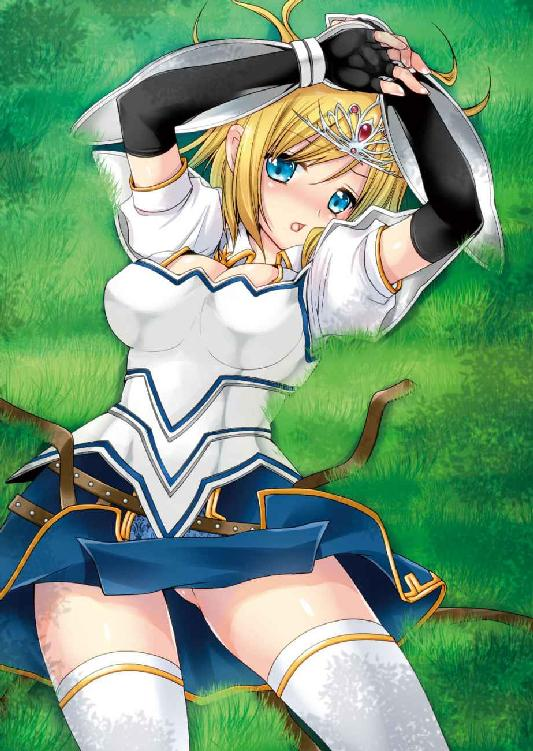
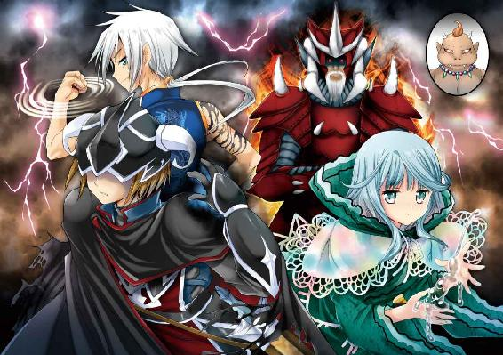
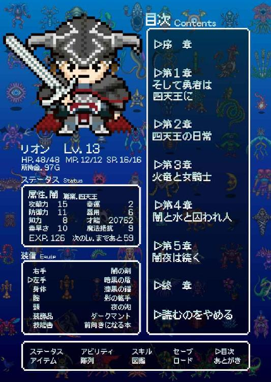
どうやら俺は四天王の中で最弱みたいです
小説：倉田シンジ
挿絵：黒澤清崇
あとみっく文庫
※本作品の全部あるいは一部を無断で複製・転載・配信・送信したり、ホームページ上に転載することを禁止します。本作品の内容を無断で改変、改ざん等行うことも禁止します。また、有償・無償にかかわらず本作品を第三者に譲渡することはできません。
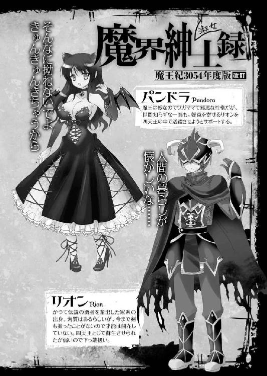
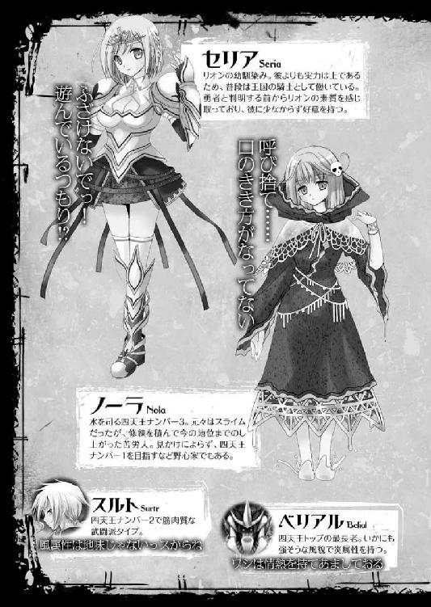
背中に冷や汗が伝っていくのを感じながら、リオンは腰の剣へと手を伸ばした。
目の前にはどっしりとした体格の魔物。
そしてここは、魔族が住処にしている古城の大広間──。
（やばいんじゃないか、これ......）
対峙しているのは、人間よりも豚や牛に近いような、不格好な頭をした魔物だった。
自分とは身体の大きさが倍ほども違う。腕の太さも胴回りも段違い。そこから醸し出される雰囲気というべきか、背負ったオーラは比べるまでもない。
少し前に冒険に出たばかりの、駆け出し勇者の自分とは何もかも格が違っている。
（この魔物、いかにもボスって感じなんだけど！ 俺の手には負えない感がひしひしと伝わってくるんだけど！）
本来であれば、こういう相手と戦うのはもっと手頃な魔物を相手に経験を積んでからじゃないだろうか。少なくとも、生まれて初めての冒険の旅に出て一週間足らずの人間が相手にすべき魔物じゃない。それくらいは経験不足な自分にも感じ取ることができる。
ブフウウッ！ と鼻息荒く一歩前に出た魔物が睨みつけてきた。
『人間風情がよくここまで来れたものだ。それは褒めてやる......』
（うおっ！ しゃ、しゃべったぞ！）
なまりがあるというか、その言葉はひどく聞き取りづらい。
だがそれは確かに人語だった。話すことが出来るだけの知能を持つ魔物となると、やはりそれなりに上位の魔族なのだろう。大きな口に牙を覗かせつつ響かせる言葉に、さっきからリオンが抱いている嫌な予感はますます高まっていく。
「ど、どうも。でも一応言っておくと、来たくて来たわけじゃないっていうか......」
気の抜けた返事をしつつも頭の中の混乱は増すばかり。雰囲気に流されて剣を構えてはみたが、まったく、これっぽっちも、勝てる気がしない。
『我は魔王に従う四天の従僕の一人。死者を禍々しき大地に誘う者、グリム』
名乗りを上げた魔物の威圧感に、新米勇者は圧されるばかり。
『グッグッグッ......冒険者よ、戦う前に名前を聞いておこう。いくら取るに足らない人間とはいえ、名すら知らずに殺すのは我らの礼に反するからな......』
「えあっ？ ああ、名前、名前ね。えと......リ、リオンだ！ ......です」
意外に礼儀正しい魔物に戸惑ってつっかえながらも名乗りを返したけれど、もはや完全にこの場の空気に呑まれて最後は情けない感じになっていた。
本来ならば颯爽と「俺が勇者リオンだ！」と名乗りたいところだけれど、変に刺激したくないし、今の自分はとても勇者には見えないので自粛しておいた。
しかしこの魔物、さっきなにか気になることを言った気がする......。
（たしか四天とかなんとか言ったような......。それってもしかして？）
「あの、魔王に従う四天って......つまりその、四天王の一人とか、そういうこと？」
『............』
相手は無言のままに頷いた。
ずずーん、と胃にくる衝撃。やはりボス敵だ。しかも四天王というからには、魔族魔物の中でも有数の強敵ということになる。
たらたらと垂れていた背中の冷や汗が、滝のように流れを強くした。
（だからこんな旅、無理だって言ったんだよ......！）
ただでさえろくに戦闘経験のない自分だったけれど、罠にかかって仲間とはぐれてしまったのが運の尽きだった。
転送魔法は罠だったらしい。それによってパーティーの仲間達はバラバラになって城内のどこかに飛ばされ、現在リオンも一人になってしまっている。
しかもただ迷子になっただけではない。
城を探索してザコ魔物と戦い経験を積むとか、宝箱から質のいい武器防具を見つけるとか、そういう過程をすっ飛ばしてのボス戦。
（みんながいればまだしも、俺一人じゃな......ははは、は......）
乾いた笑いを心に漏らしつつ、脳内に浮かんできた「死」の文字を必死に隅に追いやって。リオンはかき鳴らされる心臓の音を抑えようと深呼吸。
（こ、こうなったら......アレしかない！）
剣を片手に持ち替えて、腰の荷物袋をがさごそ。中からこぶし大の宝玉を取り出した。
ぽわーんとした光を放ち始めたそれを手に、ゴクリと唾を飲み込む。
「い、いくぞ......！」
『グッグッグッ......』
低い笑い声を響かせながら構えをとる敵に向かって、一歩前へ。
勇者リオンは高々と宝玉を掲げた。
※
リオンの家は、かつて伝説の勇者を輩出したことで知られている。
はるか昔からこの国には魔族が徘徊し、人々はそれに怯えながら暮らしていた。その状況を一変させたのがリオンのご先祖様というわけだった。
彼は魔王と戦い、打ち勝って、魔の勢力を僻地へと追いやった。
それから五百年の時を経て、予言者によってリオンに勇者の素質があると告げられたのが一ヶ月前。リオンが十八歳になった誕生日のことだ。
それはもう、お祭り騒ぎだった。
僻地に追いやったとはいえ依然として存在する魔族の勢力。それを完全に駆逐するのが、ここ数百年、この国に住む人間達の悲願だった。それを成し遂げるに違いない次世代の勇者が生まれたのだから、国中が喜んだ。
ただし問題がひとつ......リオンは剣も魔法も苦手だった。
たとえば五年前。幼馴染みの女の子との模擬試合で、あり得ないほどにボロ負けした。
たとえば三年前。練習中だった初歩魔法に失敗して家を焼きそうになった。
たとえば一年前。王国騎士見習いの選抜試験に落第した。
......そんな落ちこぼれがリオンだった。
予言者の言う通り、秘した素質はあるのかもしれない。
しかしいくら素質があっても圧倒的に経験が足りず、少なくとも今は一介の冒険者にさえなれそうもない、というのが若き勇者の現状だった。
とはいえ、勇者といえば英雄である。予言者に「お前には勇者になれる力がある」と言われたリオンが舞い上がってしまったのは無理もない。
だから、周囲の人々も勇者の出現に舞い上がっていたことに気づけなかった。
気づいた時には王様の命令で冒険の旅に出ることになっていて、あれよあれよという間に話は進み、魔族の古城を目指して出発したのが一週間ほど前。
そして目的地に到着したのが今日のことで、そのあとパーティーの仲間とはぐれて、よりにもよって魔族四天王の一人と戦うことになって......。
※
『よ、よくぞ我を倒した、冒険者よ......』
ずずーん、と地響きと共に倒れ伏した四天王を前に、リオンもぺたんと尻餅をつく。
『ぐふふっ、しかし我を倒したことで、お前はこれから魔族に狙われることになろう。覚悟して、うぐぐ、お、おくのだな......ぐっ、ふうううっ......！』
最後の見せ場とばかりに大きな声を張り上げて......ぱたり。それきり顔を伏せたその魔物は、ぴくりともしなくなった。
（た、倒せた？ 自分でそう言ってんだから、きっとそうなんだよな？）
俯せに倒れっぱなしの魔物をじーっと観察して、もう動かないのを確認して、そこでようやく「ぷはああぁぁぁぁ......」と溜め込んだ息を安堵と共に吐き出す。
「はぁ、はぁ......。や、やっぱさー、俺はこういうタイプじゃないんだよなー。剣を振るより本を読んでる方が性に合ってるっていうか......」
ぜえぜえと肩で息をしながら独り言。
「いくら王様の命令だっていっても、ろくに戦闘経験がない人間を冒険に出して、しかも最初の目的地がいきなり魔族の拠点とか、そういう無茶はどうかと思うんだよね......」
しかもその古城に居た魔物が魔族の四天王の一人だなんて、剣すらろくに扱えない自分にとってはシャレにならない。やっぱり段取りとしては、最初は野外にいるような弱めの野良モンスターを相手にしてこつこつ経験を積むべきだと思う。切実に。
「まあ、なんとか勝てたからいいけどさ......」
自分をなかば無理やりに旅に出した王様にぶつぶつと文句を言うリオンの周囲には、様々なアイテムが──正確には、使用後のアイテムの残骸が転がっている。
これらはすべてご先祖様の遺物。リオンの家に代々伝わっていた魔法アイテムだった。
詳しくは知らないが、それぞれかなり貴重な品々らしい。それを惜しげもなく使った結果が、今、リオンの周りに転がっているわけだった。
たとえばそのひとつが始めに使った聖光の宝玉。使ってみて初めて分かったが、聖なる光で魔物の視力を奪う代物だった。地味ながらも強力なアイテムで、そのおかげでリオンは致命傷を負うこともなく、せいぜいかすり傷程度の負傷で済んでいる。
体力回復の薬草をガジガジと噛みながら、リオンは目の前で倒れている魔物を眺めた。
（えーっと、たしか四天王の......名前なんだっけ）
聞いた時に極限までテンパっていたせいで名前は忘れてしまったが、とにかく四天王の一人は倒れた。これはかなりの戦果ではなかろうか。
（正直、強いのか弱いのかよく分からなかったけど......）
なにしろこちとら戦闘の経験が皆無と言っていい。それに加えて自分はひたすら攻撃を避けつつアイテムを使っていただけ。
少なくとも、これまで見たことのある魔物の中では最強だった気がする。ただ、だからといって魔族のボス敵レベルかと言われると、少し弱いような印象も......。
（いやいや、きっとものすごく強かったに違いない。なにしろ四天王だし）
「ふっ、手強い敵だった......。成仏しろよ」
格好をつけてはみたものの、剣の腕や魔法の実力とは無関係の勝利。一応の勇者としては格好悪いことこの上ないが、まあ、生きているからよしとしよう。
（はあ......異様に疲れた。バラバラになったみんなも無事だといいけど......）
みんなは手練れ揃いだし、十中八九は心配いらないだろう。むしろ、パーティーの一番の心配事がへたれの勇者であろうことは間違いない。
（もしかしたらみんなはもう合流してるのかもな。そんでいまごろ、一人で迷子になってる勇者を文句言いながら捜してたり......うう、またセリアに叱られそう......）
リオンの遠縁であり、幼馴染み。かつて模擬試合でリオンをこてんぱんにし、同い年にもかかわらずその剣技を買われて騎士に叙されているパーティーメンバー。すでに本能的に頭が上がらなくなっているセリアの怒った顔を思い出して、ちょっとげんなり。
「はあ......なんかだるいな」
みんなを捜しにいかなければ、と思いつつも身体が動いてくれない。
急に息苦しさを感じて、頭がぐらりと揺れた。ぼうっと視界が霞んでいる。
（っていうか、なんかこれ、おかしいぞ......だんだん苦しく......！ ううっ、も、もしかして呪いを受けたんじゃ？ それがあの敵の本当の恐ろしいところだったとか......！）
と、思ったが、どうやら違うらしい。
たいした負傷ではないのに、さっき敵の爪に引っかかれた傷が異様に熱く感じられる。
「あ......そ、そうか。毒にやられるとこんな感じなのか。初めて知ったな～」
なにしろ冒険者としては駆け出しのリオン。そんなことすら知らない。
（まあいいや、毒消し草ならたくさんあるしな。えっと、確かこの袋に......）
座りこんだまま荷物袋を引っ張り寄せる。
（あ、あれれー？ 見当たらないな......。だ、大丈夫......よく捜せば見つかるはず......。なんだか手が痺れて動いてくれないんだけど、まだ大丈夫、だいじょうぶ......！）
荷物袋をひっくり返して毒消し草を捜す。しかし見つからない。
（ま、まさかとは思うけど、さっき間違えて使っちゃったってことはないよな？ 防御力アップの金剛草がぜんぜん効かなくてモリモリ食べちゃった覚えがあるけど......アレが毒消し草だったなんてことは......）
どうやっても見つからない。冷や汗なのかなんなのか、嫌な汗がダラダラ流れる。
（いやいや、間違ったとしてもだよ？ あんなにたくさんあったんだから一個くらいは残ってるはずだって。ううっ、さ、さっさと見つけないと死んじゃうよ。ハハハ......）
余裕ぶったことを考えつつも手元は必死にガサゴソやっているその背後......。
ぼんやりとした人影が三つ、なにもない空間に浮かび上がってくる。
それにまったく気づかずアイテム捜し中のリオンに、自らの存在を示すように。かすかな笑いを含んだ低く抑えた声が響いてきた。
『グリムがやられたか......』
リオンを囲むように立ったその気配は、さっき倒した四天王の一人と同格。いや、むしろそれよりもはるかに禍々しい。
『ククク......しかし奴は四天王の中でも最弱......』
『こんなに弱そうな人間にやられるとは、我ら四天王の面汚しよ......』
自分達の仲間の亡骸を一瞥し、そしてもう一度、それを倒した冒険者を見下ろす。
「うう、う......どくけしそ......ぅ。やっぱ、ない......」
リオンは瀕死だった。
（ああ、そうかぁ、俺、死んじゃうのかぁ......なんだか幻聴も聞こえる気がするし......。ははは、やっぱいくら勇者でも死んじゃう時は死んじゃうんだよね......当たり前だけど......。てか、毒消し草を間違って使い切って死ぬなんて、かっこわる......い......）
ぐったり寝そべったまま、すぐ近くを囲む影に構っている余裕など皆無。その生命力はゼロに限りなく近かった。
「だ、誰か......」
傍観者達に向けたわけでもなく、リオンは助けを求める手を無意識に伸ばす......。
※
『おい、もしかしてこやつは死にかかっているのか？』
年を重ねた重厚な声が響いた。いかにも偉そうな雰囲気をまとっている。
『そんな感じッスね......せっかく久しぶりのセリフをキメたのに......』
こちらはそれよりも若く、やや軽い印象。決めゼリフを聞いてもらえなかった愚痴を交えながら、いかにも残念そうな声で同意する。
と、その時、リオンが伸ばしていた手がぱたっと落ちた。
それっきりぴくりとも動かない。
『......死んだ』
女性の、というよりも少女の声。それが言葉少なにリオンの臨終を告げる。
『うむ。そのようだな』
『どうしましょうかね、これ......』
少女の声に男性二人の声が答え、三人に減った四天王がそのまましばしの沈黙......。
やがて口を開いたのは、その中で一番偉そうな口ぶりの影だった。
『どうやら、まぐれでグリムを倒してしまったようだな』
『たぶんそれッスね。なんか強そうなアイテムが転がってますし』
周囲を見回しながら頷き合う二人に、
『......（こくり）』
無言の少女も、床に転がったアイテムの残骸をいじりながら頷いた。
『しかし......こやつがグリムを討伐したのは事実。せっかくだからその力を有効活用しようではないか。死んだばかりなら魔法の効きもよいだろう』
『というと、こいつを使って......？』
それからしばらくの間、彼らの間で今後についての話し合いが続いたのだった。
冒険の目的地としていた古城の探索を始めて数刻。
リオン率いるパーティーは、いかにも重要そうな部屋を発見した。
なぜそこが重要と思ったのかといえば、部屋の扉前にさしかかった途端、その脇に立っていた大きな石像が「この部屋を守っています」といった具合に動き出したからだ。
「ここはきっと宝物庫に違いない！ みんな、戦うぞっ！」
とリオンが宣言したのを皮切りに、現在は、その動く石像と絶賛戦闘中。
先頭で戦っているのは白い鎧に身を包んだ金髪の女騎士だった。騎士団の中でもトップレベルの剣の使い手で、将来を嘱望されているリオンの幼馴染み。彼女がセリアだ。
「リオン！ 右に回って！ 隙を見て攻撃をお願いします！」
「りょ、了解っ！」
セリアに言われたリオンが石像の右側へと駆け出す。それと同時に女騎士は前へ出て、鮮やかな剣技で石像を釘付けに。
パーティーのメンバーは、リオンを除けば四人。
歴戦の戦士である傭兵。高名な魔法使いと僧侶。そして王国騎士セリア。いずれも手練れ揃いの仲間が、魔法によって動く石像を堅実に追い詰めていく。
セリアが敵の剣を受け止め、その隙に傭兵が足に一撃。体勢を崩した石像がふらついたところで二人は下がり、代わりに前に出たのは杖を掲げた魔法使い。
「す、すごい......！」
剣を構えてそれを見ているだけのリオンは入っていくタイミングが分からず、呆然と見ているだけ。その眼前で、魔法使いが放った魔法が石像の足を爆発に巻き込む。
見事な連係が決まった。
ずずーん、と膝をついた石像がそのまま前のめりに倒れていく。
「リオン！ トドメを！」
セリアが叫ぶ。と同時に、熱風に顔をしかめていたリオンの剣が光り始めた。
見ると、僧侶が自分の剣に付加魔法をかけている。
「わ、分かった！ えっと、うぅおおおおおっ！」
どこかわざとらしい気合いの声を上げてリオンが突進。
付加魔法によって攻撃力強化された剣を手に、だだだっと敵に駆け寄ると。無防備になった石像の後頭部へ向けて剣を振り下ろし──。
ガキンッ！ と硬い音と共に、石像は頭を砕かれた。
それで終了。石像は魔力を失って元の石に戻ったようだ。
禍々しい気配が薄れると共に、さらさらの砂のようになって崩壊していく。
「......怪我はないですか？」
ふぅ、とひと息ついたセリアが歩み寄ってくる。もちろんその姿には傷ひとつない。
「大丈夫だよ。っていうか、たいしたことしてないし......」
事実、リオンはいいとこ取りしただけだ。戦闘で与えたダメージの八割......いや九割は他の仲間によるものと言っていいだろう。
（ん～......俺が弱いのは認めるけどさ）
他のメンバーが強すぎるとも言える。そのせいで、リオンのごとき新米勇者が頼られるまでもなく戦闘は終わってしまう。
（もうちょっと俺も戦いたいんだけどなぁ......。じゃないと強くなれないし）
贅沢な悩みだったが、王国の期待を一身に背負った勇者としては切実でもある。
（まあ、それはともかく......）
リオンは気分を切り替え、石像が守っていた扉を見た。
途端、その目がきらきらと輝き出す。
「おおおっ、やっぱり！ ここに宝物庫って書かれてあるぞ！ ようやくそれっぽい部屋を発見かぁ......。ここまで宝箱のひとつもなかったからな！」
「ちょっとリオン、あんまり調子に乗らないでください！ 宝物庫とはいってもどうせたいしたものは......だいたい、どんな罠があるか分からないんですからね！」
セリアのお小言もすでにリオンは聞いていない。
（ふふふ......猫をかぶったセリアなら恐るるに足らず！）
付き合いの長い幼馴染みの彼女は普段ならもっと怖い。しかし今は、口調からも分かるように、勇者をサポートする王国騎士としての役割に徹して猫をかぶっているのだ。
（ま、口うるさいのは変わらないけど......）
などと、ぶつくさ心の中で文句を言いながら扉に駆け寄る。
鍵はかかっていなかった。リオンが少し押しただけで重厚な音と共に開かれていき......その向こうには果たして、ずらりと並んだ宝箱。
「きたあああああっ！ これぞ冒険の醍醐味だよな！」
有頂天で部屋に飛び込んでいく勇者に苦笑いしながら、他の仲間達もそれに続く。
「勇者なんだから、もう少し自重してもらわないと......」
しかしそんなふうにぶつぶつ漏らしているセリアも、実際のところは油断していた。
「リオンは伝説の剣を見つけた！」
「そんなのただの銅の剣です。今のより弱いでしょうに......」
リオンが壁に立てかけられていた剣を手にして見せびらかし、それに冷静なつっこみを入れたセリアが完全に部屋に入った瞬間だった。
ぱあっ、と部屋の中が明るくなった。
「なっ......!?」
とっさに剣を抜いたところはさすがセリア。だが、それはなんの意味もなかった。
現れたのは魔物ではなく、床に浮かび上がった魔法陣だったからだ。
「おあっ!? な、なんだ......!?」
リオンの見ている前で、警戒して剣を構えた傭兵の姿が消えた。
次に魔法使い、そして僧侶の姿が。
「い、いけない！ リオン！ これは魔法の罠っ......！」
セリアが珍しくうろたえた声を出して駆け寄ってくる。
しかし、こちらの腕を掴もうとしたその手が......寸前でふっと消え去ってしまう。
（違う！ 消えたのは俺の方かっ!?）
一瞬だけ目眩を感じて目を閉じ、リオンが次に目を開くと......自分が存在しているのはすでにさっきまでの宝物庫ではない。ここまで探索してきた部屋と比べて、ずいぶん大きめの空間。まるでボス敵でも潜んでいそうな広間だ。
周囲に仲間の姿はない。最後にセリアが言っていた通り──おそらく、転送魔法の罠にかかって、城内のどこかに飛ばされてしまったのだろう。
（や、やばい。なんか嫌な予感が......。みんなとはぐれてるのに魔物と遭遇でもしちゃったら......たいへんなことに）
『グルルルッ......』
広間の奥からいやーな音が聞こえた。
さっきは「もうちょっと俺も戦いたい」なんて思っていたくせに、少なくとも今はそんな気にはなれない。
背中に冷や汗が伝っていくのを感じながら、リオンは腰の剣へと手を伸ばした。
ズシンズシンと足音を響かせて魔物が姿を現す。それはリオンの倍もあろうかという体格をした、いかにも強そうな魔物だった。
（ああ、そうだ。この魔物は魔族の四天王なんだった。俺はこのあとコイツと戦って、なんとか倒せたはずだけど......そのあとはどうなったんだっけ？ あれ？ それ以前に、なんで俺はそんなことを知ってるんだ？）
既視感に似た妙な違和感があって、リオンは、いま見ていた光景が過去の出来事であり、自分がいま夢の中にいることに気づいた。
※
「ううっ......まぶしい」
呟いて目を開けたリオンは、異様にぼーっとした頭をひねった。
（寝てたのか。夢を見てたような気がする......。それに、なんだかあったかい......）
身体が火照るような感覚があって、そのせいで目覚めたようだ。異様なほどに頭の中がぼんやりしていて、さっき見た夢のことも、寝る前にどうしていたかも思い出せない。
（えーっと、ここ、どこだ？）
どうやら自分はどこかの部屋でベッドに寝ているらしい。見たことがない場所だ。
石壁の部屋には窓がないのに、何本もの蝋燭で明るすぎるくらい。壁には見たことのない紋章が描かれたタペストリーがかかり、調度品もなかなか立派。すぐそばのサイドテーブルは、使い込まれたマホガニーがしっとりした輝きを放っている。
ただ、そのテーブル上に載っているものが異質だった。
（なんだアレ......）
人間のものやら獣のものやら判別不能な頭蓋骨。その横には変な色をした小瓶と禍々しいドクロをあしらった革表紙の分厚い本がある。
よく見てみれば壁にかけられたタペストリーの模様は魔法陣にも見えるし、それどころか周囲の床にもびっしりと変な紋様が描かれている。
（まるで邪教の儀式をやってたみたいな......）
そういえばさっきまで居た場所がそんな感じの場所だったような。薄暗くて、立派なのにどこか毒々しい装飾品がたくさんあるお城の中。自分はそこで戦って......。
と思ったところでハッとした。一気に脳内が鮮明になり、古城での出来事を思い出す。
「そうだったあああっ！」
大声を上げてがばっと起き上がる。
「あ、あれ？ 俺って生きてる......？ よな？ なんで......」
自分の身体を触って感覚を確かめてみても、どこもおかしなところはない。たしか、毒にやられて動けなくなって、どんどん苦しくなってきて......。
「そうか。パーティーのみんなに助けてもらったのか。よかった～」
自分は死んだと思ったのだけれど......いや、確かに死んだはずだ。そこは間違いない。
「ということは、神殿で蘇生魔法をかけてもらったのか」
胸を撫で下ろしながら独り言を呟いた。
蘇生は高度な魔法なので、神殿にいる高位の神官しか使えないはずだ。しかも時間が経ちすぎたらそれだって無理になるし、死に方によって施法不可になる場合も多いと聞く。おそらくみんなが大急ぎで神殿に運んでくれたおかげだ。
と、自分の幸運に感謝していると。突然、声が響いた。
「......ちがう」
「え？ だ、誰？」
すぐそばからの声に、大慌てで顔を向ける。
ベッドのすぐ脇に、魔法使い装束の少女が立っていた。視界に入らなかっただけでおそらくずっとそこに居たのだろうが、気配にはまったく気づかなかった。
「............」
背は自分より低く、たぶん年下。その身体をすっぽり覆うような濃い緑色のローブをまとっていて、片手には上等な作りの杖を携えている。いかにも魔法使いといった感じだが、ドクロを模した髪飾りを着けていたりして、どちらかといえば魔女といった方が印象が近いかもしれない。
そしてなにより目を引くのは珍しい色の髪と瞳だった。
銀髪かと思ったが、薄い水色をしていて透明感のある輝きを放っている。そしてそれに似て緑がかった色の瞳で、無言のままじーっとこちらを見つめていた。それこそ瞬きもせず、ひたすら。そこに感情は浮かんでいないのに、緊張でドキドキしてしまう。
「う......えーっと......」
目を泳がせながら言葉を探す。
「ちがう、ってことは、俺を助けてくれたのは君なわけ？ どうして？」
自分の独り言と、それに答えたこの少女の言葉からしてそう考えるのが妥当。......ではあるが、そうだとすると事情が呑み込めない。それを教えてもらいたかったのだが。
途端、少女の無表情な顔がぴくっと眉を跳ねさせた......ように見えた。
「言葉遣いがナマイキ......」
そう呟くや、少女の手が振り上げられ、ガツン！ と杖の先端で頭を叩かれていた。
「いつっ！ な、なにを......」
涙目で戸惑うリオンに向かって、その少女はひとこと、
「敬語」
と呟くだけ。行動の過激さのわりに無表情なせいで、いまいち感情が読み取れない。
（命の恩人だから自分を敬えってこと？ それにしたって横暴な......）
助けてくれたのは感謝するが、どうにも状況がしっくりこない。そもそも、この少女が自分を助けたというのも納得がいかない。
（神殿のお偉いさんしか使えない蘇生魔法を、こんな、俺より年下な子が......？）
疑問だらけでどうしたものやら迷っているうちに、その少女は背を向けてしまった。そして部屋のドアを開けると「ついてこい」とばかりに目線で指示。
「わ......分かった」
現状を説明するためだろうか、どこかに連れて行ってくれるようだ。こんな状況では埒があかないし、従うしかない。そう思って身体を起こしたところで。
「うわっ！ な、なんで俺はこんな格好を!?」
シーツ一枚かけられていたせいで気づかなかったが、自分はなにも身につけていなかった。慌てて股間を隠した......のだが、そこを見せたくなかった人物は元から興味なさそうで、こっちを一瞥すらせず。
「あの、俺が着ていた服はどこでしょうか......？」
「......捨てた」
気を遣った丁寧な問いかけだったのに無情な返事が。それどころか彼女、スタスタと廊下に出て行ってしまった。可愛い顔して非常に冷たい。
「ちょ！ 待ってくれ、じゃない、待ってくださいってば！」
すっかりうろたえてそのへんにあった質素な手ぬぐいをひっつかむと、それを腰に巻いて急いであとを追う。
ここが自分が死んだあの古城でないことは、廊下を歩くうちにすぐ理解できた。作りも違うし、等間隔に並んだ燭台には火がともされていて、なんだか生活感がある。
たぶん、あの場で死んだあとここに運ばれたのだろう。
キョロキョロしながらそんなことを考え、早足で少女を追う。
その先で待っていたのは、リオンが予想もしないものだった。
※
言葉が出ない。
なんで自分はこんなところに居るのだろう──頭の中はそんな疑問だらけだった。
リオンが連れてこられた広間には四角い大きなテーブルが置かれていた。そこにはすでに先客が二人座っている。いや......、二人といっていいのだろうか。
「来たか」
俯いたままに短くそう呟いたのはヒゲを生やした老人だった。
ただし年老いた印象は薄い。大剣を背負った筋肉質な身体は壮健に見えるし、重そうな鎧を着込んだ姿には威厳もある。騎士団を一手に率いる老将軍、といった趣があって、ざんばら髪が燃えるような赤なのと、背からゆらゆら炎が立ち上っていること以外は、まあ普通といっていいだろう。
「新しいお仲間の到着ッスね」
リオンにまっすぐ顔を向けてそう言ったのは、背が高く引き締まった体つきの若者。
口調は少し軽い印象を受けるものの、リオンよりは年上に思える。こちらは鎧は着けず布服ながらも、引き締まった筋肉が目立っていて、百戦錬磨の傭兵のイメージ。額にもうひとつ、小さな目が付いているところを除けば意外と普通だ。
そして、テーブルから少し離れた場所には首のない亡霊騎士達がずらりと並び、いかにも偉い人達を守る大事なお仕事中ですよ、と言わんばかり。
「うん......なるほどなるほど」
リオンは深呼吸をしてからゆっくりと頷いた。
どうやらここは、魔物の巣窟らしい。
（ってやばいだろおおおおおっ!! なんで！ なんで？）
さっきの少女もさっさとテーブルに着いてしまった。
四角いテーブルの三方にそれぞれ一人。もう一辺にはリオンが立ちっぱで、上官から査問会に呼び出された下っ端兵士のような気分だ。
「さて、魔族に生まれ変わった気分はどうだ？」
しかもしょっぱなからそんな言葉を投げかけられた。ヒゲの老将軍だ。
「は？ 生まれ変わった......？ 魔族って？ え？」
まったく意味が理解できないからオウム返ししかできない。
すると、その反応を見た老人は傍らの少女に目を向け、「どうなってる？」と言わんばかりに眉をひそめる。
「ノーラよ、説明はしていないのか。いやそれより、これは蘇生改造に成功しているのか？ 外見はまったく変わっていないように見えるが......」
「説明してない。改造は成功している......はず」
言葉少なに答える少女の名前がノーラだということと、もうひとつ、とあるフレーズが印象に残った。まあ、とりあえず少女の名前については脇に置いておこう。
場に呑まれてすっかり敬語が板に付いたリオンが、おそるおそる質問する。
「蘇生改造？ というと......あの、どういう意味ですか？」
自分が一度死んで蘇生させられた、というのはこれまでも予想できた。ただし「蘇生」だけならともかく、「改造」まで付くとなると一転して剣呑な言葉になるような。
「ごほん。では、ここはナンバーツーのジブンが説明しとくッス」
咳払いして老将にそう申し出ると、呆然としているリオンに三つの目が向いた。
「要するにオマエが死んじゃったので蘇生してあげたわけッス。でも人間を生き返らせたところで我々四天王にとっては得にならないわけで、それなら蘇生のついでに魔族として転生させて、空席になった四天王の席を埋めてもらおう、とまあ、そういうわけッス」
「はあ!? 魔族として転生って......！ し、しかも四天王!?」
なにかの間違いじゃないのか。魔族に転生だなんて言われても、さっぱり実感がない。四天王がどうのこうのなんてなおさらだ。
慌てて自分の身体を見下ろしてみる。
（み、見た目だって......普通だよな？ 心臓も動いてるし、手足も前と同じ感覚......。魔族っぽいところなんてどこもない......はず）
そこで老将が自称ナンバーツーの言葉を補足に入った。
「仮にも四天王の一角を崩したということは、素質があるのかもしれんと思ったまで。しかし少なくとも見た目は......なんの力も感じぬな」
やっぱり他の人が見てもそうらしい。人じゃなくて魔族だけど。
「そうッスね......いかにも弱そうなままッス」
勝手なことを言われているものの、あの四天王をアイテムだけで倒したリオンとしては「弱そう」の部分に反論の余地はない。自分が魔族になったというのはともかく。
そういえば死ぬ間際、周囲に人の気配があったような。状況からすると、あれがここにいる三人だったということか。
「あの時の声は幻聴じゃなかったんだ......」
つい呟くと、ここぞとばかりにナンバーツーが胸を張った。
「そうッスよ。四天王っぽいセリフを言うために我々は常日頃からスタンバってるッス。たとえばこの中の誰か一人がやられると、残りの者が自動的に転送魔法でその場に飛んで......そんで強敵を倒した冒険者を挑発するという、そういう伝統ッス」
......なるほど。リオンがあの半獣っぽい顔の四天王を倒したから、自動で転送魔法が発動したのか。その伝統とやらが重要なお仕事であろうことは、自慢げな三ツ目青年の態度から充分に伝わってくる。
口ぶりから察するに、一番偉い四天王トップが炎をまとった老将軍で、二番目が三ツ目の若者、三番手がノーラという不思議少女らしい。
（そして四番目に俺がなれ......ってこと？）
相変わらずピンとこない。ただその一方で、こうして魔族の城に連れ込まれている現実を思えば、それが真実だという状況証拠は揃っている。少なくともこのあからさまに魔族な人々を前にしては、騙されているようには思えなかった。
「試練を受けさせてみればいい」
それまで黙っていたノーラがようやくこちらを見てフードの下から顔を覗かせた。無感情な瞳にじーっとこちらを見つめられて、なんだか居心地が悪い。
「うむ。そうだな。どちらにしてもこやつの能力を見極める必要がある。それで死んでしまったところで一向に構わぬしな」
またひどいことを言われている予感がしたが、状況が分からない。
「それぞれの属性を決める四天王の試練と呼ばれるものがあるッスよ。たとえば四天王の長老格であるこのベリアルさんは、火の属性ッス。第一段階はこのお姿で戦うッスが、第二段階になるとドラゴンの姿になれるという、すごい人ッスよ！」
三ツ目の魔族がまた説明に入ってくれた。意外と親切だが、次々に新しい事実を知らされてちょっと混乱しそうだ。
「え？ ドラゴン......!? てか第二段階って」
「なに言ってるッスか！ 最初に小手調べの戦闘をしたあと第二段階に変身するのはボス界では常識ッス！ でも実際それをやれるのはラスボス級の実力がないとムリなんスよ！ つまりものすごく強いんス！ この方は！」
熱の入る喋りで説明されてようやく、そういうものなのだろうと理解できてきた。ボス界というのが実際あるのかどうかは謎だけれど、もうそれはいい。
とにかくこの老将は四天王最強で、火の属性で、ドラゴンの化身で、ナンバーツーにものすごく尊敬されているらしい。
「そしてこのスルトが風の属性！ 戦闘スタイルはこう見えて格闘戦ッス！ あらかじめ言っとくけど、風属性は地味じゃないッスよ！ 巷にそういう説が当たり前のように流布されてるのが悲しいッスが、分かってない！ 全然分かってないッス！」
そしてこの三ツ目の魔族青年は風の属性......。地味な自分にコンプレックスがあるということが、言葉の端々からひしひしと伝わってくる。とりあえず、こうして親切にいろいろ説明してくれるあたりがいかにも控えめなポジションだが、地味にいい人っぽい。
「残る一人が水の属性のノーラ。この女の子ッス。人間っぽいけど、実はスライムの化身で現場叩き上げの苦労人ッス。めちゃくちゃ頭がよくて古今東西の魔法の使い手ッスよ」
「えっ！ スライム......!?」
スライムといえば、ぷにぷにぐにょぐにょのアレしか思い浮かばない。魔物としても最下級といっていいレベルだし、あれの化身......？
と驚きつつノーラを見ると「なにか問題が？」とでも言わんばかりの冷たい視線で射貫かれた。眠そうというか冷たいというか、やっぱり冷静無感情すぎる視線は余計に怖い。
「つまり、我々はそれぞれ自身の特性を示す属性を持っているわけだが、お前にはまだそれがない。それを選ぶのが四天王の試練だ」
最後はベリアルが引き取って説明を終えた。
（えーっと、つまり......）
リオンの実力を測るという意味も含まれているらしいが、四天王になるためにはまず試練を受けなければならないということか......。
（どどどっ、どーすんだこの状況！ 仮にも俺、勇者なんだけど！）
勇者かと問われれば「自信がありません」としか言いようのない実績しか持たないとはいえ、一応、国の期待を背負った身。それがうっかり中毒死でのたれ死んだあげく、魔族として蘇生してしまったとなれば大問題だ。しかも四天王だなんて。
「あの、俺って実はゆう......」
そこまで言って言葉を呑み込んだ。敵である魔族に囲まれたこの状況でそんなことを言ったらどうなるか、さすがに自分にも想像できる......。
（どうしよう......）
またしても頭の中がこの言葉で埋め尽くされてしまった。
「ではさっそく試練の場に向かうとしよう」
すでに四天王達はその気らしい。揃って席を立つと、混乱したまま突っ立っているリオンの腕を取って引きずっていく。
「ほらほら、混乱するのは分かるけど覚悟を決めるッス。もうオマエは魔族として生きていくしかないッスよ！ ......そういえば名前を聞いてなかったッスね」
ズルズルと、というか軽々と自分を引っ張っていくスルトが目を向けてきた。
「リオンです......うぅぅ......」
勇者は自分の正体を明かすこともできず、状況に流されるまま。
その視界に、精密な筆致で描かれた白黒の絵画が映る。死んだ四天王、グリなんとかさんの遺影が花と共に広間の隅に飾られていたのだ。
（ごめんよ。俺が適当に戦って適当に勝ってしまったばっかりに......）
心の中で手を合わせつつ、リオンは引きずられていく。
向かったのは四天王の本拠であるこの城の奥、試練場と呼ばれる不思議な空間だった。
※
広くて丸い空間の壁に沿って、ずらりとドアが並んでいる。その扉にはそれぞれ、たぶん雷を表すであろうギザギザのマークや、炎や水滴を描いたマーク、なにを表すのか分からない黒い丸や白い丸、排泄物にしか見えないマークまで様々な印が刻まれている。
「早く」
言葉少なにノーラから命令され、リオンは途方に暮れてドアを眺めた。たぶん、この中のどこに入るか早く選べということなのだろうが。なんだかその口がへの字に曲がっている気がする......すごく微妙なのだけれど。
どうもこの少女、さっきから不機嫌らしい。正確に言うと、せっかく自分が魔法の腕をふるって蘇らせたのに人間の時と変わらず弱そうなままなので、蘇生改造魔法を失敗したと思っている......そのせいでヘソを曲げている感じ。
（そんなこと言われてもな、一番困ってるのは俺なんだけど......）
なんだか理不尽だ。と思っていると。
「このドアの向こうには、各属性を守護している精霊や魔界の方々がいるッス。どの属性を選ぶか自分で決める決まりなんスよ。でも、火と風と水は我々とかぶるから絶対ダメッスよ？ これ、ボス界の常識」
すかさずフォローに入ってくれる風属性の四天王、ホントにいい人なのかもしれない。
（勇者だって言ったら殺されるだろうし、逃げるなら隙を見計らってじゃないと。だからとりあえずここは言う通りにしておこう......。ううぅ、どうしてこんなことに）
どんどんブルーになっていく心を理詰めでなんとか奮い立たせて顔を上げ、もう一度ドアを眺める。でも、選べと言われてもどれを選んでいいのやら。
適当に、一番近くにあったドアに近づいてみた。扉に付いているのは、茶色っぽいシンプルな正方形のマークだ。もうここでいいかと手を伸ばす。
「あ、そこは......！ やめた方がいいッスよ？」
「え......。でも自分で選ぶって......」
少し抗議を含ませながら呟くが、スルトはさして気にせず、それどころか「いいからこれだけは聞いておけ」とばかりにずずいと顔を近づけてくる。
「これは土属性の扉。そして土属性といえば、パッとしないことで有名ッス」
「はあ」
「オマエが倒したグリムが持っていた、毒攻撃が得意な属性なんスよ。ヤツは四天王の歴史上、最弱の四天王と呼ばれていたッス」
「......ああ、なるほど」
土属性、いかにも地味だ。そして実際に弱かったらしい。
そっとドアノブから手を離し、左右のドアを眺める。
（とりあえずウンコ印だけは避けるとして......適当に選ぶわけにもいかなそうだな）
なので、ずらりと並ぶドアをひとつひとつ確かめていくことにした。
（うーん、やっぱり火が好きなんだけど、かぶったらダメだって言ってたしな......）
火のマークに未練たらしい視線を送りつつ、そこを通り過ぎて白い「＊」のマークへ。
（これは......なんだろう？）
「それは氷の結晶......ダメ」
珍しく感情を浮かべた瞳でノーラから睨まれてしまった。
自分の水属性と近いからか、これもダメな範疇らしい。
「それくらいのキャラかぶりは許してくれても......氷、けっこうよさそうなのに......」
「ダメ」
反論は許されなかった。
「まあいいですよ。他のにしますよ。えーっと、こっちは......お、鉄の属性かな？ 結構渋くてよさそうな気がする......いや、でも......」
だんだんノリノリになってきている自分に気づかず、数あるドアを何度も行き来。
「よし！ やっぱ雷だな！ これしかない！ って気がしてきた！」
そして選んだのは黄色のギザギザマーク。これは間違いなく雷属性だろう。そしてなんとなく格好いいし、なにより派手だ。
「そういえば、試練ってなにをするんですか？ 俺、武器とか防具とかアイテムとか、なにも持ってないんですけど......というか、ほぼ裸なんですけど」
ノブを回したところでようやくそんな疑問が湧いた。背後で様子を窺っている三人に確認しておこうと振り向くが、返ってきたのは予想外の言葉だった。
「武器がないと戦いもできぬのか？ 素手でいいだろう」
「そうッスね。殴り合い最高ッス」
ベリアルとスルトが頷き合っている。そこから理解したのは、装備なんて与えられないということと、試練はやはり戦いによって行われるであろうということ。
「ちょ、ちょっと待って！ ムリです！ やっぱムリ！」
「ああ、それは勘違いッスよ。べつに戦わなくても、要は相手に自分の実力と適性を認めてもらえばいいだけッス。一番手っ取り早いのが戦闘ってだけで......」
「でも話し合いとかムリじゃないですか!? 魔族の守護者と話し合ったとしても、俺みたいなよわっちい人間もどきを認めてくれるんですか!?」
「............さあ？」
みんな冷たい。そういえばさっきベリアルが「死んだら死んだで構わない」とか、そんなことを言ってた気がする。これはつまり、どうせそこらで拾ってきた人間だから、また死んじゃってもそれはそれで別の者を四天王候補にすればいい、と。そういうことか。
（や、やばい......。これは想像以上にやばいんじゃないか!?）
とりあえず言う通りにしてこの場をしのぐとか、そういうレベルの話じゃない。失敗がすぐ死につながる、本当の試練じゃないか。
「ほらほら、行ってくるッスよ！」
「うわわわわっ！」
なのにどんっと勢いよく突き飛ばされ、ノブをすでに回していたリオンが気づいた時には部屋の中。これも転送魔法の一種なのか、城の中とは思えない景色が広がっている。
「あわ......わわわ......！」
見渡す限り荒涼とした岩肌の荒れ地に、空の色は真っ黒。そこには月もなく、夜ではなさそうなのに稲光が走る様子がハッキリと見て取れる。
『我は雷を司る魔の精霊......。オマエが呼んだのか......？』
どこからともなく響いてきた声に、リオンは冷や汗を流さずにはいられない。
「あ、あの......とりあえず話を」
ビシイイイイイッ！
話し合いを持ちかける間もなく、全身に衝撃。
「ひいいっ！ ちょ、ちょっとまっ......！ ぐふううううっ！」
バシッ！ ズガアアァァァァァン！
「ひっ、がががががが......！」
ビリビリしてまともに喋ることもできない。死ぬ。間違いなく死ぬ予感。
地を這うようにして後退するのが精いっぱいだ。
（ひいいいいっ！ 無理無理無理！）
ところ構わず落ちてくる稲光におののきつつ、ずりずりと後方に開いたドアまで這って。
「うぐぐ......！ しっ、死ぬところでしたっ！」
ほうほうの体でドアから這い出てきたリオンの姿は、見るも無惨だった。髪の毛の先っぽがチリチリになって焼け焦げている。
「お、生きてるッスね。いきなり雷を選ぶなんてたいしたもんだと思ったッスが、ふふん。やっぱりダメだったッスね」
言外に「自分より派手な属性を選ぶなんて身の程知らずッス！」とも言われている気がする温かい言葉で迎えられて、ぜえぜえと息の荒いリオンはすでに死にかけ。
「............」
ノーラが「面倒な奴......」と言わんばかりの冷たい視線を降らせると共に回復魔法をかけてくれなければ、そのまま衰弱して昇天していたかもしれない。
とりあえずお礼を言うべきなのかどうなのか迷いつつ、生存本能に背を押されてやっぱり言っておくことにした。
「あ、ありがとう......」
だからといって、にこやかな笑顔が降ってくるわけもなく。代わりに杖が降ってきた。
「......ございます！ ありがとうございますっ！」
頭を杖で小突かれつつ言葉遣いを注意されたリオンは、身体はともかく心が満身創痍。
「はあああぁぁぁぁ......」
溜め息のひとつも漏れてしまうというものだ。
（だめだ......このままじゃ死ぬ。絶対死ぬ）
生命の危機がひしひしと迫っていることを感じる。
「派手な属性でなくていいんで、もうちょっと話の分かる属性ってないですか......？ 戦闘になるにしても、もっと弱いのとか」
「うむ......そうだな。しかし仲間になるかもしれぬ我々としては、おぬしには強い属性を身につけてもらった方がありがたいのだが」
困り果てたお爺ちゃんといった具合に、ベリアルがあごヒゲを撫でながら答えると。
「うーん。戦闘なしでもいい属性となると......あそこくらいしかないッスかね」
スルトが言葉を濁しながらちらりと見た先には、そこだけは避けたいと思っていた排泄物の印のドア。切羽詰まった頭の中で、排泄物と命が天秤にかけられる。
「くっ......！ そ、そこだけは......いやです」
そもそもなんでそんな属性があるのか謎だが、かろうじてプライドが上回った。
「じゃあせめて、守護者を魔族が務めている部屋がいいッスね。さっきみたいな精霊が守護者を務めている部屋だと力がすべてなんで、戦闘になっちゃうことが多いッスよ」
「そっ！ それですっ！ 話が通じる相手を教えてください！ どの部屋ですかっ!?」
「たしか、土の守護者がそんな感じだったッスがこれは却下として、あとは泥の守護者とか、木の守護者や森の守護者......」
「土と泥もですけど、木と森も違いがぜんぜん分かりません......」
どんどんマイナーで細分化された属性が出てきてうんざりしていると、最後にようやくそれっぽいのが出てきた。
「ああ、このドアの闇の守護者も一応そんな感じッスかね」
「闇、キミに決めたっ！」
勢いよく立ち上がると、スルトが指さしていたドアに駆け寄る。黒い丸印が付いた、闇といわれれば確かに闇のマークに見えるな、というドア。
（闇ならむしろ願ったり叶ったりじゃないか！ 充分に格好いいし、メジャーだし、誰かに『あなたはどんな属性の持ち主で？』って聞かれても堂々と答えられるぞ！）
しかしその時、背後からリオンを制止するような声がかけられる。
「しかし闇はな......。ある意味、戦いで力を認めさせるより難しいぞ」
眉根を寄せたベリアルだ。妙に難しい顔をしている。
「プライド高いッスからね......オマエみたいなペーペーじゃ間違いなく無理ッスよ？」
スルトまでそんなことを言う。
ノーラに至っては......まあこれはいつもの無表情で、突き放すような無言だが。
「いいえ、俺にはもうここしかないです。ここしかないんです！」
こうなったら意地だ。そもそも戦闘で力を認めさせるなんてのがハナから無理なのだから、もうここしかないじゃないか。他のは変なのばかりだし。
もうあとには引けないと、悲壮な心持ちでドアノブを回す。
「気をつけるッスよ！ どうせ駄目だと思うけどー！」
背後からの声援を聞きつつ、意気揚々と部屋に踏み込んでいく......！
「......あ、れ？」
しかし、中はこれはこれで予想外。普通の部屋だった。
さっきのお城の部屋とたいして変わらない。ただ、調度品の数々はさらに豪華で、銀の燭台や重厚な机が整然と置いてある。小さなテーブルにはまだ水滴の付いた冷たい水やティーセットが置かれていて、それら陶磁器のひとつひとつがいかにも高価そう。リオンのポケットマネーではカップひとつも買えないだろう。
「ん～？ だれ～？ こんな時間に......」
「あ、あれれ？」
声がした方向を向くと、そこには天蓋付きのベッドが。
そこがもぞもぞ動いたかと思うと、眠そうな赤い瞳と尖った耳が現れ、続いてふわりと広がる黒髪が宙を舞った。
「............」
ベッドに寝そべったまま上体だけ起こしているのは、線の細い女の子だった。
きょろきょろと周囲を見回し、やがてリオンが部屋の中に居るのに気づいて......。
「きゃ、きゃあああああああああああああっ！」
「うわああああああああああああああああっ！」
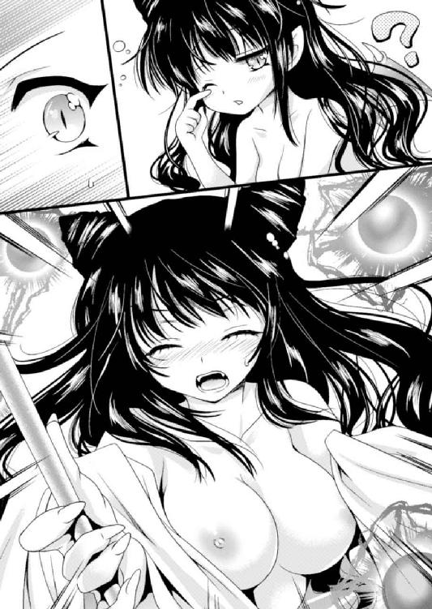
その悲鳴につられてリオンまでびくっと後ずさる。
「なななな、なにごとっ！ お前、どこからっ......！」
「ちちちち、違うんだよ。俺は試練のためにここへ......！」
リオンの言い訳を聞いているのかいないのか、女の子はシーツを引き寄せて身体を隠すと、枕元にあった錫杖を引き寄せる。するとどこからともなく黒曜石のような黒球が浮かび上がり、バチバチと電撃めいた黒い光を弾けさせながらその周囲を固めた。
「わたしに夜這いをかけるとは、なんと愚かな......！ 身の程を知るがいいわ！」
いかにも臨戦態勢。下手なことを言ったらさっきの二の舞、すぐさま戦闘が始まりそうな雰囲気だ。リオンはとっさに床へと膝をついて敵意のなさを示す。
「あ、あのっ！ 俺は四天王の試練を受けてる最中でっ、それで闇の属性の守護者に会うためにここにやってきて......えーっと！」
夜這いの疑いを晴らすべく必死の説明。その願いが通じたか、
「あら？ いま四天王の試練と言った......？」
やっとのことで、吊り上がっていた女の子の瞳に変化があった。
四天王という言葉に反応したところを見ると......。
「もしかして、キミが闇の守護者......？」
そこでようやく、落ち着いて相手の姿を見ることができた。
ふわふわした長い黒髪が特徴的な女の子は、一見すると普通の人間にも見えるが......なにしろ耳が尖っている。これはやはりノーラと同じような魔族少女ということだろうか。
すらりとした体格だが背丈はそれほどでもなく、リオンの年上には見えない。見た目と同じ年齢であるならば、この少女は何歳か年下といった感じだろう。
「ふんふん、なるほど......。なんだか魔族っぽくないし四天王の器にも見えないけど......言ってることに嘘はなさそうね」
リオンが入ってきたドアをちらりと見た少女はそう言った。宙にぽつんと浮いているようなドアは、見るからに魔法の扉。空間を歪ませてここにつながっているのを察すると、ようやく夜這いの疑いは晴れたようだ。
「ということは、お前、闇属性を選んだということ？」
「はっ、はい！ そうです！」
なんだかさっきから妙に偉そうな口ぶり......。たとえばベリアルのように老将の威厳と共に醸し出される偉そうな印象とは違い、これはむしろ......。
「あの......つかぬ事を聞くけど、キミって魔族の中で偉い立場の人？ たとえば大貴族の娘さんとか、そういう......」
「分かる？ うんうん、わたしの威厳もなかなかということよね......」
まんざらでもなさそうな少女の微笑は、まるで妖精のような純粋さを感じさせた。だが、それに続いた言葉は、そんな純真可憐な印象とは正反対のもので......。
「魔王の娘、パンドラよ。そしてここは魔界、その中心である魔王城のわたしの私室ってこと。わたしの顔を知らないということは、お前、ずいぶん下級な魔族の出のようだけど......。光栄に思いなさい、本来であれば拝謁すら叶わない相手なんだから」
「は？ ま、魔王......の、娘？」
というと、いわゆるラスボス的な魔王だろうか。実は自称魔王だったとか、マという国の王様でマ王とか、そういうことではなく？
呆然として少女を見つめるリオンの前に、つかつかと少女が歩み寄ってくる。
「ふーん......でも人型で言葉を喋る魔物ということなら、それなりに上位魔族じゃないのかしら？ お前、なんだかよく分からないわねぇ......」
床にひざまずいたままのリオンに、好奇と探るような視線が降ってきた。
魔界の月明かりを背にした少女は、おそらくは裸で就寝中だったのだろう。今はその上にシーツを巻きつけているだけだ。
月明かりを透かせたシーツの薄布が、身体のラインを浮かび上がらせていて......。
（うわ......）
見てはいけないと思いつつも、軽くシーツを押さえた胸元の谷間や、その下に続くほっそりした腰、そして股間のシルエットをはっきり浮かせている部分に目が行ってしまう。
少女はそれに気づいていないのか、リオンの眼前に仁王立ちしたまま。
「......？ お前、本当に魔族なの？ わたしはこれでも魔王の娘だし、魔の力にはかなり敏感な方だと思うんだけど......どうしてもそんな感じがしないわね」
「え、えっ？ いや、それは......たぶん元人間だからじゃないかと思うんですけど」
元は人間だったけれども一度死んでしまったこと。それから、自分でもそんな実感はないものの、魔族として蘇ったことなどをかいつまんで説明した。
「ふ～ん......。蘇生改造魔法かぁ......ずいぶん高度な魔法を使ったもんね」
だが魔王の娘パンドラは、納得したような、していないような、複雑な表情を浮かべて首をひねったままだ。
少しだけ屈んだのでなにをするつもりかと怪訝に思っていると、彼女がつんつんっとリオンの頬をつついてきた。
それはくすぐったいだけだからまだよかったのだが......。
「......っ！ な、なに......!?」
パンドラがなにかに驚いて一歩後ずさる。そしてまた近づいてくると、今度はもっとあからさまに、頬をつまんでぐにぐに引っ張ってみたり、額をそっと撫でてみたり。
「ふむふむ......なるほどー。これは興味深いわ......」
蘇生した人間がよほど珍しいのか、好き放題に触ってくる。
（な、なんだか......変な気分になっちゃうよ）
なにしろ身を乗り出した彼女の胸元が目の前。ふわりといい香りが漂ってきたりして、ついつい目を向けてしまっては慌てて目をそらしての繰り返し。相手は魔族で、しかも魔王の娘。邪悪で恐ろしい存在だというのに、とてもそんなふうには思えない。
そんなこんなで困惑したまま数十秒は経っただろうか。胸元をチラ見して邪な考えに囚われていた罰が当たったのかもしれない。
「お前、もしかして......勇者なんじゃないの？」
「ええっ!? な、なんでそれをっ......！」
まったく意識せず、思わず口をついて出てしまった驚きの言葉が、彼女の指摘が事実であることを証明していた。
「やっぱり！ 普通の人間とは全然違うもの！ そうじゃないかと思ったのよ！」
勇者たる自覚はないに等しいものの、こうやって魔王の娘に指摘されてしまうということが、逆に言えばリオンが勇者である証明にもなっている。
勇者の証明が得られて嬉しい反面、バレてしまってそれどころじゃないという焦りが沸き上がる。なにしろここは魔界で、魔王の城。いわば敵の真っ只中に一人ぼっち。
（......はい死んだ。俺、また死にますねこれは。今度は完璧に殺されちゃいますね）
早々に諦めムードになったリオンが肩を落とす。
「だから蘇生改造の魔法がうまくいかなかったのね。潜在的な勇者としての力が魔族への変化を抑え込んで、普通に人間として蘇生しちゃったのよ」
「......え？ それってつまり......俺は魔族にはなってなかったってこと？」
衝撃の事実が判明した。どうりで魔族っぽくなかったわけだ。
（でも......もうどうでもいいか。なにしろ勇者だってバレちゃったし......）
どうせここからは逃げられない。うっすらと死を覚悟して、身近な人々の顔が走馬燈のように脳内を駆け巡った。
（もう家族にもパーティーのみんなにも会えないのか。セリア、怒ってるだろうなあ......）
パーティーのみんなはあの古城から無事脱出できたのだろうか。
特に自分をよくサポートしてくれていた女騎士。口うるさくて怒りっぽくて堅物な幼馴染みだったけれど、そのぶん感謝もしている。せめて死ぬ前にもう一度会って、ふがいない自分のことを謝りたかった......。
「ねえ、お前はたしか、四天王の試練を受けに来たのよね？」
「ん......。そうだったけど、もういいや。どうせここで死ぬんだし、四天王になる努力なんて、する必要もなくなっちゃったしね......」
パンドラの問いかけを聞いて、そういえば自分はそのためにここに来たんだったと思い出しつつも、すでに後ろ向きになったリオンにはやる気がない。
「ううっ、勇者なのにその自暴自棄な感じ......だめ、きゅんきゅんきちゃう......！ っと、いけないいけない、魔王の娘として威厳は保っておかないと......」
なんだかパンドラ姫が変なことを呟いているけれど、それもどうでもいい。
（なにしろここで俺は死んじゃうんだもんな。一人じゃ戦いようがないし、そもそも俺の実力って、魔王と戦える域にないし......。きっとこのまま囚われて嬲り殺されるんだ）
リオンが、はぁぁ......と長い溜め息をついて、せめて散り際くらいは格好よく決めてやろうか、と後ろ向きなやる気を出し始めた頃。
「ね？ 名前はなんて言うの？ わたし、勇者のことをもっと知りたいんだけど......もちろん教えてくれるんでしょうね？」
「あ、俺？ リオンだよ。こんなダメ勇者の名前なんて知ってもしょうがないだろうけど......あ、でも礼儀だもんな。死にゆく者の名前を聞いてあげるのって」
リオンがブツブツ呟いているのを聞いてか、パンドラが「はうぅ～その後ろ向きな反応......」なんて悶えながらそばにあった筆を手に取る。
「わたしってば、こういう母性本能をくすぐるタイプに弱いのね......。周りにいるのってみんな正反対のタイプばっかりだし......しかもそれが勇者だなんて」
彼女の手の中にはすでに「やみのけいやくしょ」と書かれた魔法陣付きの契約書が。そこにリオンのとパンドラの名前が書き込まれていく。
「これってたぶん運命よね......うん、絶対そうだわ」
一人呟きながら署名した魔王の娘の赤い瞳は、夢見る乙女のように潤んでいた。
「えっと、確かこんな感じでよかったかしら。わたし実は守護者として契約するのは初めてだし......ちょ、ちょっと緊張しちゃうけど、しっかりやらないとね」
契約書の魔法陣からぽわっとした光が浮かび上がり、準備が整ったことを知らせている。どうやらうまくいったらしい。
「よしっと。あとは......」
ずーん、と沈んだままのリオンが気づくと、すぐ前にパンドラの顔があった。
「うわっ！ な、なに......？」
息がかかりそうなほど近くにあった顔に気づいて後ずさると、そのぶんずずっとパンドラが近づく。
「ね、どうしたい？ 契約を完全に済ませるには、両者の間で絆と呼べるものを築かなきゃいけないんだけど......」
「な、なんの話？ っていうか、んん？ 契約ってなんの？」
戸惑うリオンに、パンドラがさらに近づく。吐息がふわりと鼻先を撫でて、ゾクゾクする妙な痺れが身体を走っていく。
「だから四天王として闇の守護が欲しいんでしょ？ その契約の話をしてるんじゃない。とぼけちゃって......」
「はあっ？ 契約って......俺と？ 勇者なのに？」
「そんなの、わたしが秘密にしておけば済むことじゃない」
なんだか変な方向に話が進んでいる、ということにようやくリオンも気づいた。
「大丈夫、勇者の存在に気づけるのは魔界広しといえども、わたしとお父様ぐらいのものよ。そのわたしが秘密にしてあげるって言ってるんだから、それでいいじゃないの」
ちょっとだけ頬を膨らませて、その表情がすぐ間近に。
その細面は、ハッキリ言ってすごく綺麗だった。毛穴の存在さえ感じさせないなめらかな白い肌。頬はふっくらして、そのくせ鼻筋はすっと通っていて。
魔族の持つ美しさ、とでもいうのだろうか。触れれば壊れてしまいそうな繊細さと愛らしさ、それに加えて、わずかに濡れた瞳はなんとなく妖艶にも感じられる。
緊張して、ごくり、と喉が鳴ってしまった。
「そ......そうなの？ それでいいのか？」
胸がドキドキしているのに気づかれないよう少しだけ距離をとろうとするのに、パンドラは付かず離れず追いついてくる。床に座りこんだままじりじりと後ずさるリオンの身体に、パンドラが覆い被さってくるような形に。
「だから、いいって言ってるのよ......。あとは絆を結ぶだけ」
「きずな......というと」
「たとえば、わたしと戦って屈服させるとか」
「それはちょっと......。戦うのは苦手なんで」
じりじりと近づいてくる唇に目が釘付けになった。柔らかそうで、つやつやで、そこに触れてみたくなって......。
「勇者なのに戦うのが苦手なんだ......。じゃ、ますますわたしの手助けがいるんじゃないの？ どっちみち、契約しないでここから出て行ったら、他の四天王にリオンが勇者だってバラしちゃうんだから......」
「えええっ！ 困る！」
「じゃ、やっぱり契約しないとね。大丈夫よ、わたしがサポートして、リオンを立派な四天王にしてあげる......」
「それはそれでやっぱり困るんだけど......それとあの、顔がっ、顔が近すぎる......」
「んー？ そうかしら？」
そう言いながらも、すでに唇同士が触れる寸前。さすがに鈍いリオンでも、この状況ではパンドラが言う絆の意味が分かっている。戦って心服させるでもなく、話し合って信頼を築くでもなく、手っ取り早く両者の絆を強める方法といえば、やっぱりアレなのだろう。
（この子は魔王の娘、魔王の娘、魔王の娘......）
そんなふうに心の中で唱えて必死に冷静になろうとするのに、むしろ逆効果。心臓は背徳的な状況に早鐘を鳴らし、ズキズキする熱が下半身に集まっていく。
（ああ......、俺って意外と、悪い奴なのかもしれない）
この状況に興奮してしまって、もう、勇者のことなんてどうでもいいような気がしてくる。それどころか、このまま四天王として過ごすのも悪くないかも、なんて誘惑さえも胸の奥に沸き上がってきて......。
さわっと下半身を通り過ぎた感覚でそんな考えがまとめて吹き飛んだ。
（あっ、わわわ......！ パンドラが......触ってる......！）
そういえば自分はほとんど素っ裸だった。腰布一枚巻いただけの姿では、すでに勃起を始めている下半身を隠し通すことなどできはしない。
「おちんちん、こんなに硬くしちゃって......」
小さな声で呟きながら、パンドラの手が屹立した肉棒を掴む。最初は布の上から、そして手は布の結び目を解いて、生の姿を現したペニスへと近づいていって。
「だっ、ダメだって！ こんなこと......！」
ハッとしてかろうじて声を上げるが。
「なんで？ 契約したいんでしょ？」
「そっ、それはそうなんだけど！ だからといってこういうのは公序良俗に反するっていうか！ えーっと、ダメなんじゃないかなって思うんだけど！」
初めて異性に男性器を晒す羞恥に頭がカッとなって、自分でもなにを言っているかよく分からない。しかも次には、これも初めての感覚が襲いかかってきてなおさら混乱する。
（うっ......！ き、キモチイイ......！）
きゅっと握られたペニスが大きく跳ねる。五本の指が居場所を探っているようにニギニギと細かく動き、ほんの少し撫で上げられただけで精を漏らしてしまいそう。
「わ、なんだかカワイイ......」
ぴくぴく脈打つペニスを握って、というか弄んでいるパンドラの息がかかる。
「くっ、う......！ それ以上、さ、触ったら......！」
ゾクゾクとした感覚が背筋を駆け上ってきて、頭がぼーっとしてきた。
（このままだとホントに出しちゃいそうだぞ、俺......ヤバイヤバイ、ヤバイって）
可愛らしい女の子にペニスを握られて、撫でられて。いつの間にやらこんな状況になってしまっていて、状況に頭が追いつかない。しかも、
「ね？ これは運命だと思うの......」
なんて上目遣いで言われた日には、リオンの頭は一気に焼き切れてしまいそう。
（いいのか？ ほんとにいいのか？ こうなったらもう、いいんじゃないのか？）
頭の中がぐるぐるぐるぐる......。
（ああもう、だめだあああああっ！）
いくら魔王の娘とはいえ、見た目はこんなに可愛らしい女の子。そんな彼女からここまでされて、それでも欲情の抑制ができるほどリオンは老成していない。
「きゃ......！」
がばっと抱きついた拍子にパンドラがまとっていたシーツが落ちた。しなやかな身体が自分の腕の中であらわとなり、柔らかな胸の感触が二人の間でぷるるんっと小気味よく弾む。目を落とすと、背丈のわりにはよく実った果実が二つ。真っ白な肌の中に鮮やかな色をした赤い乳首の存在を認め、欲望のままに手に握り込む。
「はぅ......、い、意外と男らしいじゃない......。んっ、ふ......くすぐった、んんっ！ はっ、う、んんっ、ド、ドキドキしちゃう......」
くすぐるように胸板に置かれた手に押され、、リオンはゆっくりと押し倒される。
寝そべった自分の上にパンドラがまたがってきた。腰のあたりに乗ってきた少女の股間には、かすかな茂みがくゆっている。
（女の子のアソコ......！ あんなふうになるんだ......）
ほわほわとした恥毛の間に秘裂が隠れているのがかすかに見える。今はその周囲がしっとりとした輝きをまとっていて、身じろぎでにちゃりとわずかな音が響いた。
「そんなに見られるとさすがに恥ずかしいわね......」
「ご、ごめん」
「いいけど。......ね？ 触りたかったら触ってもいいのよ？」
手を誘われ、それがパンドラの股間へと。
「んっ......あ、んふっ！ 人に触れられるのって、すごくドキドキするわ......」
縦スジを指でなぞるようにゆっくり触ってみると、ぬるっとした感触と共にパンドラの喘ぎが響く。秘裂は鮮やかな紅色を見せつけるようにぱっくりと左右に開いて、ぷりっと小ぶりな小陰唇のヒダが艶めかしく震えていた。
頭がくらくらしそうな興奮と緊張が入り混じる。自分の下半身が生まれて初めてと言っていいくらい脈動しているのを意識せずにはいられない。
「し、して、いいんだよね......？」
この期に及んで情けない確認をしてしまったと思いつつも、こんな行為をするのは初めてだし、相手は魔族の娘だし......。
「んもう......契約したいんでしょ？ だったら......ね、しちゃお？」
「う、わ、分かった」
身体を倒して抱きついてきたパンドラに囁かれ、リオンとしてはもう迷うこともない。
少女の腰を支えて位置を合わせると、剥け上がった亀頭で探るようにして割れ目を開く。
ほんの少し開いた膣口が、男を迎え入れたがっているようにヒクついていた。
ぬちっ......。ぐぐっ、ぬぷ......。
こちらが位置を定めて腰を押し出すと、パンドラもそれに合わせて尻を下ろし始めた。
（はっ、入ってく！ ううっ、ぴったりくっついてきて......！）
「んんんっ！ あぅ、ふぁ、ああぁ......リオンの、すごく硬くて熱い......！」
「ううっ、パ、パンドラの中も、熱くてぬめってて......！」
手で握られているのより密着感の高いぬめりの中に、亀頭がどこまでもずぷずぷ沈んでいく感覚。かつて感じたことのない一体感に腰から下が蕩けそう。
もっと奥に入りたい。亀頭だけじゃなく、ペニス全体でこの密着感を味わいたい。
「くっ......」
力を入れて腰を押し出し、ずずずっと一気になかばまで。
「っ、んんんあっ！ っは、はぁ、あぁ......わたし......」
わずかに目を細めたパンドラの喘ぎに今までと違うモノを感じ、ふと我に返った。
「あ、あれ？ まさか......」
「うん。初めてだもの、少しゆっくり......」
初めて？ こういう行為が？ なんで？ あれれ、少し血が出てるような？
「しょ、処女......？」
思わず飛び出たストレートな問いかけに、パンドラはいかにも芝居がかったふうに目をそらし頬を染め、恥じらう乙女のごとき控えめな頷き。
（えええ!? あんなに積極的だったくせに!?）
なんとなく「手慣れた小悪魔に誘惑されて勇者が童貞喪失するの図」を頭にイメージしていたリオンとしては、それが「童貞と処女で仲良く初めてのエッチ」に変わったことに戸惑ってしまう。
それを感じ取ったのか、破瓜の痛みにちょっと涙目ながらパンドラがふわりと微笑む。
「いいのよ。わたしはそれくらいリオンのことを気に入ってるの......。ね？」
なんて耳に甘い言葉を降らせながら、ぎゅっとしがみついてくる。「もう逃がさない」とばかりの強い意思表示に薄ら寒いモノを感じつつも、身体の反応はそれとは逆。
（あああ、すごい、中がきゅって締まって！ き、気持ちいい......！ で、でも、いいのか!? なんかうまく乗せられてる気がするぞ......！）
しかし根元まで埋まったペニスは柔らかくて温かいぬめりにズルズルと舐めしゃぶられ、押しつけられたおっぱいがふにゃりぷにゃりとこちらの胸板をくすぐる。
（うう、なんという幸せな感覚......）
ふわりと漂う女の子の体臭に脳の芯まで溶け崩されて、戸惑いによって生まれた身体のこわばりは完全に消え去っていく。
ずぷぷ......ちゅくっ！ にゅるる......ぷ！
気がつけば腰の動きを再開していた。膣肉にみっちり包まれていまにも暴発しそうな陰茎を引き、また奥まで突き入れて、まとわりつく粘膜のぬめりに歯を食いしばる。
途端、パンドラが首にしがみついて背を反らした。
「いっ......！ はんっ、はぁ、はぁ......あっ、く......っん！」
「あ、わ、悪い！ 痛いよな......？」
「大丈夫よ、わたしそんなにヤワじゃないもの。それに......んんっ、あっ。こ、こうするとなんとなく、っふ！ んんっ、き、気持ちいいような気もするし......ね」
ますますしがみついてきて、腰をすりすり擦りつけては淡い喘ぎ。
その敏感な反応に。あるいは、涙を浮かせつつも軽く微笑むそのけなげさに......。
（くぅ......か、かわいい......いやらしいっ......！）
ドクンッ、と跳ねた心臓を鷲掴みにされた。
この女の子の中に精を吐き出す──。ただそれのみを目指して、勇者様はがっしりと少女の身体を支える。
「あっ！ リオンってば、こ、擦れてっ......はぁ、んんっ、く......んっ！」
ぐいっと突き入れられた亀頭が膣壁を擦り上げながら進んでいく。処女が相手と知ってこのまましばらく止まっていようかとも思ったけれど、それもなかなか難しい。なにしろ、抑えが利かなくなるくらいに気持ちがよすぎる。
にゅるぶぶぶ......。ちゅくっ！
しかも愛液の量がどんどん増していた。挿入による水音をわずかに響かせてそれを知らせた膣内は、もっと強く貫いてほしいとでもいうようにきゅっと締まってくる。温かくてにゅるにゅるした感触がペニスを包み込んできて、ぞくりとしてしまって。
「ううっ！ これは......」
なるべくゆっくりと進ませているせいで、まとわりつく感覚が強く感じられてしまう。このまま大きく突き込みたい、ぐりぐりと奥に押しつけたい。その欲望と戦いながら、出来るだけ緩やかにずりずり腰を上下させる。
ずずずっ、にゅるぷ、ぷぷっ......ぐちっ。
「はぁ、あ......。おなかの中に、ちゃんと感じるのね......」
少し身を起こし、うっとりとした吐息を漏らしながら下腹に手を置くパンドラ。その仕草がいちいち愛しくて、もしかしてすべて計算ずくなのではないかとさえ思えてしまう。
しかし、リオンが少しでも動きを激しくすると。
「あっ！ はぁ、はぁ、んんっ......！」
途端に吐息を短くして切なげに喘ぐ少女の姿からは、それが演技でないと感じ取れる。
だからこそリオンは我慢できない。白い頬をぽーっと赤く上気させて自分に身を委ねているパンドラを前にしていては、腰の動きがだんだん速くなっていくのを止められない。
繰り返しの動きが次第になめらかに、小刻みになったり、かと思うとひと息に深くまで貫いたり。次第に激しくなっていく。
ずちちっ！ くちゅ、にゅぶぶぶっ！ ずちっ、ずぷぷ！ にゅぶぶぶっ！
「あうっ、んんっ！ っは、リオンっ、ああぁ......ん、ふ......！」
それに合わせてパンドラの声も細切れに。大きくなったり小さくなったりしながら、それでも苦しげな様子は見せない。
むしろ心地よさげに目を細め、さっきよりも身体から余計な力が抜けている。こちらの首にしんなりと腕を巻きつけて、耳元に囁いてきた。
「っふ！ そ、そんなに......んうっ！ あぁっ......リオンがわたしの中を、わたしを感じてくれてる。ねえ、リオンも気持ちいいのよね......？」
もはや興奮に息が乱れてしまって言葉を返すのもままならず、こくこくと何度も頷く。
「あんっ！ んふふ......」
嬉しそうな微笑にはわずかに小悪魔めいた笑いも混じっていて、なんだか背徳感。
（そ、それにしても......くぅ、うううっ、中がどんどん......！）
破瓜の痛みにこわばっていた内部が、ひと突きごとに馴染んできている気がする。まとわりつく膣内のぬめりが蠢くように感じられ、引き抜くペニスに吸いつく感覚。
（ううっ、これはヤバイ......）
腰の奥がジリジリ炙られるように疼く。早く出してしまいたくて仕方ない。でも、もっと味わっていたい気持ちもある。自分でもどうしたいのか分からない。
「ね、リオン......なんだか、ふわふわするの。このまま......んっ」
喘ぎに紛れた呟きを漏らし、パンドラが胸を擦りつけてきた。
ぷにゅっとした感触が自分の胸にくっついて、身体の動きに合わせてふにふにと揺れている。少女の表情にもかすかに切羽詰まったものがある。
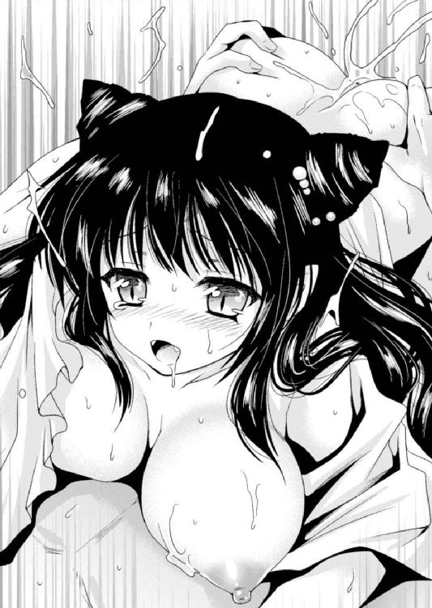
どくん、と血流が増し、ペニスがひときわ張り詰めていた。射精の予兆が体中を走る痺れとなって限界を知らせてくる。
くっ、と息を吐いたリオンは、無意識に腰を強く押し上げていた。
「ひんっ！ あぁ！ お、奥までっ......！」
目を見開いて喘ぐパンドラを眼前に、腰の動きが一気に加速する。亀頭が膣肉をかき分け、そこら中をぐりぐりと突き上げ。
ぐちゅ、ぷぷっ、ずちっ、にゅるるっ、ずずっ！
そのまま抽送。速いテンポでの出し入れが始まる。
「ううっ！ で、出そう。もう、我慢できない......っ」
意識せず呟き、少女の身体を抱き寄せていた。そのまま激しく小刻みに貫き続ける。
「く、はんっ、はぁ、う！ んんっ、いっ、そのまま......っ、はぁ、あ！」
拒むでもなく、パンドラもぎゅっとしがみついてきた。彼女の方も腰を揺らし、膣肉に埋まったペニスの先端から根元までをぞわりとした感覚に包まれる。
（うあっ！ 中で撫でられて......！ きっ、気持ちいい！）
「んあっ、ふぅ、くっ、リオン、すごい......んんうっ！」
パンドラが腰を上下に揺らすと、ぬめりに満ちた襞のざらつきが一斉に男根を責め嬲った。もっと奥まで、とでも言わんばかりに腰が擦りつけられる。
「くっ......！ こ、これは......もう出るっ！」
そこが限界。きゅっと締めつけられたペニスが腰から全身へと痺れを走らせていた。
「んんんっ！ き、きてぇ、ふっ、ふぁあぁぁぁっ！」
一気に腰を引いて、パンドラの尻を持ち上げて。ずぷぷっ！ と勢いをつけて反転。大きな粘音を響かせて奥まで押し込むと、亀頭がずんっと一番奥に突き当たる。
「ひっ！ あああっ、くぅぅぅぅんんっ......！」
魔王の娘はきゅっと噛みしめた唇から喘ぎを漏らして背を反らした。勇者がその細い身体を抱き締めて支え......きゅきゅっと狭まって痙攣する膣肉の感触に呻いた瞬間。
彼女の奥に欲望を吐き出していた。
どくどくどくくっ！ どぷぷぷっ、どぷどぷどぷぷぷっ！
まだ蠢き続ける膣内の動きに導かれるように、かつてない量の精を射出し続ける。
「あうぅ、で、出てる......。リオンの、すごい......ああんっ、ふぅぅ......」
どくどくと脈打つペニスを感じながら、弱々しく、しかし満足げに呟くパンドラ。その上に倒れるようにしてリオンにしがみついてくる。
その傍らでは、魔法陣の描かれた紙片が契約の完了を告げる強い輝きを発していた。
※
「まさか本当に闇属性を手に入れるとはな。それにしては弱いが......いや......」
なんて呟きながら、火の四天王であるベリアルが溜め息混じりに首をひねる。
彼は、新しく四天王に加わった新人の実力を測りかねていた。
そしてその前方には、床の上にうずくまって呻いているリオンがいる。
闇属性の契約を終え、意気揚々と戻ってきたのが少し前のことだ。
気難しいはずの魔王の娘になぜかリオンが気に入られたことに目を丸くした、というか、自分より目立ちそうな属性に嫉妬したスルトの提案で、力試しに軽く手合わせしてみようということになった。
その結果がこれである。自称、格闘戦が得意なスルトにあっさり吹っ飛ばされて、リオンは胃の中のものが逆流しそうになっているわけだった。
「うぐぐ......だ、だからやめましょうって言ったのに......」
しゃがみ込んで呻く新四天王の傍らではノーラが突っ立っている。
「............（つんつん）」
そして無言ながらに、手に持った杖の先でうずくまるリオンの頭をつついていた。
「......どうやったの？ 言って」
なんのことか、と問い返すまでもなく、彼女の透き通った瞳が「なんでこんなに弱いのに魔王の娘に認めてもらえたの？」と問いかけていた。
よっぽど不思議らしい。リオンとしては、それはそれで心外だけれども......。
「そ、それは......秘密というか。うぐ、い、痛いからもう突っつかないで......！」
勇者なのを気に入られてエッチなことしました、とは絶対に言えない。
「......弱いくせに」
理由を秘密にされたのが気に障ったのか、ノーラはそれきり押し黙ってしまった。
それでもやっぱり、じーっと見つめる視線は逸らしてくれない。責められているような気分になる。
「ううう......言われた通りにクリアして帰ってきたのに......」
その時、愚痴るリオンの背後にふわ～っと幽霊のような人型の揺らめきが。
「んもう、お前達は見る目がないわね......。リオンはこれからすごく強くなるんだから。わたしが守護するんだから間違いないわよ」
姿を現したパンドラが口をへの字にしていた。
さっきと違ってドレスに身を包んでいる。黒を基調とした精緻で上品なレース飾りの付いた衣装は、それでいて露出が多く密着度も高めで、なんとなく妖艶さも感じさせる。
こうして見るといかにも魔王の娘といった印象だ。
闇の守護者としてリオンと契約した彼女は、こんなふうにリオンの身体に宿ることができた。これでいつでも呼び出せるし、闇の力を借りられるようになったわけだ。
（というか、それって常に監視されてるってことじゃ......？ だいたい、守護を得たって言ってもたいして強くなった感じはしないしさ......。うぅ、吐きそう）
口を押さえながらようやく立ち上がったリオンが心の中に愚痴った。
なにしろ元が弱い。多少パンドラに力を貸してもらえたところで、他の歴戦の四天王と比べるとまだまだらしかった。
心中で文句を言っているリオンをよそに、他の四天王がなにやら話し合っている。
「パンドラ姫には悪いですけど、現時点ではコイツよわよわッスからね......」
実際に戦ったスルトから言われるのはまだ納得もできる。
「リオン、私より弱い」
でも、戦ってないノーラにまでそんなことを言われる筋合いは無いと思う。
「うむ。四天王最下位ということに変わりはないな」
しかしベリアルはそれを否定せず。
（べ、べつに悔しくないけどさ）
結局リオンは、四天王内の序列で一番下に置かれてしまったらしい。
（いやいや、魔族の四天王の中で偉くなっても困るしね。悔しくなんてないよ？）
まったく、どうしてこんなことになってしまったのか。
勇者なのにあっさり死んでしまって、かと思ったら魔族として蘇らされてしまって......。どうやら勇者の力で魔物化はしてないらしいが、どっちにしたって状況は複雑だ。
「あ、そうだレオン。闇属性の装備をあげるわ」
「え？ 装備って......」
パンドラからの突然の呼びかけに顔を向けた時には、すでにリオンの身体には黒い鎧が装着されていた。
「うわわっ！ いつの間に!?」
「闇の力を具現化した魔法の鎧よ。うん、なかなか格好いいんじゃないかしら」
鎧だけではない。ブーツから籠手、ふわりと広がったマントや顔を覆うような兜まで。腰にはいかにも特別そうな装飾がある黒鞘の剣も。
「ど、どうせならさっき戦う前にくれればよかったのに......」
「悪かったわね。ほんとは契約したらすぐあげなきゃいけなかったんだけど、いろいろあったし、つい忘れちゃってたのよ」
と言いながら思わせぶりな視線。ついでにほんのりと頬が染まっていたりして。
「ごほん！ んんっ！ な、なるほど、これはいい鎧だね」
咳払いでごまかしつつ、自分の姿を確かめてみた。
......なかなかの装備だと思う。
鎧だって剣だって質のよさは見ただけで分かるし。顔を半分覆うような兜も、元が勇者な自分にとっては都合がいい。なにしろ自分は勇者候補としてそれなりに有名なので、顔を隠せるならそれに越したことはない。
（でも、それにしたって......）
こうして見ると、いかにも四天王が着けるようなワルっぽい装備だった。
「ちゃらら～ん......ゆうしゃは悪の四天王の装備をてにいれた」
新たに彼らの仲間入りした闇の四天王リオンは、誰にも聞こえないように小さく呟いて、そうしてあらためてがっくりと肩を落とした。
闇の四天王リオンは、いまや一国一城の主だ。
とはいっても、自分が倒してしまった土の四天王グリムの古城を受け継いだだけ。
前任者が手抜きしてあまり手入れしていなかったこの城を、もっとまともに機能するようにして、四天王としてこの城の周辺にいる魔物を統括するのがお仕事らしい。
しかし統括とはいうものの、その魔物達はといえばそのへんをふらふらしているだけ。
そんなだから、リオンにも特に仕事と呼べるようなものはない。
（魔王軍ってまったりしてるな～）
などと思いながら、テラスのテーブルでお茶を啜っているリオンだった。
ベリアルに聞いたところによれば、基本的に魔族は受け身なものらしい。
冒険者がやってきたらその相手をしてやっつけるのが仕事なのであって、この地に居を構えてから数百年、魔王軍から人間の国に攻め込んだことはないのだそうな。
（そういえば、魔物が村に攻め込んできたなんて話は聞かないもんな......）
五百年前、ご先祖の勇者からこの地に追い詰められてしまった魔王は、やる気をなくして魔界に帰ってしまっているらしい。
だから人間界に残った魔族も積極的に動くことはなく、そんなまったりした状態。人間界のお留守番を任された四天王が、たまにちょっかいを出してくる人間達の相手をしてやっている、だけというのが現状だった。
「ふぅ......。それならそうと言ってくれれば俺も死ななくて済んだのに」
と独り言を呟いてお茶を啜る。
いまさらそんな魔王軍の内情を知ったところで、現役の勇者としては困ってしまう。
パーティーを率いたリオンが勇者としてこの城に乗り込んで、死んだり生き返ったり、いろいろあってからまだ数週間。いや、もう数週間と言うべきか。
自分は死んでいたので知らなかったが、どうやらあの時のパーティーメンバーは無事にこの古城を脱出して国へ帰ったらしい。
（と、いうことは、やっぱり俺は死んだことになってるのかな......）
せめて自分が無事なことを知らせたいが。かといって、死んだあと生き返って四天王の一員になってました、なんて報告するのもはばかられるわけで。
（でもそれ以前に、パンドラがいるからこの城から抜け出せないんだよな......）
なにしろ彼女は闇属性を司るリオンの守護者。その気になれば幽霊のように自分に取り憑いて監視することも可能だ。それにたとえ隙を見て抜け出したとしても、守護者は庇護者をすぐに見つけることができるらしい。要するに、どうやったってバレてしまうのだ。
それでなくても......。
「あー、リオンったらまたくつろいでる！ 冒険者がやってきたらどうするの！」
ちょうどその時、ティータイムを楽しむリオンのもとにパンドラがやってきた。
「まったく、鎧まで脱いじゃって気を抜きすぎ！ 武器や防具はちゃんと装備しないと、持ってるだけじゃ意味がないの。分かる？」
「わ、分かってるよそんな基本......。初心者じゃあるまいし」
と、こんな具合。たとえ守護者としてリオンに取り憑き状態でなくても、なんやかやと理由をつけていつもそばにいるので逃げる機会などありはしない。
「まったく、リオンは仕方ないんだから......どうせまた『どうやってお城を抜け出そうかなー』なんてこと考えてたんでしょう？」
と言いながらパンドラがすぐ隣に座る。テーブルは広いし椅子は他にもあるのに、座る距離感が妙に近い。
「そっ、それは......考えてない！ 俺は考えてないよそんなこと」
思わず言い淀んでしまってから慌てて否定したが、たぶんお見通しだろう。
「もう諦めなさいって言ってるのに。リオンはわたしと一緒にいるの。そしてやがては四天王のナンバーワンになってもらって、お父様に紹介して、それから......うふふふふ」
「............」
お父様である魔王に紹介してそれからどうしたいのか、怖いので聞けない。
（きっと勇者を味方に引き入れたって自慢したいだけだよな。そういうことにしておく）
無理やり自分を納得させたリオンがついっと視線を逸らす。
が、そんな勇者様の腕にパンドラが寄り添ってきた。
「ん～。今日も暑い......」
なんて言いながらも、こちらの肘のあたりにぴとっとくっつけられる柔らかな感触。
「さ、さて。鎧を着ないと。いつ冒険者が乗り込んでくるか分からないしな」
さっき言われたことをそのまま返して立とうとするが、彼女は離れない。それどころかこちらの腕を抱くようにしがみついている。
（くおっ......や、柔らかいな......！）
上げかけていた腰がすとんと落ちて元の場所へ。
ドレスが大きく開いた胸の谷間に腕が囚われてしまった。ぷにょんぷにょんとした物体が腕の両側から押しつけられて、とっても夢心地な体温と感触を伝えてくる。
「リオンったら、昨日の夜は疲れてすぐ寝ちゃったのよね......」
うん、その通りだった。何年もほったらかしになっていた地下牢にキノコモンスターが大発生して城中がキノコで埋め尽くされそうな勢いだったので、朝から丸一日かけて大掃除したのだ。
「あんなの、ザコモンスターに掃除させればいいのに」
ぷにぷにぷにぷに。
「そりゃそうかもしれないけど、この城はいま人材不足に陥ってるじゃないか。真面目に言うこと聞いてくれる働き手っていうとスライム君がちょっとしかいないし......」
すりすりすりすり。
「そうだったかしら。じゃあ、そのへんをぶらついてる魔物を連れてくればいいじゃない。東の森に行けば少しは知能がある魔物もいるはずだけど」
ぷにすりぷにすりぷにすり......。
「そ、そうなんだ。で、でも、どうせ戦って力を認めさせなきゃいけないとか、そんな感じなんだろ？ って、ううううっ！」
手が伸びてきて、カチカチになってしまった下半身を撫でられた。
心地よい刺激にびくっと震えつつ、さすがにこれ以上は無視できずパンドラの顔を見る。その表情はというと、すっかりうっとり。股間に服の上から指が巻きついてきた。
「ひ、昼間っから......？ 俺、さすがにそれはどうかと思うんだけど」
「じゃ、リオンが勇者だってみんなに言っちゃおうかな」
「............」
返す言葉もなく無言でいるところに、ちゅっ、といきなりのキス。
「こ、こら......ううっ」
「ねぇ、リオンってばぁ......っむ、ちゅっ、ん......あんっ」
いつもいつもこんな感じで流されてしまうのは勇者としていかにも問題がある。とは自分でも分かっているけれど、だからといって弱みを握られているのでどうしようもない。
しかも、文字通りに弱いところを握られてしまったあとではなおさら制止が利かない。
キスの興奮と直接的刺激で血がどんどん集まってムズムズし始めている自分の下半身を恨めしげに見て、リオンはいかにも「しょうがないなー。俺はやりたくてやってるわけじゃないんだけどなー」といった感じの溜め息をついてみせるのが精いっぱいだった。
※
あっという間に今は夜。
特に仕事らしい仕事はないとはいえ、こうもすることがないと不安になる。
（しかも、仕事するっていってもあくまでも四天王の仕事だしな......）
勇者なのにこれでいいのか、なんて比較的まっとうな自己嫌悪と、
（今日だってパンドラとしちゃったし......）
誘われるがままイタしてしまって、ダラダラと一日が終わってしまった自己嫌悪。
そんな日常に慣れてしまいそうで、なんだか怖い。
急ごしらえとはいえそれなりに豪華な寝室で一人ウジウジと悩むリオンの耳に、かすかな音が飛び込んできた。
コンコン、とドアから音がしたようだ。
この部屋をこんな時間に訪ねてくる者といえば一人しかいない。
（パンドラ......だよな？）
だがちょっと不思議だった。なにしろ、魔王の娘はもう寝ていると思っていたから。
昼間にすっかり満足してしまって夕食の時にはすでに疲れが出てうつらうつらしていたぐらいだから、きっとそうだろうと思っていたのだけれど......。
（もしかしてなにか異変があったとか......？）
首をひねりながらドアを開けると、そこにいたのはやっぱり魔王の娘だった。
「ど、どうかした？ なにか用事でも......」
「............」
ドアを開けて問いかけても無反応。いつもと同じ見慣れた格好なのに、なんだか妙な雰囲気がある。無言のまま、俯き加減で突っ立っているだけなのだ。
この城に居を構えてからパンドラは毎晩のようにこの部屋に忍んでくる。そこで昼間のように一悶着あったりして、腰の引けたリオンを積極的なパンドラがずるずるベッドの中に引きずり込んで......というのがいつものパターンなのだけれど。今日はなんだか違う。
パンドラはなにも言わずリオンの横をすり抜け、部屋の中に入ってしまった。もしかしたら、部屋の中でしかできない話があるのかもしれない。
（真面目な話か......？ な、なんだろう......）
変に緊張してきた。
いつもならストレートにベッドに飛び乗るなり、言葉巧みにすり寄ってくるなり、とにかく積極的な彼女なのに、今日はひとことも喋らないし近寄ってもこない。調子が狂う。
（俺だってべつに、やりたいってわけじゃないけどさ。いつもはパンドラに誘惑されて流されちゃってる感があるし......。いや！ 言い訳するわけじゃないけど！）
いくら「言うこと聞かないと勇者だってバラしちゃうから！」なんて脅迫じみたことを言われるとはいっても、どうやら好意を寄せられているのは確からしい。それなのにそんな責任転嫁をしてしまうのは男として格好悪い気がして、心の中で慌てて否定した。
その動揺をごまかすように、適当に話しかけてみる。
「えーっと、お、お茶でもいれよっか？」
「............（ふるふる）」
首を振って「いらない」とだけ伝えてきたパンドラだが、かといって口を開くわけでもなく。部屋の中をぐるりと見回したあと、ベッドにちょこんと座りこんだ。
そしてまた沈黙。レオンは突っ立ったまま、どうしていいのやら。
「あー、えーっと、なにか用があるんだろ？」
それでようやく、こくり、と頷く。
そして軽く握った手を胸に置いて、赤い瞳でじーっと見つめて。その視線が、恥ずかしそうにわずかに逸らされた途端。
「こっち......きて」
小さな声でそんなことを言われた。
（なんだ......？ ほ、ほんとに様子がおかしいぞ？）
不覚にもドキリとしてしまってから、余計に戸惑う。
「あー、えー......こ、これでいいのかな？」
挙動不審な感じにぎくしゃくした動きでベッドに腰掛ける。
（いつもだったらここでパンドラが身体をすり寄せてきて、俺は一応嫌がりながらもつい勃起しちゃって、収まりがつかなくなってそのままずるずる......って感じなんだけど）
今日はそうならないようだ。かといって、重要な話があるからやってきた、という感じでもなさそう。それだったらもう普通に話を始めているはずだ。
（やっぱりいつも通り夜這いってことなんだろうけど、それにしては......）
すぐ隣に座る彼女の頬が、なんだか上気しているような。それも、積極的なパンドラには少し欠けているといえなくもない、羞恥心からくるほんのりした赤さに思えてしまう。
やっぱり違う。いつもより控えめで、恥ずかしがっていて、はかない女の子っぽくて。
（う、なんだか緊張してきた......。ていうか俺、なんでもう勃起してるんだよ!?）
いつの間にやら、このあとの展開を予期した下半身が血を集めていた。男としての条件反射を情けなく感じつつも、視線はついついパンドラへ向かう。
どうやら彼女はこちらをじーっと見つめていたようだ。観察するように、心の中を探るように、赤い瞳がまっすぐに向かってきて、その視線がこちらとぶつかる。
「............」
目を逸らさない。恥ずかしそうに頬を染めながらも、じーっとこちらを見つめる視線に誘われ、リオンも硬直したように視線を固定。正面から二人して見つめ合ってしまう。
（うわ、うわ、なんだこの状況！ これじゃまるで......！）
まるで恋人同士だ。しかもムード最高潮の。
自分も頬をかっかと燃やしてしまっている。今までと趣の違う興奮と、恥ずかしさと、いろんなものがごちゃまぜになった感情が胸の奥から湧き出てきて、しかも股間が疼く。
そのまま、パンドラが喘ぐように唇を動かす。
「リオンから、して......ちょうだい」
「えっ、俺から......!?」
いつもパンドラが主導してコトが進められるので、どちらかというとリオンは受け身。
だからそんなこと言われるのは初めてだった。股間がズクンと脈打ってしまう。
ぽつりぽつりと呟くような話し方もパンドラにしては控えめで、なんだか違う人物を相手にしているような新鮮さがある。
（ん？ 違う......人物？）
なんとなく感じただけのことが妙に気にかかったけれど、
「早く」
言葉少なに、不機嫌というか拗ねた感じというか、ストレートなおねだりをされてしまって、それどころではなくなった。いつも彼女の強引さに流されている、なんて言い訳めいたことも考えていたくせに、今はそれを拒絶するなんて思考は欠片も浮かばない。
（えーっと、えーっと、ど、どうすりゃいいんだ!? そうだ、まずは服を脱がせて......！）
そんなことすら意識したことがないので、いざやってみるとなると、どこから手をつけていいのか......。ドレスはどうやって脱がせたらいいんだろう？
すると、それに気づいたのかパンドラがわずかに目を落とす。
「......ここ」
そう恥ずかしそうに呟いて、お腹で編み上げになっている紐だけをしゅるりと緩めた。
肌にぴったり沿ったドレスの前身頃がそれでわずかに浮いて、乳房と布地との間に開いた隙間からは赤く色づいた小さな蕾が覗いている。
（これは......くうっ！ なんて破壊力のある光景......！）
ここ最近は毎日のように目にしている乳首の色なのに、こうしてちらりと見えただけで股間が爆発しそうになってしまう。
新鮮さのある欲情の高まりを感じながら、彼女の腕をそっと引き寄せた。そのまま紳士的にドレスを脱がせてあげようと思ったのだが......。
そんなかすかな接触だけで、パンドラ姫は怯えたように肩をぴくっと震わせた。
やっぱりいつもと違ってういういしい。そんな反応を見せられたリオンの頭には一気に血がのぼって、服はもうこのままでもいいから早く抱き締めたくなってしまった。
「パ、パンドラっ......！」
がばっと抱きついて、そのままの勢いでベッドに押し倒す。
「あっ......！」
驚いたような声を少しだけ上げた魔王の娘だが、まったく抗うことなく身を委ねたまま。リオンに抱き締められて目を細めると、ちょっとだけ身を固くして仰向けになった。
ドレスの胸の部分がはだけて、露出した二つの大きなおっぱいがぷるるっ、と。それを恥ずかしそうに軽く腕で隠しながら、魔王の娘は無言で目を伏せている。
（うおおっ！ こ、これは......萌える！）
恥じらう少女というものの破壊力を感じて、リオンの股間はすでに最高潮。
だが、このまま欲情に任せて即挿入というのでは男のプライドに関わる。主導権と身体を委ねている少女に対して失礼というものだ。
ゴクリと唾を飲み込んで、何度も何度も心の中で自制を叫んだ。
（がまんがまんがまん......！ も、もう少しだけ......）
必死で自分に言い聞かせて身体をずらすと、パンドラのふんわりしたスカートをめくり上げて足の間に頭を突っ込む。
白い肌に肉付きのよい太腿、それなのにほっそりと長く伸びた足の上に手を置く。すべすべとした感触を楽しみながら、彼女が足を閉じないように押さえ込むと。
目の前に純白のショーツがあった。詳しくないが上質の薄い布地で、足から手を離してそっと触ってみるとわずかに湿りがある。
つうっと、わずかに感じる窪みに沿って指で撫で上げてみる。
ぷるるっと全身を震えさせてパンドラが応えた。きゅっと握った拳で胸を押さえるようにして震えている姿が、なんともいえず愛らしい。
（ああ......パンドラってこんなに可愛らしいところもあるのか......）
ふわっと漂う淫靡な香りに脳髄を痺れさせながら、思わず顔を押しつけていた。鼻先をぐりぐりと擦りつけたり、突き出した舌と唇でショーツを押し込んだり。
乱暴にも感じられる愛撫をショーツの布地越しに秘所へと向ける。
「っ、んんっ......！ そんなことする、の？」
「する！ 断固として！」
言い切って、指で邪魔な布をどけてしまう。
夜間でも魔法の光で明るい室内にふっくらとした無毛の恥丘が晒され、縦に走った控えめな秘裂が目に飛び込んできた。
（初めての時は、いきなりだったからこんなにじっくり見られなかったけど......）
こぢんまりとした作りながらに、ぷにっとした大陰唇の盛り上がり。恥丘は無毛のつるつるで、子供のような秘裂といった印象。
ソコにむしゃぶりついた。
「ふっ、んんん......！ あ、う......」
淡い声を漏らして悶えるパンドラを押さえるように、股間の左右に手を置いた。指で押すようにして恥裂を開き、ぷりゅんと飛び出す小ぶりな小陰唇のヒダを舌で舐め上げる。
ぷちゅ、ぴちゃっ、ぴちゃ......ちゅぷっ！
たらりと流れ出た愛液がすぐに舌に絡み、ぴちゃぴちゃといやらしい音に。それが舌の動きを激しくさせ、リオンはますます興奮して猫のように舌を跳ねさせた。
「ふっ、っん......！ っは、う......んんっ」
ぴくぴくと揺れる身体に合わせて、小さな声が響いてくる。まだ恥じらいがあるのか、その声は抑え込んだようにくぐもっていて断続的。
だが、舌を尖らせて膣口をほじるように動かした途端、それが驚いたような響きに変わった。調子に乗って何度も膣口に舌先を引っかけ、そのままぴちゃっと舐め上げる。
「ひゃうっ！ う......はぁ、はぁ、んんっ！」
その先には少しだけ体積を増した陰核があり、舌先で膣口を舐め上げる勢いで弾くようにしてやると、あからさまに背を跳ねさせた。
「だ、めっ......。んっ！ っふ、はぅうぅぅ～っ！」
いたずらされているような感覚にでもなったのだろう。リオンを制止するような言葉を漏らし、しかしそれ以上は続かずに、言葉を途切れさせてまた全身が跳ねる。
「ひっ、んんんっ！ あうぅ......そこっ、やめて......ぇ」
ようやく制止の言葉を喘がせたものの、それを聞いてもリオンは止めない。パンドラが気持ちよくなっているのは明らかだった。
（だったら集中攻撃だ。このまま......）
クリトリスの小さな膨らみごと、秘裂の上端をまるごと覆って唇を押しつけた。そのまましゃぶるように吸ってみたり、舌を押しつけてクリクリこねてみたり。
「ひっ！ はぁ、あ......！ んっ、ふぅ、ぅんっ！ だっ、め......んんんんんっ!!」
（あ、あれ？ まさか）
気づいた時には、顔面にぴゅぴゅっと透明な液体が飛び散っていた。
少し口の中にも入ってしまったが、どうやらおしっこではないようだ。無味無臭、いわゆる潮を噴いたというやつだろうか。濡れるのも構わずさらに舌を突き出してみる。
「ふっ、うううう～～っ！ やっ、んん......！」
そのたびにぴゅぴゅっ！ パンドラは軽い絶頂感に見舞われているのか、愛撫に反応して勝手に噴き出る液体を止めるに止められず、といった様子。わずかに険のある視線でこちらを見下ろしながら、かといって咎めるでもなく。舌の動きに合わせて断続的に潮を噴き、恥ずかしそうにひたすら身悶えて顔を真っ赤に染めている。
ようやく一連の放出が止まった頃には、ベッドシーツが水溜まりみたいになっていた。
（顔がびちゃびちゃになっちゃったな......）
だが、少女の体液を浴びるちょっと変態的な興奮に煽られて、ペニスは萎えるどころかむしろギンギンになっている。
（入れたい......！）
顔をぬぐいながら身体を起こす。
「ごめん、もうこれ以上は我慢できないや」
そう宣言してばばっと服を脱ぐと、脱力して仰向けの彼女の秘所に硬くなったペニスを置き、全身で覆い被さるように腰を進めていく......。
「............んん？」
そこで、おやっ、と首をひねったリオンが硬直。一拍置いて異変に気づく。
「あああっ？ な、なんでぇぇぇっ!?」
目の前で、仰向けパンドラの身体が見る間に変化していく。
上を向いても崩れない見事な乳房はこぢんまりと。豊かな腰からお尻にかけてのラインは一回り華奢なものに。そしてその瞳は赤から緑がかった透明感のあるものに変化して。最後に黒のドレスが溶けるように消えてしまって、代わりにゆったりした服に。
さっきまで魔王の娘だった少女が──別人になっていた。
「そういえばパンドラの股間にはほわほわした陰毛があったけど、さっきはそれがつるつるだったなー」なんて、混乱する頭の中で漠然と思ったリオンの目の前には、いつものローブ姿のノーラがいる。
見間違いじゃないよな？ と確かめて、首をひねって、もう一度じっくり眺めて、ようやくハッとした声を上げた。
「って！ どどどどど、どーなってんだこれっ!?」
「......やめてって言ったのに」
むくりと身体を起こしたノーラが不機嫌そうに言う。
だが、その顔は真っ赤だ。
「あ、なにかの魔法......？ ってか、さっきのパンドラはノーラってこと？ ええっ？」
混乱しているリオンが腰を抜かしてベッド上を後ずさると、
「魔法じゃない......変化してただけ」
ノーラはそのペニスをむんずと掴んで逃がすまいと押さえ込んだ。
「あの......え？ どういうこと？」
そういえば彼女はスライムの化身だとかなんとか聞いた覚えが。第二段階でドラゴンに変身するというベリアルと同じように、ノーラも姿を変化させられるということだろうか。でもたぶん人間の姿の方が強そうだし、むしろその逆パターンか？
この混乱を整理しようと急いで頭を回転させていると。
「............（むっ）」
無言の四天王が不機嫌そうに口を曲げた。一瞬、いつもみたいに敬語じゃないからヘソを曲げたのかと思ったが、そうじゃないらしい。
「恥ずかしいから。やめてって言った......」
どうやら陰核責めのことのようだ。確かにやめろとは言っていたけれど。
「さ、さっきのこと？ それは悪かったけど......」
「......おしおき」
調子に乗ったリオンに恥ずかしい潮噴きを見られた彼女は、どうやらとてもご立腹の様子。仮にもリオンより上位の四天王だから、それは分からなくもないが。
いや、それにしたってさっぱりだ。だいたい、彼女はなぜここにいるのか。勝手にパンドラに化けておいて、それを棚に上げて怒られても納得いかない。
ノーラは、腰を抜かしたまま後ろ手に身体を支えている男の腰を跨いできた。
身体の作りからしていかにも華奢な少女が、リオンの股間の上にぺたりと尻を落とす。
（この感触......！ ノーラ、ローブの下になにも着けてない!?）
ペニスは上向きに寝かされて彼女の秘裂の下敷きに。ついさっき挿入寸前までいって期待に胸膨らませていた陰茎が、生殺しというか半殺しというか。
「ここ数日、様子を探ってた。城のスライムに紛れて」
「は？ どういう意味......うわわっ、た、体重をかけないでくれっ！」
腹の方に寝かされた勃起ペニスが、恥裂に挟むようにして押し潰される。そのままグニグニと、気持ちいいのに苦しい圧迫。
どうやらお仕置きのつもりらしいが、そのくせノーラは顔を赤くしている。
「城のスライムってことは、変身して覗き見を......あうっ！ なんでそんなことをっ!?」
パンドラとのあんなことやこんなことも見られてしまったはずだ。エッチな好奇心ということならともかく、ノーラがそこまでする理由が分からない。
「リオンとパンドラ姫を調べて手なずけ......四天王の序列を上げるため」
と言いながら、彼女は身体を少し前屈みに。
体重をかけてずりずり腰を揺らしてくるので、下敷きの男根が悲鳴を上げている。
「序列って......、うあうっ！ に、二番手のスルトさんを追い落とすとか？ あ、まさかベリアルさんもっ？」
「......（こくり）」
研究熱心で努力家なノーラは向上心もあるらしい。いずれはスルトを蹴落とし、ベリアルを上回って四天王トップになりたい、と言った具合に。
そういえばノーラは、パンドラに対してそんなに敬意を払っていないように見える。たとえばベリアルやスルトは魔王の娘ということもあって一応の敬意は払っているふしがあるけれど、ノーラはせいぜい対等がいいところ。シビアなところがあるというか、いわゆる実力主義だ。ようやくこの行動の理由が分かってきた。
（ノーラは四天王内での地位を上げるために、いざという時に俺が言うことを聞くように根回ししておきたいわけか。しかもパンドラは魔王の子供だから利用できそうだし......）
そしてスライムに化けて二人の行為を観察していたノーラは、リオンが色仕掛けで従うようになると思っているようだ......それは正しいかもしれないが。
「くうっ......あ、あの、身体をどかしてほしいんだけど......っ」
挟まれたペニスが裏筋をにちにちと擦られている。とんでもなく歯がゆい快感が腰を震えさせて危うく出してしまいそうになった。
「だめ。リオンが言うことを聞くようになるまで、やる」
「えええぇぇぇ......」
さっきから挿入寸前で止められたままのペニスは爆発寸前。こうなったらもうこのまま出してしまってもいいが、
（出しちゃっていいのか!? でも、すごく馬鹿にされそうな気がするっ......）
それではプライドまで砕かれてしまいそう。
事態はよく分からない我慢比べの様相を呈してきたが、そこでもうひとつ疑問が浮かぶ。
「ででっ、でも！ それならなんでパンドラになんて化けて......？」
色仕掛けで言うことを聞かせるなら、パンドラに化けていては意味がないだろうに。
「............」
しかし、この疑問への返答はなく。代わりにほっぺたをつまみ上げられた。
（いてて！ うーん......、もしかしてもしかすると、恥ずかしかったのか？）
そう気づいてよく見てみると、やっぱり水の四天王は頬を赤くしていた。
陰核責めで潮を噴いたのを見られて恥ずかしがってみたり、たらしこむ目的で近づいてきたくせにパンドラに変身してみたり、ノーラは意外と初心なのかもしれない。
「一応聞いておくだけなんだけど、こういうことするのは初めてだったりする？」
「バカ」
やっぱりそうらしい。文句を言いつつも、ノーラの腰がゆるゆると落ちていく。
「うあっ！ そんなに恥ずかしいならこれ以上しなくても......」
じろりと睨まれた。
「やめない......パンドラはやめてなかった」
そう呟くノーラだが、どうもこれはお仕置きというか、すでに好奇心の方が強くなってきているようだ。リオンを籠絡しようという目的はもちろんあるのだろうけれど......。
ぬぷっと、亀頭がすべて呑み込まれていた。
（えっ！ うっ、なんかこれ！ すっ、すごく気持ちいい......!?）
にゅるん、と呑み込まれた亀頭が、ざわざわと蠢く感覚に包まれている。パンドラの感覚に比べれば締めつけは少ないものの、たいして動かなくてもずりずりと撫で上げられる感触がたまらなく心地よい。
（うう、ノーラはスライムなんだよな......？）
正直、こんな華奢な少女が魔族というだけでも信じられないくらいだが、この独特の感覚には確かに、目の前の少女が普通と違うのではないかと思わせるものがある。
（っあ！ くぅぅ......、なんだこれ、アソコが舐められてるみたいだ......！）
自分の裸に羞恥心があるところを見ると、ノーラにとってはこの人間姿の方が標準なのかもしれない。そう考えると、自分が交わっている相手が魔族だという感覚が消えて、むしろ背徳感に変わって背筋をくすぐってくる。
（うあぁ......俺ってダメ人間......。これじゃホントに籠絡されそうだ......）
お前は気持ちよければいいのか、なんて理性はさっそく股間の疼きにかき消されていって、あとに残るのは......。
「はぅっ......は、はぁ......く......っ！」
目に飛び込んでくる、控えめに喘ぐ可愛い女の子の姿。深く息を吸い込んでは、その感覚を確かめるようにゆっくりと腰を落とし、時折ふるるっと全身を震わせている。
すでにペニスのなかばまでが沈み込んでいて、何枚もの舌に舐められるような気持ちよさを感じているリオンとしてもいっぱいいっぱいだ。
（い、いいのかな？ いいんだよな。いやほら、ノーラだって気持ちよさそうな感じだし......相手が魔族でも、スライムのノーラでも、しちゃっていいんだよな？）
破瓜の痛みも血の流れもなさそうなところを見ると、手加減はいらないだろう。となると、あとはリオンの心ひとつ。
（きっ、決めた！ これはセーフ！ ノーラはスライムってよりも普通の女の子だし！ そもそも俺を籠絡しようとしてるのはあっちなんだし......！）
と、なんだかんだ理由はつけてみたものの、すでにペニスはパンパンになっている。ここでやめるなんて、男の側からしてみれば拷問だ。
さっきから動かしたくてたまらなかった腰を、ぐっと持ち上げる。
「い、ひゃんっ！ あぅう......！」
ノーラのものとは思えない可愛い声が走った。やはり恥ずかしいのか、顔を赤くしながら口をへの字にして睨んでくる。
（くううっ......！ この感覚は......）
パンドラ姿の時にも感じていた、恥じらう少女の破壊力。
もう我慢がきかない。足を伸ばした座位のまま、リオンはノーラの腰を掴んでしっかりと固定すると、それを抱き寄せるようにしてペニスの侵入を完遂させる。
にゅぷぷぷっ！
「んぅ！ ふうっ、あふっ......！ リオン、ばか......！」
勝手に動くな、という叱責のつもりなのかもしれないが、淡い喘ぎ混じりのそれは甘えた声音にしか聞こえない。細い身体を抱き寄せて、腰同士をぴったり密着させる。
にゅるんと進み入った剛直が膣壁に隙間なく密着する。
「うぉ......ノーラの中、あったかい......！」
根元まで埋まった陰茎が人肌の温かさに包まれ、さらには独特のうねりでぞろりと撫で上げられてたまらない快感が走った。これはもう動かずにはいられない。
ずちちっ、にゅち、ぐぷぷぷっ！
腰は密着させたままに、身体を揺らしてペニスで中を掻き回す。
「はぅ、んんんっ！ はぁ、私が動く......んんっ！」
「いや、ここから先は俺が！」
自分でも調子に乗るのは悪い癖だと自覚しつつも、もう止まらないのだ。
あくまでお仕置き＆籠絡作戦の続きを主張するノーラを制してローブに手を伸ばす。ケープを外し、首元の留め紐を緩めただけでスルリと脱げてしまった。
「っ」と息を呑んだだけのノーラは抗えず、リオンは容易く乳房を手の平に収めた。
魔族だろうがスライムの化身だろうが、やはりここは弱いらしい。
「あっ、はぅぅ！ やっ......あっ、ふぅ、んぅぅ......ん」
小さいのにプニッとしていて、すっぽり手の平に収まった柔肉。軽く掴んで揉んだだけで、白肌をかすかな震えが走っていく。むしろ普通より敏感すぎるくらいだ。
「ひゃうっ、あ......ひぅ、ふぅぅ......」
小さな胸に似つかわしい乳首を指で弾いてやると、こんな時でもどこかぼーっとした感じの無感情さがある瞳がきゅっと細められる。
そして彼女の身体からふにゃっと力が抜けて。首に手を回して抱きついてくると、
「はぁ、ううぅ......もっと、触って」
ついにはそんなことまで囁くほどに大人しくなってしまった。
ずきゅん、とハートを射貫かれてしまって、リオンの動きが活性化する。
（よし、なら徹底的にやってやる......！）
彼女の身体を後方に反らせると、小さいながらも存在感を主張する乳房がつんと前に突き出される。そこに舌を伸ばした。
ちゅばっ！ と音を立てて吸いつき、さらには舌の腹でざらりと舐め上げる。
「ふっ、う......ぅん！ おっぱい、んっ、ムズムズするぅ......！」
すっかり素直になった水の四天王は、ぎゅっと頭に抱きついて自分から胸を擦りつけてきた。窒息するようなボリュームはないけれど、押しつけられる顔面にプニプニと跳ねる張りのよさが心地よい。
リオンは限界まで大きく口を開いて、小ぶりなおっぱい全体を呑み込まん勢いでむしゃぶりついた。
じゅぱっ！ ちゅ、ぴちゃぴちゃっ！ ずりゅっ、ずずずっ......ちゅぱっ！
「はぁぅぅ......！ リオン、っく！ はぁ、ふぅ、んん......！ 気持ちいい......！」
自分でもそんなに感じてしまうとは思っていなかったのか、驚いたように目を見開き、次には一転して弱々しく目を泳がせるノーラに、しつこいくらいの吸引で応える。
口が二つないのが残念だ。仕方がないからもう片方のおっぱいには手をかぶせて、ちょっと強いくらいに乳首を摘んであげることにした。
こりっと指先に心地よい感触を、人差し指と親指で挟んできゅっきゅっとリズムよく摩擦する。それに合わせてもう片方は唇で完全に覆い、チロチロと舌先で乳頭をほじるようにくすぐってやる。
「っは！ はぁ、あう、ううぅ......！ ひっ、ひあっ！」
感極まったように震えるノーラの身体から、ふわりと力が抜けてしまう。
胸愛撫だけなのに、軽い絶頂を迎えてしまっているようだ。
（でもまだまだ......こっちもだ！）
さっきから膣内に埋まったまま動いていなかったペニスだが、わずかたりとも勢いを失ってはいない。なにもしなくてもにちゃにちゃと舐められるような刺激があることも原因だが、リオンの興奮は高まる一方で、さっぱり収まる気配がないせいだ。
軽くイッたぐらいで満足されてしまっては、こちらとしては欲求不満だ。
「うぅん、っ......。あ？ うぅ......」
状況がよく分からず「まだするの？」とでも言いたそうに瞳を揺らすノーラに、思い切り突き上げた腰の動きで応える。
「んんっ、はぁうっ！ ひ......っんんんっ！ こすれ......ふうっ！」
すっかり油断していた下半身を責められ、一瞬で少女の意識が引き戻された。
しかしそれだけでは足りない。リオンは背を反らしていた彼女の身体を引き寄せると、がっちりと抱きつくようにして細い身体を上下させる。
ノーラもぎゅっと抱きついて、涎でベトベトになった上半身を擦りつけてきた。
こちらの胸板につんつん当たる乳首の感触。それを自分で擦りつけるように動いているから、ノーラの全身がうねって、膣肉にもみくちゃにされるペニスがずくんと脈動する。
尖りを強くしてコリコリしている乳首をもっと擦りつけられるように、リオンも腰を跳ね上げてその動きをサポート。
くちっ、ずずずっ！ にちゅっ、ぷちゅ、ずっちゅ、ずちちっ！
小刻みな縦揺れで乳房が跳ね、膣内が激しく擦れる。
「んくっ！ もっとしてっ！ これ、気持ちいいっ......！」
ますますしがみついてきたノーラは、普段からは考えられないくらい感情をあらわにしている。ひたすら快楽を求めるというその一点で。
（ノーラ、さっきより感度がいい......。どんどん気持ちよくなってる？）
肉棒にまとわりつく感触が強くなったり、弱くなったり、彼女の感じているであろう感覚を細かな動きにして如実に伝えていた。
そのひくつきが、奥まったところを突き上げるたびに強まっているのに気づく。
「ノーラって、ここが気持ちいいんだ？」
ぐりっと最奥に叩き込んで、そのまま剛直で膣内を攪拌するように腰を揺らす。ぐちゅっ、にゅぶっ、と。激しく音を立てて結合部が鳴り響き、密着感がますます高まった。
「っふ......！ うぅ......」
答えが返ってこないので、もう一度同じところを突き上げてみる。責めているつもりはないものの、こうしているといつもとは立場が逆だ。
「あううっ......！ ふぅ......い、言わない」
ノーラも同じことを感じたらしい。責められることには慣れていないからか、眉を寄せて切なげに沈黙。しかしその返答では認めたも同然だ。
しかも、その表情が不機嫌どころか被虐の快感からのものであることは、にゅるっと蠕動した膣内の反応が物語っている。
リオンがすべきことは決まった。
（このままイカせてやる......！）
ちょっと嗜虐的な興奮を覚えながら、最後の力を振り絞って彼女の身体を突き上げた。
すでに血管を浮き出させた肉棒はいつ暴発してもおかしくない。こちらとしても早く精を吐き出したくてしょうがないのはやまやまだけれど、その前になんとかしてノーラを満足させておかないと、という義務感めいた気持ちも芽生えている。
（な、なにしろ......このままじゃあとが怖い気がするし！）
一応、四天王内での上役。上下関係に厳しい四天王なので、下手をすると面倒なことになりそうな気がする。ましてこんなに乱れたノーラを見るのは初めてのこと。満足させておくに越したことはない。
思い切って尻の方に手を回し、彼女の身体を持ち上げる。
にゅぶぶぶ......。
小さなお尻を持ち上げて、代わりにペニスが抜かれていく。
「はぁ、はぁ......。んっ......」
息を荒らげたノーラがわずかに身じろぎ。ぽっかりと空いた接合部分から大量に、たらたらと愛液が滴り落ちていく。
「うわ、こんなに濡れてたんだ......」
と迂闊にも呟いてしまったのを聞き咎められ、「これはおまえのせいだ」なんて感じの、拗ねるような責めるような視線を投げかけられつつ......そこから、一気に。
ずちゅううっ！
「ひっ、ふぁああああぁぁっ！ やぁ、うううっ......！」
がくん、と落ちた勢いと落差の衝撃がノーラの背をぶるるっと震わせる。むろん、それはリオンの側にもすさまじい快感を巻き起こした。
（ううっ、中が絡みついてくるぅ......！）
進入したペニスをぬじゅっと圧迫してくる柔襞に情けない声を上げそうになりながらも、暴発を紙一重で我慢して尻肉を掴んだ。
そのまま少女の身体を持ち上げ、同時に自身も腰を揺らして終局に向かって抽送開始。
ぬちゅううっ！ ぐちゅ、ぷじゅ！ にゅっぷ、にゅぷぷっ！
「ふああぁっ！ うんっ、ふ......！ はぁ、あぁ......！」
天を仰いだノーラの口元から、つううっと涎が垂れ落ちていく。
見た目はリオンより年下に見えるのに、涎を垂らし、うっとりと瞳を揺らすその表情はというと、体格にそぐわない淫らさに満ちていた。
見ているだけでゾクゾクさせられてしまう。パンドラの時と同じように、魔に魅入られているのではないかという背徳感が腰の奥のわだかまりをなおさら刺激してくる。
「うあっ！ ノーラっ！ うっ、く......！」
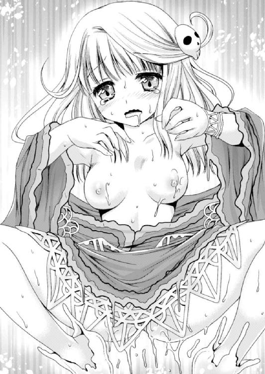
しかも、性感の高まりに連動して剛棒がきゅうううっと締めつけられる。ノーラの細い腰は、この短い時間の間にくねくねと回転するような動きを覚えていた。
「リオン......はうぅっ、いいっ......。んんっ！ はぁ、はぁ......！」
いやらしく腰をくねらせる少女に促され、亀頭が抜け出そうになるほど持ち上げては奥に叩きつける。そこには彼女の弱点部分が。
「ふうっ、んくっ！ い、あんんっ！ こ、こんなに気持ちよく......うっ、んんん！」
高まりゆく感覚に翻弄されつつも、少女は瞳を蕩けさせてしっかりその感覚を味わっている。本能で、もうすぐさらなる絶頂の波が来ることを予感しているのかもしれない。
ノーラの声はじわりじわりと大きさを増して、普段では聞くことのできない音量に。
「いく、ぞ......！ もうすぐ......ううっ！」
「ひうあああっ!! リオ、ン......！」
短く大きく叫んで、ノーラはこくこく頷きながらしがみついてくる。
男のその瞬間を求めるように圧迫感を増した膣内では、刻一刻と強まる柔らかな締まりが襲いかかってくる。彼女のうねり腰もこちらに動きをぴったりと合わせてきた。
ぶちゅっ！ ずちちちっ！
膣襞に嬲られるままにさらなる抽送......。
彼女の尻に沿わせた手に力を込めて動きを制し、わずかに息を止める。タイミングを知らされたノーラの身体が、歓喜の予兆にふるると痙攣した。
（ノーラの奥に......一番奥にっ......！）
ずぶぶぶぶぶっ！
みっちりとした柔らかさに満ちた肉壁を、あっという間にかき分けていく亀頭。
押し出された愛液が股間にぴちゃぴちゃと降りかかるのを感じながら。
肉幹が蠢く肉襞にすみずみまで舐め上げられるのを感じながら......。
「ひゃんんんんっ！ あああうっ！ お、くぅ......！」
彼女がかつてない大きな声で叫ぶと同時、最奥に到達したペニスが白濁を迸らせた。
どっぷぷぷぷぷっ！ びゅるるっ、どくどくどくどくっ！
性欲の高ぶりに比例して量を増したような大量の精液が膣奥へぶちまけられていく。その感触にきゅんっと縮み上がった膣内が、少女も絶頂に達したことを示していた。
「あっ、ああああああっ......！ すご、ひぁっ！ はぁっ、う、くぅ────んんんっ！」
イクという言葉を知らないのか、犬のように鼻を鳴らしてノーラが身体を硬直させる。そして腰から生まれた甘やかにして強烈な痺れに全身を包まれて......。
「はうっ、はぁ、はぁ......ひはぁ、うぅん......っ」
がくりと、全身から力を抜いた。
※
二人がほぼ同時の絶頂を迎えて、ようやく息を整えて。
「なっ、なななななっ......！」
突然リオンの部屋の中に響いたのは、気だるい空気とは無縁の素っ頓狂な声だった。
びくっとしたのはリオンだ。
「えっ!? パ、パンドラ......！ なんでっ!?」
ドアを開けて立っていたのは、今度こそ本物のパンドラだった。
「............ふーん」
魔王の娘がまん丸にしていた目が、時と共に次第に形を変えて、やがてじとーっとした眼差しになっていく。
その間わずか十数秒のことながら、リオンにはとてつもなく重い時間に感じられた。
「そりゃ、わたしの庇護者から妙な気配を感じたから......。なにか異変でもあったんじゃないかって、慌てて飛び起きて来てみたわけだけど......」
じろり、と睨まれて背筋に冷たいものが走る。
「まさかこんなことしてたなんてね」
「そ、それはですね。いろいろとわけがありまして......」
浮気をなじられている気分。いや、そのものだ。
そもそも自分とパンドラはそういう関係ということで決定事項なのだろうか。という根本的な事柄はリオン自身気持ちの整理がついていないし保留にしておきたいことなので、積極的には突っ込めない。ついでに魔族の倫理観がどうなっているのか聞いておきたいところだったけれど、そんな空気でもなかった。
「うううう......」
冷や汗を流しながらリオンが慌てて立ち上がろうとする。
なにはともあれ服を着ようと思ったのだが。
「ちょ、ちょっとノーラ！ なにしてんの！」
腰を上げたところで、すがりついたノーラに引き倒されてしまった。
「呼び捨て......口のきき方がなってない」
と言いながら、小突く代わりにペニスをぎちっと握りしめる。ちょっと痛いくらいに。
さっきまでタメ口で呼び捨てにしても気にしてなかったくせに。それどころか、メロメロになっておねだりしていたくせに。
「あ、ううっ。ノーラさん、ちょっと、あの、なにを......」
でも、今はそれどころじゃなかった。
ずん、ずん。と足音を響かせながらパンドラが近づいてきている。
だというのに。すっかりいつもの調子に戻った水の四天王は、パンドラの存在には目もくれず。ペニスを握ってためつすがめつ眺めていた。
そして可愛い鼻をすんすんと鳴らし......ぱくりと。
「ああっ！」「ちょっと！」
びっくりした二人が見ている前で、まだ白濁が雫を作っている亀頭を咥えたノーラが口をもごもごさせている。
（き、気持ちいい......。じゃなくて！）
慌てて腰を引いたけれど、ノーラは全然離れてくれない。それどころか、目つきが数分前に戻ってトロンと溶け崩れてしまっている。
「おいひぃ......ちゅばっ！ ちゅ、ちゅるるるっ......！」
ちゅるん、と糸を引いて精液を啜ったノーラが顔を離し「もっと出して？」とおねだりめいた上目遣い。
「そんな場合じゃ......あああっ！ そ、そんなに先っぽをほじられたら......！」
腰から力が抜けて尻餅をついてしまい、そのくせ足をぴーんと伸ばしてしまって気持ちよさを全身で表してしまった。ムズムズした感覚があっという間に高まって、ほとんど萎えていたペニスが新たな血を集めてガチガチになってしまっている。
「こら、離れなさい！ いくら四天王の一員でもそれは許さないわよ！」
「だめ......。これ、すごくおいしい......」
ぴちゃぴちゃと猫のように跳ねる舌先で鈴口をいじりながら、すでに残滓なのか先走りなのか分からなくなった粘液をチュルチュル吸い出すノーラ。とろ～んとした蕩けモードのまま戻ってきてくれない。
「んぷ、ちゅばっ！ この精液......他と違う......」
「そ、そんなの、男っ気のなさそうなノーラには分かんないでしょ！ 舐め比べたこともないくせに！ こら、はーなーれーなーさいっ！」
と、おそらくは自分も他の男の精液など舐めたことがないパンドラが偉そうに言って、しがみつくノーラをペニスから引き剥がそうとするのだが。
「でも分かる......。リオンの、普通と違う。んっ、ちゅっ、ぴちゃ、ぴちゃ......」
「そ、そうなの？ そういえばわたしだって舐めたことなかったけど......」
ぴたっと動きを止めたパンドラがペニスに視線を落とす。すっかり勃起の勢いを取り戻してしまった剛直が、その先端から先走りの透明汁を垂れ流していた。
こくん。と喉を上下させた魔王の娘が、すうっと身を屈めていた。
「......本当に違うのかしら？」
じーっと観察しているパンドラの視線を受けつつ、勃起はノーラの舌に翻弄されてピクピクしている。そこからトロリと雫が流れた。
「あああっ？ なんでパンドラまで......！ ちょ、ちょっとおっ！」
垂れ落ちて幹を下っていく途中の透明汁が、顔を寄せたパンドラにペロリと舐められて。
「っ!! こ、これは......確かにそうかもしれないわね......」
ぴちゃっ、ぴちゅ......、ちゅるるっ！ くちゅ、ぴちゃぴちゃ......！
パンドラ姫のきつめの眼差しがあっという間に変わっていく。うっとりとして、頬を上気させて、そのくせ舌だけは休むことなくペロペロペロペロ......。
舌の跳ねる音が二つになってしまった。
「んっ、はぁぁ......。リオン、なんなのこれ......。おいしい、っていうか、身体がふわふわしてきて......んっ、ぴちゅ、ちゅぱっ！ ねぇ、早く白いのも出して？」
「はあ？ そ、そんなことっ、ううっ！ 言われてもっ！」
本当に出しそうになりつつも、出せと言われるとなんだか出しづらい。
「んちゅ......んは、ああ、リオンおいしい......」
「早く、んっ......ぷちゅ、ぴちゃ......。精液出して？ 舐めてみたいわ......」
股間にうずくまる二人から上目遣いを向けられて、剛直がヒクンと反応。
（くううっ！ この光景はなんとも......）
美少女二人にひざまずかれただけで眼福なのに、各々が夢中になって自分の下半身をペロペロしている。男としての尊厳が満たされるような幸福感と、敏感なところを好き勝手されている被虐感めいた感覚が入り混じる。
「んっ......早く、出して」
ノーラの舌が裏筋にぴたりとかぶせられた。そこから舐め上げるようにして先端へ向かい、くちゅっと音を立てて鈴口をつつく。
身体を震わせて「くっ」と呻いてしまったリオンを見て、パンドラも舌をそこへ。
「リオンはここが気持ちいいの......？ くふ、む......ちろっ、ちゅぱ......」
鈴口の上でパンドラとノーラが舌同士をくっつけ、我先にと先走りを掬い取る。
ペニスを介して女の子同士でキスするようなことになっているのに、彼女達はまったく気にせず無我夢中だ。
「おわっ！ そ、そこっ！ やばいいいっ！ やっ、やめっ......」
そして集中攻撃を受けるリオンも桃色吐息。まだ前回の射精の余韻が残るそこは、舌が触れるだけでビクッとしてしまうくらい敏感なのに。
ズクン、と腰の奥に射精の予兆を感じた。
（も、もうイッちゃうって！ そ、そんなにしたら......ぁああっ！）
ちょうどその時、ノーラの唇がふわりと開いた。
胸と同じに肉付きは薄いのに、ぷりぷりした二枚の唇。それらが亀頭の上にあむっとかぶさり、ちゅっとキスするようについばんだ瞬間。
どくどくどくっ！ どぴゅぴゅうううっ！
彼女らの顔面に向けて白い液体が迸っていた。
「ひゃ！ んあっ、出たぁ、んんっ、ちゅ、ぢゅるるっ......！」
ぱたたたっと降り注ぐ白濁を、パンドラは舌をべろんと出して受け止めて、
「んっ！ はぅ......ぢゅるううっ、ちゅぱっ！ ちゅるるっ！」
ノーラは一滴もこぼすまいと手で皿を作って受け止め、啜る音も淫らに口内へ吸い込む。
パンドラがうっとりとして呟く。
「ああ......分かったかも。これって、勇者の精液だから......んっ、ちゅぱっ！ 魔族にとっては......あんっ、む、ずるるっ！ 特別な力が感じられて......すごくおいしく感じられちゃうんだわ......ちゅっ、ちゅるるるっ！」
「わっ！ そ、それはマズ......わーわーわー！」
この魔王の娘さんはいきなりなにを口走るのか。
リオンが慌てて騒ぎ立てて今の言葉をなかったことにしようとするも、時すでに遅し。
「ゆうしゃ......？」
案の定、しっかりとそれを聞いたノーラは首をひねっていた。その唇からはとろーっと白いものが流れていて、無垢とも言えるような表情と相まってとんでもなくいやらしい。
「な、なにがっ？ なにか聞こえたとしたら、きっと聞き間違いなんじゃないかなっ！」
そんな淫らな表情に目を釘付けにされてしまって、リオンの言い訳はたどたどしく強引。これではとてもごまかせないと思ったけれど、もはや次の手を打つまでもなかった。
「間違いないってば......。勇者の精液って、魔族にはこんなに影響力を持つのね......ちゅばっ！ だからエッチをしても、あんなに気持ちよく......んんっ、ねぇリオン......」
せっかくごまかそうとしたのに、パンドラはなにも聞いちゃいない。どころか、すっかり蕩けた視線で男根を撫でながら身体ごとすり寄ってくる。
「ね、わたしも......したくなっちゃった」
「そんな場合じゃないだろっ！ ちょっと！ 脱がないで！」
いつも通り、勝手にその気になっているパンドラはもうどうしようもないとして。
「ゆうしゃのせいえき......。リオン、勇者なの？」
ノーラはノーラで、もうどうにも言い訳のしようがなさそうだった。
「ははは......は......は。お願いだから、これは聞かなかったことに......」
「............（にこり）」
健やかな笑顔を向けられてしまった。ノーラのそんな顔、初めてだ。
（それはどっちの意味の微笑み？ わかんないしっ！ ああもう、パンドラもノーラも、二人ともそんなに俺を困らせたいのかっ......！）
魔族として蘇生改造されたはずのへたれ冒険者が、なぜよわっちいまま蘇って、なぜ闇の守護を得られたのか。理解力のあるノーラはすべて把握したようだ。
（うん、好奇心が満たされてなによりだったね......）
すっきり爽やかに微笑むノーラに力ない笑顔を返して。
リオンとしては、どんどん複雑になっていく状況に頭を抱えるばかりだった。
※
四天王会議というものがある。
魔王から人間界の領地を任されている四天王は、定期的に話し合って魔王軍としての方針を決めている。その話し合いの会議がそれだ。
場所は持ち回りで変わるが、それが今回はリオンのいる古城で開かれていた。
「んー。この城はまだまだッスね......。スライムだけじゃなくてもっと強そうな魔物を揃えないと、四天王としての格好がつかないッスよ」
と、スルトが寸評すると、向かいに座っていた水の四天王から無言の鋭い視線が飛ぶ。
「............」
「うっ！ いや、違うッスよ？ スライムを馬鹿にしているんではなく......」
ナンバーツーのくせに気が弱い彼が言い訳しているのを聞きながら、リオンはというと他の四天王への給仕にいそしんでいた。
（これでも四天王の一員なのに......）
現状、城に常駐する配下の魔物は数だけは充分に揃えることができた。
でもそれがノーラの口利きで急遽集まってくれたスライム君達だけなので、当然のことながら複雑な仕事をできる者はなく、特にこういった場での文化的お仕事はリオンの当番になってしまっている。
（まあ、勇者のことを秘密にしてくれてるだけでもありがたいけどね......）
などと考えながらちらりとノーラを見る。
反応なし。この前と比べると態度も口数もまったく違う。
機会さえあれば四天王のトップになろうと狙っているノーラではあるものの、先日の一件があってからはそんな素振りは見せない。リオンとパンドラを懐柔して味方につける、という思惑も、もうどうでもいいかのような態度だ。
その代わりと言うべきか、パンドラも最近では彼女のことを認めつつある。
認めるとは言っても、その実力を、ということではない。リオンに関してのことだ。
パンドラは「リオンにとってはあくまでもわたしが一番なの」なんてことを強調しつつも、勇者の件を自分でバラしちゃったせいでノーラを邪険にもできず。なんとなくノーラは二番手扱いの愛人、といった雰囲気になってしまっていた。
ある意味で、懐柔されてしまっているわけだった。
主にベリアルとスルトによる雑談を聞き流しつつ、ようやく飲み物を並べ終わったリオンがテーブルの末席に着いたのを合図に、ごほん、とベリアルが咳払い。
会議の開催が告げられた。
「さて、新しい四天王も迎えたことだし、今回は例の懸案事項を片付けようと思う」
「おおっ！ いよいよ魔王様の許可が下りたッスか！」
話が見えないが、新しい四天王というのが自分のことだということだけは分かる。
「あの、懸案事項というと......？」
リオンが口を挟むと、その背後にぼわーんとパンドラが現れた。
「わたしがお父様にお願いしたのよ」
「おお、なるほど。急に許可が下りたのはそういうことでしたか」
パンドラとベリアルがなにやら頷き合っているが、さっぱり分からない。
そこにノーラが短いながらに的確な答えを返してくれた。
「人間界に攻め込むということ」
「ああ、そうなんだ。人間界に......ええええええあっ!?」
攻め込むというと......やっぱり？ と背後のパンドラを見るとなんだか誇らしげ。
「とはいっても、どこかのお城を二、三個落とす程度の侵攻計画だけどね。出世のためには手柄を立てておかないと！」
嬉しそうなパンドラに、これまた嬉しそうなスルトが口を挟んでくる。
「なにしろ勇者がいつまで経ってもやってこないんスよ。だから我々も暇で暇で......。なら、たまにはこっちから攻めるのはどうか、って前々から話し合っていたッス」
「うむ。やはり、世界の危機にこそ勇者が現れるというのが定番だからな。まずは我々でいくつか城を落として、順調に進めばやがては魔王様にもご出陣願うことになっておる」
いつも落ち着き払っているベリアルだが、あごヒゲを撫で撫でしていかにも上機嫌。
「で、でもっ、いきなり人間世界に攻め込むなんて......！」
「なにを言ってるッスか。オマエだってついこの前いきなり攻め込んできたくせに」
うっ、と言葉に詰まってしまった。
（でも、その勇者はここにいるわけだし！ ......絶対に言えないけど！）
いまいちそうは見えないが、四天王一の知恵者ともっぱらの噂のノーラを見る。なんとかうまい具合にこの話をなかったことにできないか......と思ったのだけれど。
「......（こくり）」
なんで頷いたのかさっぱり分からない。しかも、なんとなく恩着せがましく。
（たぶん「秘密は守ってあげる」とか、それだけの意味しかなさそう......。俺の立場にはさっぱり同情してくれてなさそうだもんな......パンドラもだけど）
勇者なのに魔族の四天王になってしまっているという、わけの分からないこの状況。
とりあえず事態が落ち着くまではと、いわば楽観視していたのが間違いだった。
「では、一番人間の国に近いこの城を人間界侵攻の拠点にさせてもらうぞ。よいな？」
「はあ......」
あれよあれよという間に話が進んでいく。
（どうしようどうしようどうしよう、どうする俺......！）
冷や汗を流しながらキョロキョロ目を泳がせて困り果てていると。
「ふふっ、嬉しいのは分かるが、そう血気に逸るでない。まずはお前にひと働きしてもらわねばならんのだからな。いきなり失敗されては困る」
「いえ、逸ってないですし......。いえ、それよりも、その仕事というのは......？」
「うむ。まずは最近の人間界がどのような様子で、方々の都市の戦力はいかほどか、きっちりと偵察してくるのが先だ。これは駆け出し四天王には最適な仕事だろう？」
どうするかも決められないまま、さっそく仕事を仰せつかってしまったようだ。
「偵察役ってことですか？ そりゃ、俺は人間......いえ、この前まで人間でしたから、偵察任務にはちょうどいいんでしょうけど......」
と、自分で言ったところでハッとした。
（待てよ？ 偵察ってことは......人間の街に行くってことだよな？ それって、逃げ出すにはものすごい好機なんじゃ......？）
これまではパンドラの監視が厳しくてこの城を抜け出すこともできなかったが、堂々と街に行けるとなれば話は別だ。
（たぶんパンドラもついてくるんだろうけど、それだって隙を見つけて強引に逃げちゃえば、あとはどうとでもなるんじゃないか......？）
そんなことを考えて、ちょっと胸が痛んだ。ここに来てからパンドラには......蘇生してくれたノーラにだって世話になっている、と言えなくもない、ような気がする。
（あ、そうだ！ 逃げ出すなんてことしなくたって、王様にでも「魔物が攻めてきますよー」ってことを教えちゃえば、魔族だってそうそう手が出せなくなるだろ）
これだ。これしかない。
腹は決まった。
「分かりましたっ！ 不肖、闇の四天のリオン。一命を賭して偵察任務に赴きます！」
「ふふっ、やる気を出すのはいいが、しかしお前はまだ未熟だからな......」
「......？」
「だから、火の四天王であるこのワシ自らが、魔族流の偵察術というものを教えてやろう」
「えっ？ それってもしかして、俺についてくるってことでしょうか......？ いや、でも、俺としては一人で行きたいなー、なんて」
なんだか雲行きが怪しい。
どうにか流れを変えたいと思いつつも、しかし、そううまくはいかなかった。
「それがいいッス！ ベリアルさんに教えてもらえるなんて、オマエは幸せ者ッスよ！」
「えっ!? は、はあ......」
スルトまで賛同しては、とてもじゃないが断ることのできる雰囲気ではなくなってしまった。もとより自分は四天王で一番の下っ端。それが「自分一人で大丈夫です」なんて言ってみたところで、ベリアルが意見を変えるとは思えない。
「ふふっ、これでもワシは、闇の守護を手に入れたお前を買っているのだ」
優しいお爺ちゃんの視線でそんなことまで言われてしまっては、なおさら。
「まあ、さすがベリアル卿です。とうとうリオンのすごさに気づいたんですね！」
そして気取ったお姫様口調のパンドラが、にこやかに微笑んでいる。
「ついていきたいけど。......私はお留守番」
ノーラはちょっと残念そう。
「う、わ、わかりま、した......」
助け船を求めて巡らせた視線は、行き場を失って床に落とすしかなかった。
城郭都市をぐるりと囲む壁が間近に迫ると、リオンはやるせない気持ちになってしまった。この街を外敵から守る城壁が、今の自分にとってはすごく威圧的に感じられる。
『へぇ......。初めて見たけど、人間の街もなかなか立派なのね』
「そりゃここは王都だからだよ。一応、この国では一番大きい街だし」
頭の中に響く声を聞いて、リオンは周囲に聞こえないように極めて小さな声で答えた。
現在、リオンの身体にはパンドラが守護者として憑依している。だから今みたいにいちいち口に出さなくても、「この言葉をパンドラに伝えよう」と思いながら言葉を頭の中に浮かべるだけで会話が可能ではあった。
しかし、これがどうにも。
（慣れないんだよなぁ......。思ってることが筒抜けになっちゃいそうで......）
うっかり気を抜くと、伝えたいことだけじゃなく他のことまで聞こえてしまうらしい。たとえば「小便に行こうかな」なんてどうでもいいことから「人間としての暮らしが懐かしいな」なんて愚痴に至るまでが伝わってしまうので、それを予防するために、ちゃんと口に出して会話するように癖をつけた。周囲には聞こえない程度の小声で。
（人間ぽくない精霊タイプの守護者だったら、そんなの聞かれたところで気にしなくていいんだろうけどさ。......属性選び、失敗したかなぁ）
『あら？ なんだか今、変な......』
「な、なんでもないって！ 気のせいだろたぶん！」
気をつけようと考えていたそばからこの通り。慌ててごまかす。
他の者からすれば、リオンはもごもごと口を動かしているぐらいにしか見えないし、まず聞こえない。それは要するに、独り言が多くて薄気味の悪い奴ということだった。
「リオンよ、その独り言の癖はいかにも小市民的だ。直した方がいいであろうな」
案の定、数歩の先を行くベリアルにつっこまれてしまった。
「これはですね、えっと......いえ、気をつけます」
強力だけれど人間的ではない火精霊を宿している火の四天王相手では、説明したところで共感が得られるとも思えない。なにより面倒なので説明義務は放棄した。
と、そんなやりとりをしている間に、一行は城門へと到着。もうすっかり夜だが、王城のある城下町は敵襲でもない限り門が閉まることはない。
案の定、いつもと同じで城門は開け放たれ、屯所に門番として詰める兵士達が街に出入りする人間をチェックしているのが見えた。
ベリアル同伴での偵察の任に就いてから数日、現在ベリアルとリオンは旅装束に変装中。設定は、旅の商人とその従者だ。
ただ、リオンはともかくベリアルはちょっと商人には見えない。髪の色を変え背負った炎のオーラを消し、服装も商人っぽくしているけれど、いかにも戦士然とした筋骨隆々のガッチリ体格や、小動物ならひと睨みで殺せてしまえそうな眼光は変わらずそのまま。
（すごく心配なんだけど。でもノリノリなのに止めるのも気がひけるし......）
「よく見ておけよ。ワシが人間相手に会話する手本を見せてやろう」
などと、元人間の、そして実は今も人間のリオンに対して偉そうに言いながら、門番の兵士達に通行証を見せにいくベリアル。
（ベリアルさんは忘れっぽいところがあるんじゃないか......？ 俺が人間だったってのも最近じゃ覚えてるのかどうか怪しいもんだし......。しっかりしてくれよ、お爺ちゃん）
そんな愚痴をパンドラに聞かれないよう気をつけつつ、リオンはローブのフードを目深に下ろした。これならなんとか顔は隠せるだろう。
『あー、そういえば元勇者だもんね。もしかして有名人なのかしら？』
「もしかしてじゃなくて有名人だよ！ なんの実績もない勇者だから、ただ単に名前が知られてるだけの有名人だけどさ......通行証の名前も嘘を書いてるし」
『ああん、もう、そんなに拗ねないでよ。きゅんきゅんきちゃうから』
独り言モードでとりとめもない話をしているうちに、ベリアルの方が騒がしくなってきた。なんだか揉めているような？
今は人間世界的に緊急時でもないので、通行の検査はかなり緩いはずだが。
（おいおい、大丈夫なのか？ さすがに正体が魔族だとバレはしないだろうけど......）
助けに入るべきかどうか迷って、よし行こう、と思った矢先に。
「おい、そこのお前！ このじいさんの従者だろ？ ちょっと来い！」
向こうからお呼びがかかってしまった。やっぱりなにか問題があったようだが、呼び方が高圧的でなんだか嫌な予感がする。
そしてその予感は当たっていた。
「こっちのじいさんの通行証が三十年も前のものなんだよ。いくらなんでも古すぎて怪しい......お前のも見せろ」
「え!? 三十年前？ なんでそんなに古いものを......」
驚いて思わず呟きかけて、慌てて言葉を呑み込む。
（そういえばベリアルさんが用意した偽通行証、馴染みのない書面だったな......）
まさか潜入の初期段階でつまずくなんて、そんなこと予想外だ。事前に確かめておけばよかった、と後悔しながら差し出すが、やはり古いものだったらしく兵士は渋面に。
そっとベリアルを覗き見たが、「黙っておればなんとかなる」とばかりの沈黙。兵士を睨みつけていて、威圧で解決しようとしているんじゃないかという有様。
（うわ......だめだ。こうなったらもう、俺がなんとかしないと......）
この場はベリアルには期待できそうにない。となれば......自分が泥をかぶるしかない。
「も、申し訳ありません。旦那様の手荷物の準備は私がしたのですが、国元を出る際に間違えて古い方の通行証書を持ってきてしまったようです」
言い訳としてはこんなところだろうが、これだけでは通行は許されないだろう。別の方法を使って兵士を納得させて、ここを通してもらわなければならないが......。
幸いなことに、通行証が古いことを怪しまれているだけだ。通行証自体の真贋や身元を怪しまれているわけではなさそうだし、なんとかごまかせるかもしれない。
（ここはアレだな。ベリアルさんにわざと大げさに叱ってもらって、気の毒になった兵士が「まあまあそれくらいで」と仲裁に入ってくれるパターンだな。これで乗り切ろう）
チラチラと隣のベリアルに視線を送る......が、気づかない。
仕方ない、と溜め息をついて、リオンは自分からそれとなくそうなるように仕向ける。
「旦那様、どうか私を叱ってください。そうでもしないと、旦那様にも兵士の皆さんにも迷惑をかけてしまった自分が許せません」
ベリアルに対し片目をパチパチさせて「お芝居ですよ！」と合図しながらの叱ってアピール。リオンは懸命に自分の意図を伝えようとする。
しかしベリアルはというと。
「なんと。この通行証を用意したのはお前だったのか？」
いまいち分かってない。
「そうか......お前がそう言うなら罰を与えねばなるまい」
しかも、そう言って拳を振り上げる。
「ちょ、ちょっと待ってください！ 確かに叱ってほしくはあるのですが、罰というほどのことをしなくても、いいんじゃないかな、と思ってみたり......」
さすがに殴られるのは勘弁してもらいたい。必死に目をパチパチさせて合図を送る。
そこで念願の助け船が入った。
「まあまあ......待てって。古いって言っても、通行証自体に問題があるわけじゃないからな、そこまでしなくてもいい。こんなに体格のいいじいさんに殴られたら、ひょろい従者なんて死んじまいそうだしな」
兵士が「仕方ないなー」とばかりに止めに入ってくれた。まさに狙い通りだ。
（はぁ、助かった......。あとは適当に兵士を褒めそやして通行を許可してもらおう）
だがほっとして気を抜いた瞬間、完全に予想外のことを言われてしまった。
「そういえばお前、なんとなく勇者に似てるな」
目深にかぶったフードを覗くようにして兵士が呟いてくる。
（顔を見られた......！）
心臓が跳ねて嫌な汗が流れた。なんとかごまかさなければ、と必死で平静を装う。
「そ、そうですか？ 勇者様のことは存じ上げませんので......気のせいでしょう」
「ま、なんとなくだけどな。名前も違うし、勇者がここにいるはずがないし。そもそも俺らはちらっと見たことがある程度だから、勇者なんて顔もよく知らねぇんだけど」
兵士が軽く笑いながら流してくれたことに再びほっとするリオン。
そりゃそうだ。普通に考えたら勇者が商人の従者に変装しなくてはならない理由がないだろうし、すぐ見分けがつくほど親しいわけでもない。
ただ、この話題を軽く流してくれない人物が一人。
「なんとっ!? この国には勇者がいるのですかな？」
「勇者の情報ゲット！」と言わんばかりに目を輝かせた老将軍がずずいと身を乗り出していた。そういえばこの街に来たのは偵察目的だし、勇者の話ともなれば無視はできないだろう。リオンが勇者だということも、この国に勇者が生まれていたことも知らないベリアルにとっては。
（あああ......！ 面倒なことになりそう！ っていうか自分の話なんて聞きたくない！）
『ねえねえ、勇者の話が聞けそうよ？ もっと近づいてくれないとよく聞こえないわ』
事情を知っていながらとぼけている、頭の中に響く少女の声をあえて無視しつつ。なんとかそんな話を聞かずに済む方法はないかと考えてみたが......ベリアルを残して立ち去るわけにもいかないし、仕方ない。リオンは一歩だけ後ずさって目立たないように。
「そうなんだよ。少し前にこの国に予言を受けた勇者が現れてな」
兵士もさほど怪しむことなく、通行の許可書類を作りながらの気軽な雑談だ。
「では勇者はこの街におるのですかな？」
「いやな、もう旅に出たんだが......それが行方不明になってるそうだ」
なんて話を始めてしまったベリアル達だが、さらに他の兵もその話題に参加。さながら井戸端会議のようになってしまう。
「魔物が巣くってるどこかの古城に乗り込んだらしいぞ」
「そこでザコの魔物にやられて死んじまったんだろ？」
「でも死体は見つかってないらしい。他の仲間は帰ってきたしな」
「俺は、勇者が仲間を置いて一人で逃げ出したって聞いたぜ」
「アイツは勇者じゃなかったんだろ。冒険の支度金を持ち逃げしちまったんだ」
以上、門番兵士の方々のお話。
（ぐあああ......！ やっぱり聞かなきゃよかったああああああああああ！）
正確に話が伝わってればまだしも、ところどころ情報が決定的に間違っている。しかもリオンにとっては悪い方向に。
（こんな感じのいかにもな噂話が、いっぱい広まっちゃってるんだろうな......）
まあ、無理もない。期待した勇者が突然姿を消して長い間まったく音沙汰なしでは、本人とさして親しくもない人間達にとってはそんな話にもなるだろう。
（ウフフ......しょうがないよな。しょうがな、い、ギギギ......）
でも、やはり当事者としては心穏やかでいられない。しかも話はどんどん無責任な方向に流れていってとりとめがない。
「まったく、腹が立つな。王様が用意した支度金も相当な額だったんだろ？」
「元を辿れば、俺らの税が持ち逃げされたようなもんだからな」
噂話というか、悪口大会になってしまっている。
（支度金なんてたいしてもらってないのに......。噂話って無責任なものなんだなあ......）
リオンはもうどうでもよくなってきて、ぼーっと話を聞いているだけだ。
そこでようやく通行許可の書類が整ったらしく、兵士が通行証を突っ返してきた。
「チッ、さっさと行けよ。ああくそ、お前の雰囲気が勇者に似てるからか......なんだかむかついてくる。じいさんの代わりに殴りたくなってきたぜ」
「そ、そんなこと言われても......」
噂話がヒートしすぎて不機嫌になってしまったのか、兵士に理不尽なことを言われ、さらには肩を押されてよろめいた。
（このっ......！）
さすがにカチンときて危うく言い返しそうになったところで、かばうように前に出てくれたのはベリアルだった。
「いやいや、それはどうかご勘弁くだされ」
そう言いながら手荷物から酒瓶を取り出し兵士達へ。
「たいへん面白いお話を聞けたお礼をしなくては。遠慮なく受け取ってくだされ」
今度こそ年長者の手腕でその場を丸く収め、ベリアルとリオンは屯所を出た。
『あらあら、人間界の皆様はずいぶん勇者に対して冷たいのねぇ』
一連のやりとりを見ていたパンドラが囁いてくる。
「そうだね、冷たいね......。こうなったらもう、魔族四天王としてこの街を焼き払っちゃおうかなー。そうすればあんな噂も一緒に消えるよね......ウフフ」
『そうだそうだー。やっちゃえやっちゃえー』
ダークな思想に陥ってどんよりしている勇者を魔王の娘が無責任にけしかけていると、それとは対照的ににこやかなベリアルが話しかけてくる。
「ふふ......。見ていたかリオン。人間をたばかることなど、四天王の長たるワシの手にかかれば造作もないことよ」
「そうですね。さすがです......」
さっきはちょっと助かったが、かといってベリアルが通行証をしっかり用意してくれればあんな話も聞かずに済んだ。まあ、聞かずに済んだところで現状が変わるわけでもないが......今の気分ではまともに受け答えするのも面倒だった。
（はあぁ......隙あらば逃げ出して、魔族の動きを人間に伝えようとか思ってたけど......）
そんな気持ちもすっかりしぼんでしまった。
ますます暗黒面に落ちようとしているリオンの肩に、ぽんと手が置かれる。
「せっかく勇者の情報を得たのにそれがエセ勇者で、腕の見せ所がなくなったとガッカリしているのだろう？ しかし、そう落ち込むな」
「............」
まるっきり違うが、この切ない心情を説明するわけにもいかない。
「さあ酒場に向かうぞ。情報を集めつつ酒でも飲んで英気を養おうではないか！」
そしてベリアルはむしろ上機嫌。
（はあぁぁぁ......もう勘弁してください......）
正直、もうやる気がない。さっさと宿をとってふて寝したい気分だった。だがベリアルはというと、人間の街に入っていよいよ興が乗ってきた、といった様子。
「............うぅ」
肩を落として歩くリオンに萌えたのか、パンドラが頭の中できゃあきゃあ騒いでいる。でも本人にとってはしょんぼり真っ最中なので相手をする気にもなれず、ベリアルのあとについてぼーっと歩くだけ。
やがて酒場に到着。
食事をとっている最中も、やかましいくらいの喧噪の中で情報を求めて聞き耳を立てている間も、ずーっと上の空で仕事なんて気分になれない。
だから、早々に食事を終えて酒を飲んでいるベリアルが誰かに話しかけられていることにも、少し遅れて気づく始末だった。
「──さっき街に到着した商人というのは、貴方達ですか？」
どこかで聞いたことがあるような声......。
フードの奥から覗くようにして見上げて、唖然とした。
（うわああああっ！ なっ、なんでぇぇぇ!?）
悲鳴を声に出しそうになったのを慌てて我慢する。
顔を隠すフードをさらに深くかぶり、こそこそっとベリアルの陰になるような位置へ椅子をずらす。すると、自分が頼られているとでも思ったのか、老将軍がその人物の応対を買って出てくれた。
「いかにもワシ達は商人ですが、なにかご用ですかな？ 綺麗なお嬢さん」
相手は女性。それもまだ年若い、少女と言ってもいいような人物だった。
青い瞳に白い肌。目鼻立ちも整った美少女が、健康的に赤らんだ唇を開く。
「あ、うん、遠くから来た商人がいるって屯所で聞いて......。んんっ、ごほん！ ちょっと聞きたいことがあるので、少し時間をくれると助かる」
その女性は「綺麗なお嬢さん」なんて言われたからか、ちょっとうろたえ気味だ。地が出てしまったことに慌てて咳払いし、その格好に見合ったかしこまった口調に変更。
彼女は、そのへんを歩いている兵士とは明らかに違う鎧をまとっていた。
上質の鉄を使った白い鋼鉄鎧を知らぬ者はこのあたりにはいないだろう。王に仕える選ばれし者がまとう王国伝統の鎧。つまりは騎士階級の証だ。
少し頷いただけで肩までの金髪をさらさらと揺らす様は凜々しくもあり、はかなくもあり。女性の騎士というだけでも数が少ないのに、しかもまだ年若い。
唯一、額を飾る髪飾りだけがいかにも女の子らしいと言えばらしかった。
リオンは、その髪飾りが王妃からの恩賜品だということを知っている。騎士の叙任式に立ち会ってひと目で彼女を気に入った王妃が、その場でプレゼントしたものらしい。
（なんでセリアがここに......！ そりゃ王都だし、いてもおかしくないけど、それにしたってこんな時間に、酒場で遭遇しちゃうとか！ ツイてないいっ！）
その少女こそ、リオンの幼馴染みであり、勇者パーティーの一員でもあった女騎士だった。
騎士で城勤めのセリアは、普通の兵士と違って街を巡邏したりしない。しかも昼間ならまだしも、彼女と縁がなさそうな酒場での遭遇はまったくの予想外だった。
要するに心の準備ができていない。顔を見られないように、なおかつ不審がられないように必死でベリアルの陰に隠れる。火の四天王のがっしりした体格がこれほど頼もしく感じられたのは初めてだった。
『なになに？ リオンったらどうしたの？ そんなに慌てて......』
「しーっ！ いいから黙ってて！ 正体バレちゃうからっ！」
『む......。なによ偉そうに......！』
頭の中で響く声を小声で叱りつけて俯き加減に。ベリアル達の会話に聞き耳を立てる。
しかし「聞きたいことがある」なんて騎士に言われても落ち着き払っているこの長老四天王はさすがだ。もしかしたら危機感がないだけなのかもしれないが。
「聞きたいこと、というと......ワシらが城門を通る時に不備でもありましたかな？」
（ああっ、そうだ！ 通行証も古かったし、不備ならたくさんあったはず！ あれがやっぱりマズいってことになって、門番が騎士のセリアを呼んできたに違いない！）
と、リオンは思ったのだけれど。セリアはにこやかに微笑んでいる。
「あ、それは違います。私はただ単に、旅先でのことを尋ねたいと思っただけで」
少しだけほっとした。とりあえず疑われたというわけではないらしい。
「おお、そうでしたか。では騎士様も一緒に酒でも飲みながらゆっくりと......」
（ああっ、余計なこと言わないでぇぇぇっ！）
せっかく疑われずに済んだのにこのままでは三人で一緒にテーブルを囲むことになってしまいそう。それを止めようと慌てて割って入ろうとしたが、リオンが動く前にセリアが申し訳なさそうに首を横に振ってくれていた。またまたほっとした......のも束の間。
「いえ、そこまで手間はとらせません。聞きたいことはひとつだけ......旅先で勇者の噂を耳にしなかったですか？ それだけ聞ければいいんです」
（え......!? それはどういう......？）
まったく次から次へと。なにがなんだか分からない。
「勇者の噂ですか。さて......我々はさっき門番の方から初めて勇者の存在を聞いたぐらいですからな。旅に出たはいいものの、そのまま逃げてしまったらしいですが」
と言いながら果実酒を一呑み。ごく自然に応対できているベリアルと違って、今まさに話題が口にのぼっている当のリオンは冷や汗ものだった。まるで怯えた子供のように四天王の老将軍の陰に隠れ、そのくせ聞き耳だけは立てて一言一句聞き逃すまいと。
セリアが少しだけ不機嫌そうに眉を寄せ、語気を強めていた。
「それは違うんです！ あれは逃げたんじゃなくて、魔法の罠のせいで......！」
と、そこまで言って急に勢いを失い、あとは独り言を呟くように。酒場の喧噪に紛れてしまいそうな声を必死に聞き取る。
「魔族の城の奥に彼が持っていたアイテムの残骸がありました。だからそこで戦闘になったようなのですが......それきり行方知れずになっちゃって......」
なんだか声が震えた気がして、ベリアルの陰からちょっとだけ顔を覗かせてみた。
（うーん。すごく悪いコトした気になる......）
悔しそうに下唇を噛んでいるセリアの表情に、さすがに責任を感じてしまう。騎士口調にも少し地が混ざって、いつものフレンドリーな話し方になってしまっているし。
「でも死体なんてありませんでした！ だからきっとどこかで生きてる......」
ぽつりぽつりと話し続けるセリアの説明によって、どうやら彼女は、暇を見つけては門番のところに行って、今のように旅人の話を聞いているらしいと分かった。旅先のどこかで、勇者らしき人物の話を耳にしていないか、と。
ベリアル達が勇者のことを知らないなんて、噂話を聞かせてくれた門番に経緯を聞けば分かりそうなものなのに。よほど急いで追いかけてきたのだろう。
（うううぅ......そうだよな。セリアはすごく口うるさいし小さい頃からずっと上から目線ばっかりだったけど、へたれな俺への面倒見はすごくよかったもんな......）
自分を心配してくれているのは、もしかしてこの街でセリアただ一人なのかも。なんて考えてしまって、感動のあまり目頭をじ～んと痺れさせていると。
「ふむ。ワシの知り合いにも似たような境遇の者がおりますが、それは勇者からはずいぶん遠い存在ですからな......。まあ、勇者が行方不明というのは残念なことですな」
なんて台無しなことをベリアルが言ってくれる。間違いなくリオンのことだ。
（......まあいいや。とにかくこれ以上話を続けられたらベリアルさんもセリアも余計なことに気づいちゃいそうだ。さっさと話を終わらせないと......）
そうやって、いつ話を切り上げさせるかとタイミングを見計らっていた時だった。
「ところでおじいさん、旅の商人にしてはすごい体つきだし......荷物が少ないんだね」
ふと、セリアの口調が素に戻った気がして。いやーな予感がした。
「そっちの人も、さっきから顔を見せないし......。しかもこうしてよく観察してみたら、おじいさんからすごい殺気を感じる気がするんだけど......気のせいかな？」
さっきまでの、騎士っぽく整えた丁寧な口調ではない。
セリアの自然体で出た警戒の言葉だった。騎士の任に就いていない時の、いつものセリアのフレンドリーな話し方なのに、その表情はどこか冷えている。
（まずい......！ セリアってすごく勘がいいから......!!）
閑職の門番兵士達と違って、ベリアルのまとう違和感に気づいてしまった。いや、それくらいは商人設定なのに筋肉質な外見で不自然に思って当然といえるが。
（でも俺、殺気に関しては全然感じないんですけど......。ううっ、セリアは一流の剣士だから気づかれちゃったってことか？）
彼女の手は腰の剣に向かっていた。テーブルのそばに立ったままだったので、すでに柄に手を置き、いまにも引き抜かんばかり。それに対してこちらはまだ座っている。
このままではマズイ。魔族とまでは思われなくとも、盗賊ぐらいには怪しまれている。一応は偵察名目なのに戦って目立つわけにはいかないし、かといって大人しく連行されたら細かい事情を聞かれてボロが出る。
なにより......今ここにいるのが勇者リオンだとバレてしまう。
（いっそセリアに現状をすべて話して助けてもらうとか......）
しかしこんな状況ですぐに理解できるだろうか？ 下手をしたらセリアを戸惑わせるだけで、怒り狂ったベリアルとも戦闘になってしまう可能性がある。
（いやだめだ！ 今は逃げるしか！ それしかないっ！）
ベリアルに合図を送ろうと背中をつつきまくる。つんつんつんつん。
「ええい、うるさいぞ。せっかく興が乗ってきたというのに」
「は？ え？ な、なんでそんな鋭い目つきを......？」
振り返った老将軍の目つきがおかしい。しかも、つつきまくった背中にぶわりと炎が。
「あ、あの、背中にオーラが出てきちゃってますけど？ つつきすぎたならごめんなさい。だから早く引っ込めて......！」
リオンの声は無視。すでに戦闘モードに入ってしまっているベリアルが女騎士を睨む。
セリアはいまにも剣を抜かんばかりの体勢で硬直していた。
そりゃそうだろう。せいぜいが「盗人が商人と偽って街に入り込もうとしているのかも」ぐらいの詰問だったのに、いきなり背中から炎が出て髪が赤くなってきたりしたら。
「くくく......我が正体を見破るとはたいしたお嬢さんだ。さすがはその年で騎士に抜擢されるだけのことはあるか......」
「見破ってない！ まだ見破ってないよ！」
これでは自分から魔族であることをバラしてしまっているようなものだ。
「ちょっとベリアルさん!? 気を確かに！ ここは逃げましょうよ！」
しかし止まらない。ベリアルは席を立つと、よろよろと酒場を出て行こうとする。
「ふふん、それはできん相談だな。それに、食事前にこの騎士を相手に軽く運動しておくのもよかろう......」
「お爺ちゃん！ 夕ご飯はさっき食べたでしょ！」
どうやら酔っているようだ。よく見ると頬も目元もほんのり赤い。
『これは......。ベリアル卿ってお酒に弱かったのね』
それまで静観していたパンドラが呆れたように呟いた。
「な、なんとかならないか!? さすがにここで戦闘はマズイって！」
『そう？ 少し暴れて酔いが飛べばすぐ元に戻るんじゃないかしら？ でもそれまでに街が消えちゃうかもしれないから、わたし達は安全なところに......』
「そ、そんなにヤバイの......？ ていうか、この子はなにを邪悪なこと言ってんの!?」
『わたし魔王の娘ですもの、やっぱりこういう時は邪悪じゃないといけないと思うわ』
「そんなプライドいらないから......どうにかしてくれよ」
そうこうしている間にリオンの手を振り切って老将軍はふらふら酒場を出て行ってしまう。その身体から、今度はリオンにもハッキリと分かる禍々しい殺気が噴き出していた。
「ま、待て！ ご老人......まさか魔族なの......!?」
硬直していたセリアがようやく意識を取り戻して剣を抜いた。
リオンとセリアの二人があとを追い、騒ぎに気づいた人々も逃げようと慌てて外へ。
「くくくっ、久しぶりに血が沸く......！ 我こそは魔王に従う四天の従僕の一人、三千世界のすべてを焼き尽くす炎将ベリアル......グルゥアアアアァァァァ！」
名乗りを終えると同時に、人間には到底放つことのできないすさまじい咆吼が響き渡った。
「くっ......！ 衝撃だけで......動けない」
しかもそれだけではない。思わず息を呑むリオンの目の前で、四天王最強の魔族が本当の姿を現そうとしていた。
「えええっ！ まだ全然戦ってないのに、いきなり第二段階ですか!?」
「そうだ！ ワシはそれだけ情熱を持てあましておる！ もう止まらん！ やるぞぉ......数百年ぶりの変身、久しぶりの大暴れ！ 燃えてきたわ！」
変なスイッチが入ってしまったせいで、ベリアルの姿は本来の過程をすっ飛ばして、みるみる変化していく。
一瞬にして服が飛び散り、一回りも二回りも膨らんだ身体には赤く禍々しく光る鱗がびっしり。尻尾らしき太いものを地に這わせる、すでに人間とは呼べない姿。
「う、わ......。すごいな、これは......」
拍動して、そのたびごとにじわりじわりと身体を大きくしていく火竜。
巨大化が止まらない。長く伸びていく首が触れてしまった酒場の吊り看板を吹き飛ばし、見上げる頭部の高さは二階建ての屋根を軽々と越えている。しかも地をうねる長い尻尾は二軒先の家屋を貫いてまだまだ伸びつつあった。
この状態ですでに充分すぎるほど大きいのに、まだまだ大きくなっていく。想像以上のでかさに、正体が竜であることを知っていたリオンでさえも圧倒されてしまう。
（これは......どう収拾つけよう？）
むしろ圧倒されすぎて変に冷静。それでいて頭の中は空っぽになってしまった。
街の各所にある屯所でも騒ぎに気づいてか、すわ一大事と大勢の兵士が駆けつけてきた。
ただ、近くに来てしまうとやはり手を出せない。それほどに圧倒的だった。
武器を持つ兵士達はまだマシだ。その他の人々はそれぞれにパニック状態。大勢の人たちの絶叫やら怒号やらがあたりに飛び交っている。
そして、その中で女騎士だけが違っていた。
この騒動を引き起こした責任を感じているのか......。
（いや、セリアは元からこんなだもんな。正義感強いし......）
セリアはドラゴンの正面に陣取り、はるか上方に首をもたげた巨竜を見上げていた。悲壮な決意を端整な顔に滲ませ、すでに細身の長剣を構えている。
「私は王国に仕える騎士、セリア！ この街でこれ以上の狼藉は許さない！」
火竜の熱気に晒された金髪をたなびかせながらの名乗りは、凜々しくて見とれてしまうほど。......でも分が悪すぎだ。いくら王国一の剣の使い手と褒めそやされても、たった一人でこのベリアルを相手に戦うのはどう考えても無理がある。
『グルルルルァ......』
口からぼふっと火を噴きながらの、ベリアルの凶悪な唸り声。
セリアはそれを合図に構えを変える。剣先をまっすぐ前に向け、おそらく足下を狙おうとでもいうのだろう。戦法としては正しいのかもしれないが、それでどうにかなるものでもなさそうだ。下手したら踏みつけられたりして取り返しのつかないことに......。
しかもベリアルはまだ変身途中で、じわじわと身体を大きくしている。大きくなるにつれ巨大化速度は落ちているものの、どこまで大きくなるのか。すでに尻尾はひとつ先の通りまで伸びて十字路を曲がり、先端がどこなのか確認できなくなっている。
リオンは、ゆっくりと溜め息をついた。
（俺が止めないと......うぅ、怖いなこれは）
『あれ？ リオン、どうするつもり？ 危ないって言ってるのに！』
「でも、戦闘になったらさすがにみんなヤバイし......。手を貸してよ」
俺だってこんなことしたくはないが、だからといって放っておくのもさすがに無理だ。ベリアルが闘争本能を暴走させてるなら、その相手をして気を静めることぐらいはできる、かもしれない。パンドラに力を借りてかろうじて、って感じだけれども。
『無理よ。わたしの守護があったって、相手は四天王のナンバーワンなんだから。この力量差なら火に焼かれるまでもなく、足で蹴られただけで終わるわね。間違いなく』
冷静なつっこみをありがとう。とは言う気分になれず、ゴクリと唾を飲んでドラゴンに近づいていく。なにせ、セリアは隙を見ていまにも突っ込みかねない緊迫感だ。
『ちょっとリオンってば......』
「............」
『ああもう......リオンのばかばか！ 仕方ないんだから！』
その瞬間、虚空に出現した漆黒の鎧が身体を固めていた。
「あぅ......、あ、ありがとう」
ちょっとホッとしてしまって、気の抜けた返事をしてしまった。
『なによ、情けないんだから......。でも、そうよね、勇者だもんね。人間を守るのは本能みたいなものなのかしら？ そして魔王の娘は本来相容れないはずの夫を愛し、一緒に業火の中に身を投げて命を散らすの......ううぅ、悲恋だわ』
「は？ そ、そこまでは覚悟してないっていうか......あわよくば生きたいです」
『でもいいの！ わたしリオンのために頑張るから！ 死ぬ時は一緒よ！』
「............うん」
勝手に盛り上がるパンドラはさておき、急がねばならない。
いまにも火竜に突入しそうな女騎士に駆け寄った。
「セリア！ ここは退いてくれないかな」
「えっ!? だ、だれ......？」
ああしまった。思わず名前を呼んでしまった。
（兜で顔を隠したこの格好じゃ俺って分からないか。まあ、その方が都合がいいよな）
というわけで、ずずいとセリアの前に出る。気分は姫君を守るナイトの気分だが、正直、まったくと言っていいほど見通しが立たない。
（うん、そうだね、しょせん、ろくに剣も使えないエセ勇者だもんね......）
とりあえず剣を抜いてベリアルの前に立ったものの、ここからどうしたものか。
「むん！ はあっ！ ......とぉぅぉぅ！」
威嚇のために剣を振ってみた。
『グルァァァ......？』
状況を理解していないのか、それともへっぴり腰の剣技に気を抜かれたか、ベリアルの長い首がゆら～っと傾く。
（と、とりあえず斬りつけてみちゃおうかな？ いいのかな？ 怪我しないよな？）
そしてこちらはこちらで、いまいち斬りかかるタイミングが掴めない。
（あ、そうだ。最後に一応、確認とってからにしようかな......。仕事上の事後承諾はダメって四天王会議でもきつく言われてるし......報告、連絡、そう、そう......掃除？ ほうれんそうが大事だって言ってたもんな）
そうだそうしよう。と腹を決めて、とりあえず近づいていく。
「えーっと、お話したいことが......！」
はるか頭上のベリアルを見上げてそう声を張り上げたのと同時だった。
どくん、と音が聞こえてきそうなほど火竜の身体が脈打ち、胴体がひときわ大きくなって......おそらくはこの状態が最大なのだろう。それを最後に巨大化が止まる。
そして、妙に感情をあらわにした咆吼が降ってきた。
『グルッアアアア!? グ......グググッ......！』
「あれ？ ベリアルさん怒ってる？ ごっ、ごめんなさい！ これはそういうんじゃなくてっ！ あの......あれ？」
ゆらっと揺れた首がしんなりと力を失っていくような......と思った時にはすごい衝撃。
「うわっ！ あぶなっ！」
下敷きになりかけて、バックステップでかろうじて避けることができた。目の前にはドラゴンの頭部があり、その瞳は......なんだか弱々しい。
『グググルゥ......』
巨大な竜の身体が見る間に縮んでいく。巨大化の数倍のスピードで縮小し、あっという間に元の老将軍の姿になってしまった。
いつもの鎧姿になった老人と対峙して、リオンはぽかーんとしてしまう。
「いったいどうなって......ベリアルさん？」
「ふふふ......ワシも老いたな。こんな若造達に敗北を喫してしまうとは......」
弱々しく呟きながら、リオンと、その少し後方のセリアを見つめている炎将。苦しげに胸を掴んでよろめいたと思うと、その場に崩れてしまう。
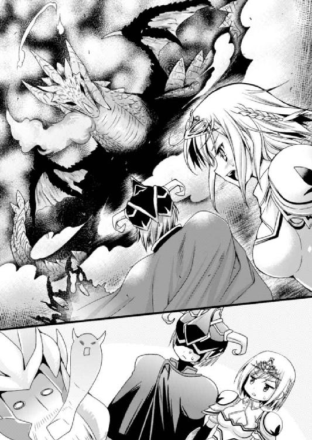
『し、心臓発作を起こしてるのよ......！ 数百年ぶりに、しかもお酒が入った状態で竜に変身なんて無茶なことしちゃうから！』
「えええええっ!? 心臓発作!? じゃ敗北でもなんでもないじゃん！」
パンドラの説明を聞いて、さすがに小声になるのも忘れて驚愕の声を上げてしまった。
しかしベリアルはというと、苦しげにしながらも話を止めない。
「だが人間どもよ、これで安心するのはまだ早い......くくくっ」
ハッとした。
（この人、死に際を悟ってボス敵っぽい格好いいセリフで締めようとしている......！）
それを証明するように、やや早口になったベリアルは一気にセリフを吐き出していく。
「我は人間の生み出した欲望そのもの。やがて第二第三の刺客がこの街を襲うであろう......！ その時まで、せいぜい惰眠をむさぼるがいい、人間どもよ！ おっ、ぐぐぐぅっ！」
すべて言い切ったベリアルが震える拳を天に突き上げて......ぱたりと倒れた。
静寂の中を、ひゅーっと風が流れていく。
『逝ったみたい......。まさに四天王の鑑、惜しい人を亡くしたわね』
呟いたパンドラがさめざめと啜り泣きを始めている。
（たぶん、セリフの内容は全部でたらめだけど。ボス界で使われてそうな言葉だったけど......。なんだろうこのじーんとくる感じ）
妙に感動してしまったリオンは、まるで人生の師に対するように亡骸へと一礼。そこでふと思いついて、パンドラに尋ねてみる。
「そういえば、蘇生魔法でなんとかならないの？」
「肉体の老衰からくる死だから、たとえノーラの蘇生魔法だって効かないわ......ううっ」
「そっか......」
やはり死んでしまったのかと、しんみりしてしていると。ぽん、と肩に手が。
「あ、れ......？」
よく見ると置かれていたのは手ではなく、剣の先端だった。
「お前、この魔族の仲間だな......？ 大人しくしろ！」
そう言って剣を構えたのはセリアと同じ色の鎧を着た城の騎士達。しかもその周りには、彼らに率いられて駆けつけた十重二十重に自分を囲む兵士達の姿があった。
（あ......や、やばい！ いつの間に!?）
街中にいきなり巨大な竜が現れたのだから城内も大慌てだったのだろう。騎士に率いられて城から駆けつけた兵士達の人数はかなり多い。
目に入るだけでも五十人くらい、もしかしたらその倍くらいはいるのかもしれない。
ぐすすっと鼻を鳴らして、パンドラもようやく状況に気づいたらしき呟きを漏らす。
『ねぇリオン、人間に囲まれてるわよ？』
「分かってるって......。で、でも一応だけど聞いておくよ。今の俺ならこれくらいの相手をするのも可能だったりする？」
素の自分なら話にならないけれど、闇の四天王たる今の自分なら守護者の力を借りてなんとかなるかも、と思ったわけだが。
『誰に聞いてるの？ わたしは魔王の娘にして闇の守護者よ？ わたしが力を貸すリオンが本気を出せば、これくらいの人間なんておちゃのこさいさいよ』
思った以上に頼もしいお答えだった。ほっと溜め息をつきつつ、周囲の兵士を刺激しないよう、憑依したパンドラにだけ伝わる声で話しかける。
「よかった、それじゃさっさと逃げよう。どうすればいい？」
『そうね......まずは兵士を率いてる騎士だけを狙い撃ちにして。今のリオンなら思念だけで闇の魔法を発動できるから、十人くらい一気にやっつけちゃいましょ』
「へえ。そんなに簡単に魔法が使えるのか......」
『もちろんよ。でも、最初はなるべく派手に、魔族っぽく残虐な感じでやっつけてね。そうすれば他の兵士は怖じ気づいちゃうだろうし。闇魔法って威力は大きいけど隙も大きいから、そのあとは剣だけでなんとかしちゃいましょう』
「なるほど......ん？」
ふと違和感。なんだか話が食い違っている気がする。今のパンドラの言い方だと、ここから逃げるというより相手を皆殺しにする感じ......。
「あの......あくまでも逃げるだけだからね？ 殺しちゃダメなんだぞ？」
『......え？ どうして？ そりゃわたしだってちゃんとした戦闘は初めてだけど、これまで頑張って闇魔法の勉強してたし、これくらいの人数相手なら負けないわよ？』
（やっぱりだあああっ！ 分かってないよこの子！）
分かってないというか、価値観の違いか。
「とにかくダメなの！ 闇魔法も威力が強すぎて危なっかしいし、他に逃げる方法を......」
ヒソヒソ声でそこまで呟いた時、さっきリオンに話しかけたっきり無視されていた騎士が痺れを切らしてしまったらしい。
「とにかく城まで来てもらうぞ！ おら、こっちだ！」
ぐい、と腕を引かれた。しかし大人しくついていくわけにもいかない。
「や、やめろよ。こっちはそういうわけにはいかないんだよ......！」
急に腕を引かれたこともあって、リオンは無意識的に反抗してしまっていた。
それがいけなかった。
「なっ、なんだ!? うわあああっ！」
ほんの少し力を入れて腕を振り払っただけなのに。
ドガアァァァァッ！
その騎士は酒場のドアをぶち破って、テーブルと酒瓶をなぎ倒しながら、店の奥のカウンターまで軽々と放り投げられていた。泡を吹いて目を回してしまっている。
一瞬、周囲がシーンとしてしまう。
（なんだこれ、すごい力だぞ......！ 軽く力を入れただけなのに......）
闇四天王としての力を発揮するのは初めてだが、確かにこれならパンドラの言うようにこの人数相手でも勝てるかもしれない。だがしかし、そうだとしても問題がひとつ。
（一対一なら手加減もできるけど、戦うとなったら一斉にかかってくるだろうし......）
そうしたら力の加減なんてできない。無意識に振ってしまった剣で相手の身体が真っ二つ、なんてことにもなりかねない危うさがある。
「いいか、一斉にかかれっ！」
周囲の誰かが、リオンの恐れていた言葉を発する。
ざっ、と一歩前に出た兵士達が、よく訓練された動きで次々に襲いかかってきた。
「くっ！ この......！ やめろってば！」
慌てて抜いた剣で、先頭の兵士の剣は受け止めることができた。だが、その間に左右の横合いから同時に剣が突き出されてくる。
（わわっ！ しっ、死ぬううううっ!?）
容赦なく刺突される剣先は脇腹から心臓に至るラインを狙っている。剣技に疎いリオンといえども、そんな攻撃をまともに受けたら致命傷になることは本能で分かる。
『大丈夫よ、リオン！ 早く下がるの！』
「えっ!?」
ガイン！ と鈍い音と衝撃が走って兵士の剣が弾かれた。多少の衝撃で痛みはあったものの、どうやらこの闇の防具、魔法で守護されているようだ。
斬っても斬っても剣が弾かれる。自分を相手にする兵士達にとってはたまったものではないだろうけれど、さすがは闇の四天王。下っ端のくせに魔族の幹部だけはある。
（いや～、自分が敵じゃなくてよかった......）
などと自分でもよく分からないことを思った矢先に、今度は横殴りのメイスが頭に。
「うおっ！ こ、怖すぎる......！」
はしっと素手で受け止めた凶器を遠くに投げやってほっとしたのも束の間、死角の背後から槍が突き出されてきた。しかしその穂先がマントに触れた途端、闇の守護が発動して鉄の先端部分が蒸発するように溶け消える。
（おおっ！ す、すごい！ これなら強引にでも逃げられるんじゃないか......!?）
今のリオンはまさにボス敵。兵士達には気の毒ながら、倒すフラグの立っていない敵に一ポイントずつダメージを与えているようなもの。
しかし、その効果が無限に続くというわけでもないらしい。
『ほらほら、さっさと下がって！ いくら闇守護が付与されてるとはいっても、連続で攻撃されてたらこの防具でも持たないわよ！ 余裕のある今のうちに、魔法でばーんとやっつけて！』
「それができないから困ってるんだってば！」
こうなったら隙を見て囲いの薄いところを突破するしかない。さすがにダメージは受けるかもしれないが、今の自分なら致命傷は避けることができるだろう。
そう考えて包囲の薄い場所に走る。しかし、見通しが甘かった。
「あっ！ ちょ、ちょっと待った！ あぶな、うわあっ！」
突然、目の前にするりと現れた女性騎士が剣を振るう。魔力付与された鎧がその攻撃すらも弾いてくれたが、彼女の正確な一撃は鎧を着ていないところを狙っていた。
「っ！ 逃がさない！」
弾き返された剣を構え直して鋭く突いてくるセリア。しかも慌てて退いた瞬間、異様な気配が迫る。振り向いた途端、目の前が真っ白に。
なにが起こったのか分からないままに、全身が熱い空気に包まれる。脳を揺さぶられるような衝撃と、原因不明の痛みが全身を駆け回った。
「うぐぐ......な、なんだ今の......？」
数秒が過ぎ、ようやく目を開けて。自分が吹っ飛ばされていて、地に膝をついていたことに初めて気づいた。
兵士達の後方に待機していたらしき魔法使いの集団に気づく。
『た、大変。今の神聖魔法だわ。まだ大丈夫だけど、これじゃいずれ防具の守護が......』
「い、いかにも闇魔法と相性が悪い感じの響きだな......」
説明されるまでもなく窮地らしい。相性の悪い相手の出現で、兵士側にボスを倒せるフラグが立ってしまったようだ。
『早くっ！ 闇魔法であの魔術師集団を狙って！ じゃないと本当に......』
「いたた......、これは結構効いてるなぁ......」
わめくパンドラの声を聞きながら、リオンはよろよろと立ち上がって、ボロボロと崩れ落ちていくマントを脱ぎ捨てる。
（いよいよマズイな。これは腹を決めないと......）
パンドラが勧めるように本気を出して兵士大虐殺か。あるいは大人しく降参するか。
いや、周囲の兵士達の必死な形相を見れば、もはや降参が許されるような雰囲気ではなくなっているようだ。となればもう選択肢なんてものは存在しない。
「せめてもっと剣の扱いがうまかったら、手加減して兵士達を颯爽と退けたり、悠々と逃げることもできたんだろうな......。しょせん元はダメ勇者だし......」
『それって、抵抗せずに死を覚悟したような響きに聞こえるんだけど......』
パンドラはなかば諦め口調でそう呟く。
「巻き添えにしちゃってごめん。もしチャンスがあったら、俺が囮になってる間にこっそり実体化して逃げてくれていいから......」
『ああもう、リオンを見捨ててそんなことするわけないじゃない！』
機嫌を損ねてしまったか、パンドラはぶつぶつと文句を言い始めてしまった。
さっきは兵士を皆殺しにするような邪悪なこと言ってたわりに、根っこのところでは情に厚くていい子なんだな、なんてあらためてしんみり思ってみたり。
『ここで人間相手に大暴れできれば四天王としての株も上がってたのに。しょうがないわねーリオンは。でもそこがいいんだけど！』
そしてぶつぶつと続いた文句と長い溜め息のあと、吹っ切れたようにこう言った。
『大丈夫よ。そろそろだから』
「ん？ なにがそろそろだって......？」
よく分からないことを言い出した魔族の姫君に聞き返したが、答えてくれない。
その代わりに、周囲を囲む兵士達の間に妙なざわめきが起こった。
「な、なんだあれ......!?」
「増援か!? 油断するな！」
なんだか騒がしい。増援だなんだと言ってるようだけど......。
（味方の兵士の増援......って感じではないな。どういうこと？）
と、兵士達の視線を追って夜空を見上げると。
（あああああっ！ そ、そういうことかああああっ！）
そこには、歪んだ空間を背景に黒いシルエットが二つ浮いていた。
（そういえばそんなこと言ってた！ 言ってたよ！）
リオンは以前聞いたスルトの言葉を思い出していた。
──四天王っぽいセリフを言うために我々は常日頃からスタンバってるッス──
確か蘇生させられてすぐあとのことだった。そのあと属性選びでいろいろあったし、状況がハッキリせず混乱していた時だから、今まで忘れていたけれど。
──たとえばこの中の誰か一人がやられると、残りの者が自動的に転送魔法でその場に飛ぶッス。そんで強敵を倒した冒険者を挑発するという、そういう伝統ッス──
そんなことを言っていた。
そして今リオンのすぐそばには、火の四天王であったベリアルの亡骸がある。
『ね？ 大丈夫でしょ？』
「し、知ってたのかよ......」
パンドラが「大丈夫」と言った理由がこれだった。
（まったく、やっぱり邪悪だよ......。っていうかイジワルだ）
魔の姫がクスクス忍び笑う声にいじけたリオンが見上げる中空で、二人分のシルエットがさっそく四天王としての伝統行事を果たそうとしていた。
『ククク......人間どもよ。どうやら我ら魔族四天王の一人を倒したようだな』
小さなシルエットがうっすら唇を開いてそう言った。
魔法でエコーがかかっていたが、よく聞くと女の子の声だということはハッキリと分かる。そして元が無口だから長ゼリフが苦手なのか、なんとなく棒読みっぽい。
そして隣の筋肉質なシルエットが同じくエコーのかかった声で続ける。いつもの軽い口調ではなく重厚な声を作っていて、「お仕事頑張ってる」感がひしひし伝わってきた。
『しかし、ソイツは四天王の中でも......』
そして「最弱」と続くべきところでセリフが止まる。
一瞬の間があったあと、スルトがものすごい勢いで降下してくる。
「なんでお前が生きてるッスか!?」
「あのスルトさん、実はですね......ベリアルさんは心臓発作で」
「まさか、まさかっ！ オマエが生きてるのに呼ばれたってことは......！」
リオンが説明しているのにろくに耳を貸さず、「そんなはずない！」とばかりにきょろきょろ周囲を見回したスルト。その視線がベリアルの亡骸でぴたっと止まって、目が点に。カキーンと効果音がしそうな感じに硬直した。
「リオン、生きてた」
一方のノーラはゆっくり降りてきて、コツコツと杖で頭をつついてくる。相変わらず目は無感情なものの、口元がちょっと微笑んでいるような。
一応、死んだと思われていたリオンが無事で喜んでくれているようだ。
しばらく頭を小突いていたノーラだったが、急にその手を止めてしまった。すすっと手を掲げ、なんだろうかとリオンが周囲を見た瞬間、ドン！ と衝撃音が響き渡った。
「うわ、さすがは水の四天王。すごい魔法だな......」
さっぱり気づかなかったが、さっきリオンに神聖魔法を放った魔法使い達が、こちらがいろいろ取り込んでいる隙を突いて攻撃してきたらしい。
しかし、ノーラによって一瞬にして張り巡らされた魔法障壁がリオン達の周囲を守っていた。さすが本場の四天王、結界の中のリオン達はもちろん、障壁自体もあの強力な魔法を受けてまったくダメージを負っていない。
そしてノーラはその杖で、硬直しているスルトの頭もぽこんと叩いた。
「セリフ、言い直し」
「......うぅ、そうッスね。仕事はきっちり、でも、でも......うううっ」
それでようやく硬直の解けた風四天王だが、うっすらと涙を浮かべて愚図っている。
いつまでも口を開かないので、ノーラがこちらに目配せしてきた。
「え？ お、俺がやるの？」
こくりと頷かれ、ちょっと迷ったものの。
すっくと立ち上がったリオンが人間達に向かって指を突き出す。
（な、なんか緊張するな。えーっと、最初のセリフはたしか......）
コホンと咳払いして、それっぽく威厳のある声音をイメージ。正確には倒されたわけじゃなく心臓発作の自爆だが、それは故人のために伏せておくことにした。
「ククク......どうやら魔族四天王の一人を倒したようだな」
（おおっ、自分で言っておいてなんだけど、これはいかにも四天王っぽいかも！）
いざその気になって言ってみると、これが意外に楽しかった。
「ヤツは四天王の中でも最強......」
ノーラが続ける。さっきからエコーが消えてしまっているので威厳がなく、女の子が拗ねて駄々をこねているような声になってしまっているのは愛嬌だろう。
最後のスルトが無理やり続けた。
「し、心臓発作ごときにやられてしまうとは四天王の面汚し......ううっ、ベリアルさんは四天王の誇りだったッス！ すごい人だったッスうううううっ！」
無理やりだっただけに、もう内容的になにを言いたいのか分からなくなっている。せっかく伏せておいた発作のこともバラしてしまうし、もうグダグダ。
しかも、これで帰るのかと思いきやそうではなかった。
「ううぅ......こうなったら四天王連戦で仇討ちッス！ いいッスね!?」
「えええっ!? なんで!? 仇討ちっていっても......心臓発作なのに？」
スルトはすっかり盛り上がってしまって、人間達をベリアルの仇と定めてここで戦闘を続けるつもりらしい。しかも、無茶苦茶なことを言ってきた。
「四天王は一人ずつ相手をするのが基本......ということでリオン、四天王の序列的にオマエがいくッス！ その間に我々はベリアルさんの亡骸を回収して帰るッスから！」
「待って待って！ なんでそうなるんですか！ しかも、俺、すでにボロボロなんですけど......。無理です、逃げましょうよ」
しかしいくら説得してもこのままでは帰る気がないらしい。
こうして言い争っている間にも、ノーラの張った魔法障壁の外では兵士達が慌ただしく動き回っている。さっさと逃げないとますます大変なことになってしまうのに。
困り果てていると......黙って考え事をしていたノーラがようやく意見を出してきた。
「四天王のトップが倒れた。いつもと順番が逆だから、次はナンバーツーが出るべき」
「............」
なぜか、一転してスルトが沈黙してしまう。
そしてしばらくなにやら考えてから、ぽつりぽつりと話し始めた。
「で、でもジブン、実戦経験ないんで自信がないッス......」
一瞬、聞き間違いかと思ってしまった。
「あの、いま、実戦経験がないって言いました？ どういうこと？」
なのでおそるおそる尋ねてみると......。
「だってたまに冒険者が来ても、四天王序列の下から戦っていくから出番が回ってこないんスよ。勇者でもない限り、四天王を全員倒そうなんて人間いないッスから」
信じられないことを聞いてしまった気がする。
「たまに強い冒険者がいても、下っ端の四天王を一人倒してそれっきりってことばかりだったッスから......リオンのいる四天王最下位ランクだけ世代交代が早いんス」
「ええー！ じゃ、じゃあノーラも実戦経験はなかったりするの!?」
こくりと頷き返されて、すごく切ない気分になった。
『ね？ だからリオンなら、やる気を出せばすぐ四天王トップが狙えるわよ！』
「ううぅ......。もういいから......」
パンドラに呟きを返しながらも、もう、ぐったりしているリオンだった。
（ぐぐぐ......！ なんだか腹立ってきた......！）
こっちはさっきまで、多方面に迷惑をかけるのが嫌で死ぬ覚悟までしてたというのに。
「じゃあいい機会です！ 今回は言い出しっぺですし四天王ナンバーツーの......いや、いまや暫定トップなんですから、スルトさんが責任持ってください！」
「うっ、ジブンが？ それは、まあ、うーん......。ところでリオン達はどうするんス？」
少しはおだてたつもりだったのに、いかにも自信がなさそうで煮え切らない。
「そりゃ俺はもうボロボロですし、ベリアルさんの亡骸も運ばなきゃいけませんし、ノーラ......さんの転送魔法で一足先に帰るってことで。でも、人間達とは過激な戦闘はしないようにしてくださいね！ いくら人間相手でも殺したりしちゃダメです！」
実戦経験も自信もなさそうとはいえ、たぶんスルトなら危ないことにはならないだろう。むしろそれなりに強いはずなので、一応、相手をする騎士達のために釘は刺しておく。
「え？ 殺しちゃダメって、それって仇討ちの意味があるんスか？」
「人間達をあえて殺さず、ひたすらあしらうことで、『こんなに頑張っても敵わない』という死ぬよりも苦しい絶望を感じさせるんですよ！ ベリアルさん亡きあと、スルトさんは四天王最強なんですから！ だいじょうぶ！ できます！」
自分でも適当だなーと思いつつも、リオンは勢いでごまかす。
「うっ、な、なるほど、分かったッス......。で、でも、せめて！ せめて少しの間だけでもジブンの初めての戦闘を見ててほしいッス。一人だと心細いッスよ......」
「あんたは子供ですか！」
拗ねる四天王を強引に言いくるめて、後始末は全部スルトに任せることにした。
「じゃあ、そういうことで」
「ううぅ......ッス」
風四天王が頷いたのを見計らってノーラに合図。魔法障壁が消え去ると同時に、遺体を回収したリオンとノーラの二人は宙に浮かび上がっていく。
周囲を右往左往していた兵士達が障壁の消失に気づいた。
「くそっ！ 魔物ども、逃げる気か！ 待てっ！」
騎士達が空に浮かぶ二人の魔族四天王を見上げ、勇猛果敢に挑発してくる。
しかし剣はもちろん届かず、矢は防ぐまでもなく一本も飛んでこない。むしろ敵が減ったのを幸い、地上に残った風の四天王を意識してそちらに剣先を向けていた。
それを見たリオンは余裕綽々で口を開く。
「逃げるだと？ くっくっく、人間どもよ、そのような大口を叩くなら、そこにいる四天王の一人......吹き荒ぶ絶望の風を倒してからにするんだな！ 四天王の真の力、思い知るがいいわ！」
だんだん慣れてきた四天王風の口調で言い放つ。
「......だが一応言っておこうか！ あまりその四天王を挑発しすぎると本気を出されて死ぬことになるかもしれないぞ！ だから気をつけてそこそこ頑張るがいい！」
言いたいことをすべて言ったリオンは隣のノーラに目配せして魔法を発動してもらう。
空間が歪み、転送魔法の用意が整った。
（セリア、スルトさんに対して無茶しないでくれるといいけど）
上空から見ても彼女の姿は見つからない。だが、実際の剣の腕前はともかく騎士達の中では駆け出しだし、彼らと一緒ならそうそう無茶なことはさせてもらえないだろう。
（たぶん大丈夫かな。できればもっとゆっくり話したかったけど......今の俺の姿じゃそんなわけにもいかないか）
中空の二人の姿が空間の狭間へ呑み込まれていく。
あとに残されたのは、目をきょろきょろさせてなんとなく挙動不審な風の四天王。そしてそれを取り囲んで殺気立つ、たくさんの兵士達だった。
思った通り、さすがは四天王ナンバーツー。
スルトが古城に帰ってきたのは、あれから丸一日経ってからのことだった。
人間を殺さないと承諾した手前ひたすら手加減して戦ったらしく、かなり苦労したらしい。しかしボロボロになってしょんぼりしながらも、さしたる怪我はなく。ぶつくさ文句を言っているスルトをなだめつつも、リオンはとりあえず胸を撫で下ろした。
しかしそのせいで、拗ねてしまった彼の意見を通さざるを得なかった。
スルトの要求、それはお葬式を執り行うことだった。
リオンの古城の奥にある広間。そこには現在、ベリアルの遺影が飾られ、火の灯された燭台がずらりと並んでいる。荘厳な光景に見えなくもない。
（はー、疲れた。今日も忙しそうだし......）
昨日まで一週間にわたって盛大に執り行われたベリアルの葬儀。そこでさんざんこき使われた下っ端四天王が溜め息をつく。しかも今日は、葬儀に引き続いての四天王会議がここで開かれることになっていて、気の休まる暇がない。
（下っ端はつらいよ......。それにしても、例の件はどうしたもんかな）
予想外のベリアル逝去によって宙ぶらりんになっていた人間界侵攻計画をどうするか、今日の会議で決めなければならないらしい。
（そりゃ中止にできれば越したことはないけど......スルトさんがまた「仇討ちだー」とか言ってやる気を出しちゃいそうだしな）
中止させるためにはなにか理由が必要だが、それがいまいち思いつかない。
そんなわけでリオンは今、ベリアルの遺影を前にうんうん唸っているわけだった。
「また『どうやって人間界侵攻をやめさせようかなー』とか考えてるでしょ？」
「うっ、パンドラか」
今日は実体化している魔王の娘が、いつの間にか背後に立っていた。
「だってさー、俺、勇者だよ？ やっぱ無理があると思うんだよね」
こそこそ声で文句を言うと、パンドラは「やれやれ」とばかりに溜め息をひとつ。
「またそんな諦めの悪い......さっさと覚悟を決めてよね。新しい四天王が入ってきたら、その人に負けないようにもっと頑張ってもらわないといけないんだから......」
「え!? 新しい四天王って!?」
初耳だ。そういえばベリアルが死んで四天王が一人欠けているけれど。
「補充が必要だから、今日の会議で誰を入れるか決めるって言ってたわよ。スルトが」
「うっ、そうなのか......新しい人を入れるのかー」
そうなったら自分の立場はどうなるんだろう？ ランクがひとつ上がってナンバースリー？ にしては威厳も実力も伴ってない気がする。
「ま、まさか、俺はずっと最下級四天王なんてコトは......」
「だから、そうならないように切磋琢磨しなきゃ？ ね？」
と言いながらパンドラが腕に抱きついてくる。乳房を擦りつけるようにしながら、おねだりするようにちょっと上目遣い。
「うっ......。こ、こら、やめなさい」
なんて言いつつも、相変わらずプニプニして心地よい胸の感触に意識が引き寄せられてしまう。ふわりと鼻腔をくすぐるパンドラの匂いが下半身をムズムズさせていた。
（そういえばここ数日はベリアルさんの葬儀で忙しくて......）
パンドラともノーラともエッチなことをしていない。会議までまだ時間はあるが......。
（いやいや、そんなことしてる暇はないんだって！）
人間界侵攻をどうやってやめさせるか思案していたはずなのに、いつの間にか彼女のペースに引きずり込まれていた。
「なぁに？ どうしたのかしら？」
「うっ、と、とにかく！ ダメなの！」
「えー？ なにがダメなのかしらー？ リオンはなにを考えてたのかしらー？」
なんて言いながらパンドラはズボンの上に手を這わせてくる。分かってて言ってるのは間違いない。すでに半勃ち状態のペニスがさわさわと撫でられて心地いい......。
「くっ......！ お、おのれ......」
「うふふふ......」
端から見たらじゃれ合っているようにしか見えない。
だからだろうか。バン！ と広間のドアを開けて入ってきた人物は呆れたように溜め息をついて、じとーっとした目でこちらを見ている。
「うわ、ノーラ！ どどど、どうしたの？」
その音にビクッとしてしまったリオンに対して返ってきたのは、予想外の言葉だった。
「人間、攻めてきた」
※
「もうジブンは嫌ッスからね！ しばらく働きたくないッス！」
「わ、分かりましたから......」
テーブルを叩いて主張するスルトをなだめつつ、かといってリオンも困り顔だった。
「......対処を間違うと面倒」
同じくテーブルに着いたノーラが呟く。現在、四天王による臨時対策会議の開催中だ。
ノーラの情報によれば、この城に乗り込んできたのは冒険者パーティーらしき数人。しかし、だからといって油断できないのは彼女も言った通りだ。
先日の偵察行動が人間側を刺激してしまったのだろう。おそらくそのパーティーは、逆に魔族を偵察してやろうという人間側の斥候だ。
（たぶん王様の命令で冒険者を派遣してきたんだろうけど......まいったな）
少数で乗り込んでくるのだから手練れなのは間違いない。だから相手をするのが面倒なのはもちろんだが、もうひとつ注意点が。この斥候に城が手薄と見られたら、これを好機と見た人間の大軍を呼び寄せることになりかねない。
つまり、それなりに強いパーティーを相手に圧倒的な力を見せつけてやらねばならない。
（だからみんなで相手をして人間側に「ヤバイから手を出さないでおこう」と思ってもらう......ってのが一番よさそうなんだけど）
だが、スルトが「四天王は一人ずつ戦うのが基本ッス！」なんて具合に譲らない。ノーラもそんな感じだし、パンドラに至っては、
「いいじゃない、徹底抗戦よ！ 大丈夫！ わたしが闇の力を貸すリオンなら、そんな冒険者なんてけちょんけちょんよ！」
「あの、パンドラは四天王じゃないんだから......少し抑えてよ」
「むー！ いいでしょう、それくらい！ 空いてるんだから！」
空いたベリアルの席にちゃっかり座っているパンドラが、ここぞとばかりにリオンによる迎撃を主張。スルトもそれに同意見で、というか、自分が相手をしなくて済むならどうでもよさげ。ノーラはよく分からないが。
（うう......このままじゃ俺が相手をすることになってしまうじゃないか！）
元々ここはリオン管轄の城だし、そうなるのが当然ではあるものの......。
「だ、大丈夫かなぁ......。死なないにしても、もし負けちゃったりしたら大変なことになるんでしょ？ リスクが大きいと思うんだけど」
パンドラが「大丈夫だって言ってるでしょ！」と、どこから湧いてくるのか不思議な自信に満ちた顔で再度主張し......駄目押しとばかりに耳打ちしてくる。
「せめてこれくらいお仕事しないと、万年最下級四天王になっちゃうじゃない。それに......他の二人が本気で相手をしたら、その冒険者は死んじゃうかもしれないわよ？」
的確にこちらの弱いところを突いてくるパンドラは「勇者様なのに人間を見捨てるような判断をして、それでいいの？」と言わんばかりに、にたーっと薄笑い。よほど手柄を立ててほしいらしい。
「たしかに、それはそれで嫌なんだけど......」
そう言われると、自分が手加減して相手をして冒険者達を追い返すのがベストな選択な気がしてくる。問題は、そもそも自分が冒険者を圧倒できるかどうかだけれど......。
（この前と違って一対一に近いだろうし、パンドラが手を貸してくれるならなんとかなるかもしれないな......）
冒険者達はすでにこの城に突入し、まっすぐ奥に向かってきているらしい。リオンの古城にはたいした手下がいない、というか小間使いのスライム君達には避難するように言ってあるので、戦闘で時間を稼ぐこともできない。もう考え込んでいる余裕はなかった。
結局、その冒険者達の相手はリオンがすることになった。
※
リオンの判断は正しかったようだ。ただ、その一方で間違っていたともいえる。
葬式で使ったベリアルの遺影を片付けると、燭台の並ぶ大広間はちょうどいい具合に「ちょっと薄暗くていい感じに雰囲気が出ている荘厳な空間」に早変わりしてくれた。
リオンはその場所で、
「えっと、我こそは闇に潜みし漆黒の......闇に潜みし......」
なんて具合に、相手に向けて名乗る四天王ゼリフを必死に暗唱しながら、魔族四天王の流儀にのっとって冒険者パーティーを待っていたのだが......。
（なんでこうなっちゃうかな!? 俺のせいか！ そうなのか!? 勘弁してくれよ！）
ばばーんと扉を開けて登場した冒険者パーティーを緊張した面持ちで迎えたリオンの顔が、今は嫌な予感を伴う驚きにピクピクとひくついている。
『リオンどうしたの？ 冒険者がやってきたわよ？』
闇の守護者として憑依状態にあるパンドラの声が切なく脳内に響く。
やってきたパーティーは四人。この薄暗い空間で椅子に座っている不審な人影に気づいたのだろう、用心しながらじりじりと近づいてくる。
それが全員、リオンの顔見知りだ。
この城......以前は土の四天王グリムの城で、今はリオンの城だが、ここにも来たことがある人々。どうりでまっすぐここまでやってこられたわけだ。
「ううぅ......大変なことになった」
この境遇に愚痴っぽく呟いて、リオンは玉座めいた椅子から仕方なく立ち上がった。
（面倒なことになりそうだけど......こうなったらもうしょうがない）
邪魔なものを片付けた広間は、戦闘にはちょうどいい広さ。一段高くなっている玉座に向けて近づいてきた冒険者パーティーは、その前に来るとぴたりと足を止めた。
この距離なら相手がハッキリと見える。彼らはかつて勇者リオンが率いていたパーティーの仲間であり、この城でリオンとはぐれた仲間達だった。
「貴方は確か、この前ドラゴンと一緒にいた......この城の主というわけですね」
先頭のセリアがそう言って剣を抜く。
「ならば以前ここに来た勇者のことも知っているはず。話してもらいましょうか」
（うーん。やる気満々だなぁ......）
パーティーのリーダーである女騎士が構えると同時に、他のメンバーもそれぞれ得物を手に持つ。彼らの名前も実力もリオンはよく知っている。
「まっ......待つがいい人間ども！ まずはお前達の名を聞いてやろう」
それでも、四天王ルールに沿って互いに名乗り合おうと思ったのに。あっさり却下。
「魔族などに名乗る名前は持ち合わせていません！ 我々は王命によって魔族の城を探りに来ています。邪魔をする者がいるなら斬るだけのこと！」
（うわあ！ セリアったらなんでそんなに気合いが入ってるんだよ！ や、やっぱり俺が迎撃役になっておいてよかった......）
もしスルトが相手をしていたら、血気盛んなセリアが後先考えず戦闘を仕掛けて戦いをヒートさせて、どちらかの命に関わる大惨事になっていたかもしれない。
（とりあえず俺の名乗りだな！ それからなるべく一対一になる感じに挑発して......）
心の中で段取りを確認しつつ、悪役っぽい口調を作る。
「ならば死に行く者にせめて俺の名前だけは聞かせてやろう！ 我は、えーっと......闇に潜みし漆黒の四天王、リォ......って！ あ......まずい！」
しまった。予定外のことに慌ててつっかえつっかえなのに加えて、名前のことを考えていなかった。さすがに知り合いのセリア達を相手に「リオン」とは名乗りづらい。同名でごまかせるほど、自分は神経が太くないのだ。
「えーっと、我は闇に潜みし漆黒の四天王！ トンヌラとかなんとか、そんな感じの名前だが重要なことではないので名前は覚えなくてよいぞ！」
「............」
セリアをはじめとして、パーティーメンバーからも不審げな眼差し......。
『なによリオン、どうしたの？ セリフの前半は合ってたのに後半が変よ？』
「いやね、それには理由があって......この人達、以前に同じパーティーだったんだよ」
『なるほど、そういうことなの。うふふっ、すごい偶然ね』
楽しげなパンドラだが、偶然というかよく考えてみれば必然的だし、なによりこっちはすごくやりにくいのだ。
「よくここまで辿り着いた人間ども！ ほら、名前はもうどうでもいいだろう、さっさとかかってくるがいい！ あ、いや待て、せっかくだから一対一で戦おうではないか！」
そのせいで、頭の中で考えていた段取りをいろいろすっ飛ばしてしまった。
（やべええええええ！）
本当ならここで「たった一人の俺様を相手に数人がかりとは卑怯な冒険者達だ！」とかなんとか挑発して、リーダーと一対一の戦闘に持ち込む予定だったのに。
そのうえでパンドラの力を借りて圧倒的な力量差を見せつけ、他の冒険者達は一斉に怖じ気づいて逃走......というのがベストな展開だったのに。
（全部めちゃくちゃじゃないかああああああああ！）
案の定、そんな一対一の申し出に対して馬鹿正直に応じるセリアではなく。
「なにをバカなことを。さあ、いきますよ、みんなっ！」
あっさりと、戦闘の火ぶたは切られてしまった。
「ちょっ、うえっ！ ままま......っわ！」
いきなり魔法で火の玉が飛んできたのを紙一重でかわし、セリアが振り下ろしてきた剣を籠手で受け止める。
バシッ！ と魔法の力で剣が弾かれ、ほっとしたのも束の間。休む間もなく左からの刺突をよけ......さらにその奥から今度は鋭い氷の矢。
「リオン様の仇じゃっ......！」
老齢の魔法使いがそんなことを叫んで放った魔法が胸に直撃。
「ぎゃっ！ いてぇ......！ ううううっ......」
氷は砕け散った。これも闇の力に防がれてダメージと呼べるほどの傷は負っていないが、魔法使いの言葉も魔法も、心臓にとっては非常に悪い。
（おじいさん、俺によくしてくれたもんなぁ......）
旅の間だけとはいえ、自分を孫のように可愛がってくれた魔法使いのおじいさん。なのにこの容赦のない攻撃はなんとも複雑。仇とか言ってるところを見ると、死んだと思っているようだし......。よく見ると傭兵のおじさんも僧侶のおばちゃんもそんな感じで瞳に復讐の炎を燃やしている。
『これくらいなら避けるまでもないわね！ ほほほほっ！』
パンドラが澄ました笑い声を上げているが、リオンはいまいち喜べない。
「アイツの仇は俺がとる！」
少し感情的になっているのか、いつも冷静で、それでいて義に厚い傭兵さんが強引な突きで攻撃。僧侶さんの付加魔法で強化された剣だ。
（うぐぐ！ さ、さすがに強いなこの人達......！）
いまだ無傷と言っていいリオンではあるものの、さすがにこうも立て続けに攻撃されては。パンドラの闇守護だっていつまでも持つというわけではないし、このままではジリ貧になってこっちがやられてしまう。
『さあリオン、さっさと倒しちゃいましょ！ 思いっきりいっちゃっていいわよ！』
「そういうわけにはいかないんだってば......」
これではこの前の街での戦闘と変わらないじゃないか。相手が次から次に攻撃してくるので、手加減して攻撃しようにもうまくできない。せめて二対一くらいなら、今のリオンなら軽々とあしらうことができそうなのに。
「に、人間ども！ 我にこんな攻撃は通じんぞ！ だが一対一なら多少は手を抜いて戦ってやらなくもない！ いかがなものか!?」
「さっきから妙なことを言って、なにを狙っているの!? 四天王の一人というなら、策などに頼らず正々堂々と戦いなさい！」
騙し討ちでも狙っていると思われたか、むっとしたセリアが叫ぶ。
彼女だけはリオンが生きているという望みを抱いているようだが、だからといって剣技が鈍るようなこともなく。
「違う、これは策とかじゃなくて......いてっ！」
ガイン！ と兜に剣の直撃を受けて衝撃音が響く。これもたいしたダメージにならないとはいえ、さすがに頭への攻撃はきつい。痛みはともかく、衝撃と音が脳内に響いた。
（ううっ！ 正々堂々なんて言いながら、自分達だけ多人数で襲いかかってくるなんて！ 冒険者ってのはなんて自分勝手なんだ！）
かつての自分もそうだったことを棚に上げて、リオンはようやく剣を抜いた。
すかさず斬りかかってくるセリアの剣を受け止める。ぎりぎりっとつばぜり合いになって、しばし動きが止まった。
「うう、耳がキーンとする。は、話を聞いてくれよセリア......！」
やばい、また彼女の名前を口走ってしまった。ハッとして目を見開くセリア。
「そういえば先日も......なぜ私の名前を知っているの!?」
「うっ！ さ、酒場で名乗ったであろう!? だからお前だけは名前を知っているぞ！」
「......名乗った覚えはないです。なぜ名を知っているんですか？ もしかして......リオンから聞いたからですか？」
今度は疑うように目を細めて睨んでくる。押された剣がギギッと嫌な音を鳴らした。
（ひぃ！ 目が怖いいいいいっ！）
セリアをよく知っているだけに、本能的にびびってしまうのはどうしようもない。
「と、とにかく！ お前はなかなか見所がある！ おそらくこのパーティーで一番の腕利きだろう!? だから一対一の勝負で無駄な死人を出さずに......」
「しつこいですよっ！ 大人しく敗北してリオンのことを話しなさい！」
聞く耳持たずに剣を押し出し、女騎士は素早く身を引いていく。
つばぜり合いが解除される瞬間、すかさず他の仲間達からの攻撃が降ってきた。
再び火の玉が飛んできて目の前で炸裂し、さすがに闇の力でも防ぎきれないのか熱気が弾ける。顔をしかめて少し下がろうとするが。
「うわわっと！ あぶな......！」
傭兵さんがここぞとばかりに打ち込んできて危うく直撃。受け流すのが精いっぱいだった。
『ねえリオン』
その時だった。妙にトーンが低いパンドラの声が脳内に響く。
「な、なに？ いま結構忙しいんだけど......ほら、いまにも攻撃されそうだし」
『そんなのはどうでもいいの。それよりさっきの女騎士のことよ』
「え......？」
なんだか嫌な雰囲気が。
『さっきの話を聞いていて思い出したんだけど、あの人、ベリアル卿と一緒に街に行った時に会った騎士よね？ あの時も変な感じがしたんだけど......』
「だから同じパーティーにいたんだってば！ セリアは幼馴染みだし、そりゃ俺のこともよく知ってるよ！」
「......へぇ、幼馴染み」
ふんふん、なるほど。そんなニュアンスで呟いたパンドラはそれきり無言になった。
そのまま数秒......。
『あ、や、し、い』
「な、なにがっ？ べつに怪しいことなんてなにも......」
『リオンは黙ってて。わたしには分かるの！ 同じ女同士ピーンとくるものがあるの！』
「だからなにがっ!?」
『ただでさえノーラが鬱陶しいのに、これ以上の浮気は許さないわよ！』
「はあぁ!? 違うって！ セリアは全然そんなんじゃないから！」
幸いセリア達は襲いかかってこない。
兜の下で目を泳がせ小さな声でパンドラと会話するリオンだが、それを呪文かなにか唱えているとでも思ってくれたらしい。警戒して近づいてこない。
（今のうちになんとかセリアと一騎打ちする作戦を......！）
とりあえずパンドラは後回しにしよう、と決めたところだった。異変が起こった。
「あ、あれ？ 腕が動かない......！ なにかした!?」
『リオン、わたしとあの女とどっちが好きなの？』
「えええっ！ なんでその流れになるんだよ！ ていうか口以外動かせないんだけど！」
正確に言えば目玉も動かせるし、少しくらいなら首も。でも腕や足やその他もろもろは完全にリオンの制御を離れている。感覚はあるのに動かせないのだ。
『これは調べなきゃいけないわね。リオンがあの女をどう思ってるのか、そしてあの女がリオンをどう思ってるのか......』
「ちょっとパンドラ！ なにをするつもり......」
せわしない脳内会話の終わりを告げるように、リオンの腕が勝手に持ち上がった。
『さて、となるとあいつらが邪魔ね』
「なにしてんの!? か、身体がひとりでに動いてるううっ......！」
『ええ。守護者としてしばらくこの身体を強制借用したから』
さっさと後ろに下がったリオン......今は中身パンドラのリオンは、ごそごそと玉座の後ろを探り、隠してあった妙な杖を取り出した。
『えっと、確かこんな感じで......』
杖を突き出し冒険者達に向ける。
『とんでけー！』
いきなり脳内に叫んだパンドラがリオンの身体を操り杖を振った途端。
広間の中が一瞬にして光で満たされていた。
「なっ、なんだあああぁぁ!?」
思わず口走ったリオンが見ている前で、光が集まっていくつかの球体に。目をこらすとその周囲の空間が歪んでいるのが見えた。
「これはもしかして......転送魔法!?」
リオン自身も何度か体験し目にしている現象が起こっていた。
光の球体は三つある。セリア以外の冒険者を包み込んでいるようだった。
『万が一の時にリオンが逃げられるように、ノーラから魔法アイテムを借りていたの。でもほら、あの女騎士以外は邪魔だから消えてもらおうと思って』
空間の歪みに呑み込まれてすべての光球が姿を消し、取り残されたセリアが呆然としながらも叫ぶ。
「貴様！ 私の仲間達になにをしたのですかっ！ まさか......」
ぎりっと歯を食いしばった表情には憎しみが垣間見える。
「あ、待っ！ たぶん大丈夫だから少しだけ待つがいい！」
とりあえずそう言っておいてコソコソと内緒話。
「ちょちょちょっと、大丈夫なの？ 殺したりしてないよな？」
『もちろん行き先には気を遣ってあげたわよ。どこか遠くの街に飛んでいったはずよ』
とりあえずほっとしたが、事態の収拾はついていない。
『じゃあ話を聞かせてもらうとしましょうか。ほらリオン、あの子に聞いてみて』
さっきから口だけは動かせるし、リオンを操っている状態ではパンドラは声を出せないから代わりに尋ねろということらしい。しかしそんなこと言われたって。
「なにを聞くっていうんだよ！ 俺とセリアはなんでもないって言ってるのに！」
小声で文句を言うが、パンドラは取り合わない。
『むー。ならいいわよ。好きにするから』
「わわわ......や、やめ」
言い終わらないうちにダッシュ。
リオンの身体は剣を構えたまま、一瞬にしてセリアの前に達していた。
「くっ！ い、いきなり襲いかかってくるとは卑怯な......！」
「これは俺にとっても不意打ちで......！ とっ、とりあえず仲間達は無事だとだけ言っておこう！ 心配しなくていいぞ！」
さっきまで一対多だったのも卑怯といえば卑怯だけれども、それはさておき。さすがはセリア。とっさに構えた剣でこちらの剣を受け止め、そのまま数度打ち合わさせて対峙。
『ふふっ、それならこんなのはどうかしら！ えいっ！』
脳内のかけ声はいかにも可愛らしいものであるのに、操られたリオンの身体が繰り出す攻撃は非常に鋭い。それなりに大きくてそれなりに扱いづらい「闇の剣」を、パンドラ操るリオンはまるでレイピアのように繊細に、かつ素早く繰り出してセリアを翻弄する。
「うあっ！ こ、これくらいっ......！ 騎士を甘く見るな！」
対してセリアは勇ましいながら防戦一方。あちこちに剣がかするたびに次第に寄せられていく眉根が、今まさに彼女が感じている苦境を伝えていた。
「パンドラっ、剣が当たっちゃったら大変なことになるだろ！」
これはパンドラ向けのコソコソ話。
『えっ!? わたしよりこのセリアとかいう女の方を心配してるの？』
「ち、違うって！ ああもう！ 危ないから剣をしまいなさい！」
必死に呼びかけるがパンドラの剣は止まらない。
『それは大丈夫よ。リオンの装備一式は守護者たるわたしが作ったようなものだもの。これくらいのコントロールはできて当たり前だし、他にもこんなことだって......』
剣の刀身に、うっすらと黒いもやがまとわりつく。
流れるように舞った闇の剣がセリアの籠手に当たった途端、ギンッ！ と金属が弾け飛ぶような音がした。
「う、ああっ......籠手が！ たった一撃で......!?」
セリアが目を丸くして驚くのも無理はない。たった一撃、撫でるような攻撃だったのに、籠手の金属はいくつもの破片に砕けて足下に落ちてしまっている。
「うううっ、攻撃するつもりなんかないんだ！」
「なにを言っているのです!? さっきからこれだけ攻撃してきておいて......！」
つい口を開いてしまったリオンはセリアに睨まれ、
『ほらほら、どんどんいくわよ！ このまま裸にしちゃおうかしら!?』
そしてパンドラを抑えることもできない。
セリアは、とんでもなく速く繰り出される剣を二回に一回は防いでいる。それだけでもたいしたものだけれど、しかし相手が悪かった。
やがて肩当てが弾け飛び、頑強そうな白い鎧に大きな亀裂が入った。スカート部分や薄いロンググローブにも肌を傷つけないよう剣先がかすめ、むしろ相手が無傷のままによくもこれだけの攻撃ができるものだと感心してしまう正確な攻撃。
「なっ！ ふ、ふざけないでっ！ 遊んでいるつもり!?」
「遊んでいるというか、遊ばれているというか......！ とにかく人間よ、危ないからあまり動くな！ うっかり手元が狂いでもしたら、責任は持てぬぞ！」
リオンがなにもできず見ている前で、幼馴染みの騎士少女は鎧装甲のほとんどを剥がされ、服のあちこちを切り裂かれ、一方的に嬲られているような状況に。
動揺しているせいか、セリアからさっきまでの騎士口調が消えて、年齢に似つかわしい女の子の口調が混ざり始める。
「負けない！ お前には負けないっ！」
カッと頬を赤らめているのは、怒りだけでなく羞恥心のせいでもあるだろう。
しかもパンドラは、さらに彼女を煽るようなことをしてくれる。
（あわわわわ......なにをするつもりだ!?）
騎士の剣が弾かれたその隙に、リオンの身体が背後に回った。あっさりと腕を取って、身悶えるセリアを抱き寄せるようにして動きを封じてしまう。
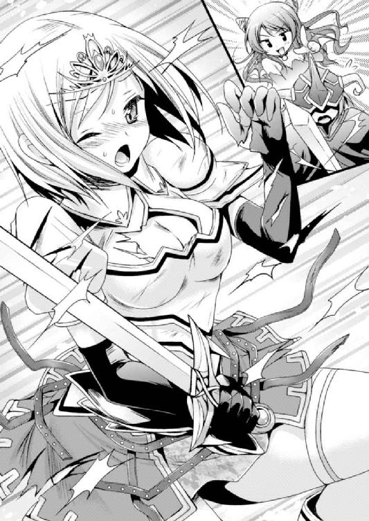
「あうっ！ くはっ、放しなさいっ！ どうするつもりっ!?」
「ど、どう料理してやろうかな。......放してやってもいいんじゃないかとは思うが」
とりあえず状況に合わせたセリフでセリアからの痛い視線をごまかしつつ、リオンは内向けの言葉も付け加える。しかしパンドラはリオンの苦境を知っていてもどこ吹く風。
『う～ん、リオンってば、なんだか心臓がドキドキしてない？』
「そ、そんなことは......ない」
パンドラ向けにはそんなことを言いつつ、実はドキドキしていた。
（だって、こうしてみるとセリア、引き締まってるわりに意外と......）
身体を揺らすセリアと密着しているような状況。壊れかけの鎧に守られながら、その内側の膨らみがふるっと揺れているのが間近に観察できてしまう。
きゅっと締まった太腿のラインだって、スマートなのによく見ると色っぽい曲線。その白い肌は見た目からしてなめらかそうで......。
『ああっ！ 今、なんだか邪な思考が流れてきたわよ！』
「ううあっ！ しまった！」
油断していたせいで心の中の声を読まれてしまった。こうなるのが嫌で、伝えたいことをわざわざ口に出して思考と分離しているのに。
『やっぱりリオン、この女のことが好きなのね！』
「ちちちっ、違う！」
混乱して大きく叫んでしまったせいで、眉を吊り上げたセリアに睨まれる。
「なにが違うのよっ！ は、放して......っ、きゃあ！」
そして彼女がずいぶん可愛らしい叫びを上げていた。同時に、手の平へとスベスベした感触。さっき、ついつい見入ってしまった太腿のなめらかな感触だった。
「あああっ！ どこ触ってんだよ！」
今度はしっかりとパンドラに向けた小声で文句を叫ぶ。操られた自分の腕は、片方でセリアを抱き締めるように拘束し、もう片方の手で下半身を触っていた。
『......やっぱり、今、えっちな思考が流れ込んできたような......』
「こんなことしてたら当たり前だろ！ うわわ！ お尻をそんなにあからさまに触っちゃダメだろ......！ い、意外に柔らかいいいっ！」
くにっと鷲掴みにした感触があまりにも予想外で、後半は思考と口に出す言葉が混じってダダ漏れに。パンドラも「ほらやっぱり喜んでる！」とでも言いたげな雰囲気だが。いきなり尻の柔らかさを口に出されたセリアは真っ赤になって頭を振った。
「ま、魔族のくせに......馬鹿なことを言わないでっ！ 放して！ 放してよっ！」
全身を暴れさせてセリアは必死に拘束から逃れようとする。
（ううおおおおっ！ お尻がプニプニとっ！ 胸がプルプル揺れてっ......！）
握った手にお尻を押しつけられ、揺れる胸を間近に見下ろすリオンは一気にヒート。
物心ついた時から顔を合わせていた男勝りに剣の強い少女が、こんなにプニプニな身体をしていたのは驚愕だった。
剣技も勉強も、いつも格下扱いされることの多かった幼馴染みの自分としては、彼女はもっと鍛え上げられていてゴツゴツしているような印象だったのに。いま手の中にあるお尻は、引き締まっていながらに驚くほど柔らかくて。自分の尻の感触なんて覚えていないが、これは間違いなく男とは別物だ。
（当たり前だけどセリアだって女の子だ......！）
パンドラやノーラといろんな関係を結んでしまったので、自分だって女の子の身体の感触は知ったつもりでいたが。
セリアはひと味違う。芯のある柔らかさというか、鍛えられた健康美というか。
（綺麗なこの金髪も相変わらずで......花みたいにいい香りも昔と変わらないな。なんだか、仲がよかった昔を思い出す......一緒に剣の修行をして、一緒に水浴びして......）
『......ふーん』
（ハッ！ こ、心を読まないでくれっ！）
時すでに遅し。パンドラのジト目が目に浮かぶ。
「違うんだっ！ 誤解なんだっ！」
またしてもうっかり声を大きくしてしまったせいで、すさまじく怖い目つきをしたセリアが睨みつけてくる。
「なにが誤解よ！ こんなことをして......わ、私をどうするつもり......!?」
「あっ、いや、今のはセリアに対しての言葉じゃなくて」
混乱してきたリオンをよそに、魔王の娘は不穏な含み笑い。
『ふふふ......これはいよいよ事情を調べる必要がありそう。......でも困ったわ、このままじゃわたしは話をすることができないし』
がっちりと押さえ込まれたセリアが身悶えるが、パンドラは放そうとしない。力だけならセリアに負けないくらいにはあるつもりだし、闇の力の増強を受けた今ならなおさら。リオンを操る魔王の娘は全身で藻掻く女騎士の抵抗を意に介さない。
「もう放してよっ！ ふざけないで！」
たぶん襲われると思っているのだろう。瞳にはわずかに涙が浮かんでいて、それがものすごく後ろめたい......。
「あの、パンドラ？ 俺が悪いなら謝るからさ、もうこのへんで許してやってよ......」
『この子には魔法でちょっと眠ってもらいましょ。場所を移して、もっとじっくり話を聞き出さなきゃ......』
リオンの真面目な言葉を、パンドラはさっぱり聞いちゃいなかった。
※
「勇者の情報を持った女騎士を捕らえた」ということでスルトに褒められたリオンではあったが、その実、身体の自由はパンドラに奪われたままだった。
「なあ、そろそろ自由に動きたいんだけど......」
『ダメよ、この子を逃がしちゃいそうだし。さーって、地下牢に連れて行くわよー！』
あっさり却下されて、魔法で眠っている女騎士を腕に抱えたままリオンの身体は地下牢へと向かっていく。だんだんこの身体が他人のもののように思えてきた。
（しかしセリア、こんなに軽いのか......）
体勢としてはお姫様だっこ。ちょっとしたロマンスが生まれそうな格好ではあるものの、魔法で眠らされているセリアは起きる気配がない。
すぴーすぴー、と安らかにして無防備な寝息を立てていて......その顔がなんとも。
（おっと、また心を読まれてぎゃーぎゃー言われちゃうからやめとこう）
慌てて端整な寝顔から目をそらした。代わりに、一歩後ろを歩く少女に目を向ける。
「ところで、なんでノーラもついてきてるの......？」
「呼ばれた」
パンドラに言われて呼んだのは自分だからそりゃ知ってる。問題はその理由だ。
『だってわたしの言葉をリオンが伝えてくれなそうだから。ノーラなら魔法でわたしの思考も読めるし、代わりに尋問してもらおうと思って』
代わりに脳内の声が答えた。
「じ、尋問？ そんな物騒な......」
『そうねー。この子の態度次第だけどねー』
拗ねて意地悪いじめっ子状態になってしまったパンドラに操られるがまま、セリアを抱えて鉄格子の地下牢に入る。幸い少し前に掃除したばかりだから綺麗だけれど、石壁の空間はなんとなく湿度が高く、やっぱりその雰囲気はどこまでいっても牢獄。魔法の光が灯されてずいぶん明るくなったものの、気分のいい空間ではない。
（まさか、拷問なんてことはしないだろうけど......パンドラだからな）
魔王の娘としてたまに悪ぶってみせたがる性格なのはすでに把握済み。どうやらパンドラは自分とセリアの仲を勘ぐっているようだけれど、ハッキリ言ってそんな関係ではないのだ。身体を乗っ取られ意見を無視されっぱなしの身ではもはやなにもできることはないが、せめて変に暴走しないように注意しておかなければ......。
と、思った矢先からこれだった。
「あの......なにしてるのかな？」
『逃げないように拘束してるのよ。暴れられたら怪我しちゃうかもしれないし、リオンも困るでしょ？ ......幼馴染みとしては』
チクリと嫌みっぽく言われて閉口している間に、パンドラはリオンを操って女騎士の身体を拘束していく。
床に座らせると、背後に回した腕を後ろ手にロープで縛ってしまう。さらに足首には、牢獄に備え付けられている逃亡防止の拘束具を。腕が使えず、壁に繋がった足鎖をはめられ、腰の武器を取り上げられては、どうやったって逃げられないだろう。
「ここまでしなくても......」
『どうかしら？ この子......セリアだっけ？ 人間にしてはかなり強かったし、なんとなくだけどリオンと同じような隠された才能を感じちゃうのよね......油断できないわ』
「あ、それってたぶん家系が近いからだよ。はとこになるのかな？ かなり血筋は遠いんだけど、俺が勇者の予言を受けるまでは、セリアが英雄の血を一番多く受け継いでるんじゃないか、って言われてたし」
『むーっ、そういうことだったのね。どうりで......』
「でも、それにしたってたいした話は聞けないと思うぞ......。ほら、昔からの幼馴染みっていっても、俺と違ってセリアはエリート街道まっしぐらって感じだったし」
確かに昔はちょっと気になる存在ではあったけど。
「ここ数年は剣の腕がめきめき上がって、騎士の選考試験も楽々パスしちゃったんだよ。俺なんか模擬試合でもまったく歯が立たなかったくらいで」
そのせいでちょっと距離をとるようになってしまったけれど。
「でも俺が勇者に選ばれた時はサポート役を買って出てくれて。パーティーを組んで旅に出た時は、そりゃもう頼もしかったよ。ちょっと口うるさいんだけどな」
『......ずいぶんと楽しそうに昔話をするわね』
「う！ そりゃ、いい思い出だから......。パンドラは邪推しすぎなんだよ！」
憑依中である魔王の娘の表情と気持ちを代弁するように、傍らに突っ立っているノーラがジィィィ......と責めるような据わった視線を向けてきている。
（や、ノーラはいつもこんなだけど）
居心地悪く口を閉じると、どうやら準備が済んだらしい。パンドラの魔力が揺らぐのを感じた。セリアにかけられていた眠りの魔法が解かれたようだ。
もぞもぞ身体を動かしながら、女騎士がゆっくりと目を開けていく。
「んんっ......うぅ、ふぁああ......」
ほんの数秒、ぼーっとしてから。いきなり目を見開いた。
「きゃ！ な、なにこれっ......!? なんで縛られてるわけ!?」
素の口調で叫んだセリアの様子には変化なし。戦闘の影響も魔法の影響もないようだ。
慌てて腕を動かそうとして動かせず、危うくつんのめりそうになっている。それでようやく自分の身体の現状を把握して、セリアが目前に立つ四天王を睨みつけた。
それまで無言だったノーラが前に出る。
『じゃあ、リオンについて軽く聞いてみて』
水の四天王がこくりと頷く。本当にパンドラと意思疎通できていた。
「リオンについて、話して」
言われたまんまな質問を呟いたノーラだったが、その途端、セリアの瞳がまん丸になる。噛みつくように身を乗り出してきた。
「やっぱり知ってるの!? リオンは生きてるってこと!?」
（あー、そうか。セリアは行方不明になったとか、そんなふうに思ってるんだったっけ。生きてるってのは当たってるけど......）
パンドラはどう説明するつもりなのだろうと思っていたが......。
『本当のこと教えるわけにもいかないし、面倒だから死んだってことにしちゃいましょ』
「ひ、ひどい......。せめて行方不明のままにしておいてくれよ......」
『まあいいわ、ノーラに任せるから適当に説明よろしくー』
面倒くさそうにパンドラが指示をし、ノーラは素直に頷いた。なんだか今日の二人は息が合ってるというか、セリアとの関係を勘ぐった女同士、意気投合しているというか。そんな感じで、リオンとしてはすごく居心地が悪い。
「勇者は行方不明でたぶん死んでる。でも、情報が欲しい」
パンドラとリオンの意見を適当にくっつけたような説明で済ませてしまったノーラは、これ以上は説明の必要がないとばかりに「リオンについて話せ」と質問を重ねる。
だがセリアは一転して黙ってしまって......しばらくしてようやく、ぽつりぽつりと。
「勇者の情報を漏らすとでも思ってるの？ 私は、まだリオンは生きてると思ってる」
ああ、さすがは騎士様。囚われてしまっても心は折れていないらしい。魔族なんかに情報を渡してなるものかと、反抗の意志を固めたようだ。
（ま、情報っていっても隠さなきゃいけないような情報はないけど）
なにしろリオンは、何ヶ月か前に勇者になると予言されたばかりの勇者のたまご。実績もなければ弱点と呼べるような情報もなく、というか弱点だらけだ。
『ふふふ、ノッてきたわ。尋問はやっぱりこうでなくちゃ。勇者の情報を知りたがってると思ってくれるならむしろ好都合よ。こっちはリオンとの仲について聞きたいだけだし、それならぽろっと漏らしてくれるかもしれないものね......。では本題に入りましょう』
しかしパンドラはむしろ嬉しそう。ノーラを介して質問を変えていく。
「リオンのことをどう思ってる？ 女として」
本当にいきなり本題に入った。それはもう、不自然なくらいに。
「えぇっ！ ど、ど、どういう意味よ、それは！」
（ほら、セリアも意味が分からず混乱してるよ。あんなに顔を真っ赤にしちゃって......色恋の話なんて苦手っぽいもんなー）
しかしそれにしては慌てすぎだ。女騎士は盛んに目を泳がせながら、やがて顔を隠すように俯いてしまった。
『やっぱり素直には話してくれなさそうね。......では』
「お？ おおお？ なにをする気......うわわわわっ！」
それまで突っ立っていただけのリオンの身体が、パンドラに操られて急に動き出す。
「話さないなら......、こちらにも考えが」
ノーラが、喋らないリオンの代わりに声を当ててくれる。意外にノリノリだ。
「っ！ また......！ 殺すなら早く殺しなさいっ！ こんな、弄ぶような真似なんて......正々堂々と戦って負けた者に対して、卑劣ですっ、う！ や、やめなさいよっ！」
懸命に虚勢を張ったであろう騎士口調から最後には女の子口調に戻ってしまったのは、リオンの手が騎士の鎧にかかったからだった。
すでにさっきの戦闘で金属の装甲はあちこち失われ、胸を覆ってくれる胴鎧にも大きな亀裂が入ってしまっている有様。それが引き剥がされてしまう。
「やっ、やめ......！ 見るなっ！」
留め金を軽々と弾き飛ばし、鎧が床に落ちてがらん、と大きな音を立てる。
（あ......お、おっぱいが見えそうに！）
内に着ているインナーがあるからまだ全容は見えないものの、胸元は通気のために開いた構造。そこがわずかに斬りつけられているせいで、柔らかそうな胸の肉が覗いていた。
セリアは必死に身体を揺らして身体を丸めようとしている。胸に注がれる視線から逃れようとしているのだろうが、そのせいで足が開き、その奥に白い布地が見え隠れ。
（セリアっ、そんなに身体を揺らしたら余計におっぱいが見えちゃうって！ それにパンツがっ！ さっきからちらちらしてるよっ！）
下手に口を出すと、パンドラのいたずらっけを刺激してさっきと同じ展開になってしまう。危うく声に出しそうになるのを抑えつつ、目で察してもらおうと必死に訴える。
「あっ、み、見るなっ！ こ、このスケベ四天王っ！」
顔が兜で隠されているせいで、そんな訴えは通用しなかった。むしろ股間をジロジロ眺めていると捉えられてしまい、余計におっぱいを振り乱して前屈みに床へうずくまろうとする。確かにそれでショーツは隠せたが、今度はおっぱいが重量感たっぷりに吊るされる格好になってしまい、柔肉がプルプルと震えている様が服の上からもあからさまに。
（なんというエッチな格好！ ううぅ、ダメだ。なんだかムラムラする......）
『ちょっとリオン、さっきから変な気分になってない!? なによっ、わたしの方がおっぱい大きいじゃない！』
パンドラの怒声と、胸の大きさについてぴくりと眉を揺らしたノーラの冷たい視線。
「あああっ、感情を読まないでくれぇ......！」
『ふんだ、こんなおっぱいなんて......！』
と言いながらパンドラは手を動かす。リオンの手がセリアのおっぱいを掬い上げ、たぷたぷと手の平で重量を量るように。充分な重さを感じる物体が、手の平からこぼれそうに広がって小刻みに震える。
「ひっ！ あ、あ、あ、ああ......」
セリアは突然のことに身体を硬直させてしまい。なにか喋ることすらできずに、顔だけがものすごい勢いで赤くなっていく。そのまま石像のようになってしまった。
「ちょっとパンドラっ！ や、やめよう！ もうこんな意味のないことやめよう！」
しかし懸命の懇願はあっさり流され。手の平にはむにゅっとした感触。
『あら、意外とあるわね。それでもわたしには敵わないみたいだけど......。どう？ わたしとセリア、どっちのおっぱいの感触が好き？』
「あわわわ！ どっちもっ、すごく柔らかいです！」
『どっちが好きかって聞いてるの。もちろんわたしよね？』
「う、ううぅ......」
答えを強要され、どこまでも形を変えそうなパンドラのおっぱいの感触を思い出しつつ、いま手の平にある、張りを持った柔らかな重量感と比べてみる。
（どっちも捨てがたく、どっちもありがたいです......）
選ぶことなどできずに冷や汗を掻いてしまう。だが、身体は正直なもので。
『あんっ！ な、なにこの感覚、おちんちんが......。こらリオンっ、なに考えてるのよ！』
憑依状態にあるパンドラは、ある程度はリオンと感覚の共有ができる。身体が彼女の完全制御下にある今は、それがなおさら伝わってしまうらしい。ムクムクと大きくなっていく下半身の感覚まで感じ取られてしまったようだ。
「ううぅ、そんなこと言ったって」
本当に小さい頃だが、セリアとは一緒に水浴びしたことが何度かある。一緒に剣の修行をして掻いた汗を流すために湖に入って......。その頃はまったく異性を意識していなかったから、よく覚えていないけれど。少なくとも胸はこんなに大きくなかった。
そのおっぱいが、今はこんなに大きく柔らかくなっている。その変化を感じただけで、股間にはすごい勢いで血が集まってしまう。
そういえば身体のラインだってあの頃とは全然違う。鎧を脱いだだけで引き締まった腰のくびれが目を吸い寄せて放さないし、緩やかに膨らんだお尻やすらりと伸びた太腿は、いかにも女の子らしい柔らかい曲線を見せつけていて。
「なななっ......！ 放してよっ！」
ようやく我に返ったセリアが、飛び退くようにして床を後ずさる。しかし片足にはめられた鎖付きの拘束具から足を留め置かれてしまい、しどけなく伸ばされた足が太腿をさらけ出していてなんだか色っぽい。
目線を上げていくと、セリアが大きく目を見開き、リオンの股間を見つめていた。
「ひっ！ ま、まさか......私を......そんなことをしたら舌を噛んでやるから！」
あっ、と慌てたがリオンは身体を動かせず隠すこともできない。
『汚いものを見るような目で見て、失礼な女ね！ 本当に犯してやろうかしら』
「だ、ダメだからな！ そんなことしたら......ううっ、考えただけで怖い！」
舌を噛むだの言っているし、もちろんそんなコトさせられない。だが、それはさておいても、彼女が怒るとものすごく怖いのを知っているリオンとしては絶対に却下だ。
『まあ、そんなことしないけれど。これはあくまで、わたしのリオンの身体だものね』
パンドラの言葉にちょっと安心......したのも束の間だった。
『その代わり......ノーラ、よろしくね』
そういえば背後に控えている四天王はさっきから無言無反応だが、どうしたのだろう？ と目を向けると......予想もできない異様なことになっていた。
「しょ、触手が！ ノーラから触手があああっ！」
なんと、彼女の身体から触手としか言いようのないものが生え出ている。
（ななななんでこんなことに！）
どこからどんなふうに生えているのか、正確には分からない。いつもと同じローブの裾から足下へ、半透明のウネウネしたものが何本も伸び出て地面を這っているのだった。
「............」
リオンの叫びがパンドラを通して伝わったのか、ノーラがふと寂しげな表情。
「ああ！ ごめん！ 違うんだ、べつに生やしちゃいけないってことではなくて！ 綺麗な触手だよ、うん！」
気持ち悪がっていると思ったのだろう。反射的に謝ってから、自分はなにを言っているのかとなおさら混乱してしまう。
「............ん」
しかしノーラはその言葉に満足した様子。ちょっと頬を染めているのがよく分からない。
（ううぅ......まあ、スライムの化身だもんな。前もパンドラに変身してたりしたし、これくらいできそうだけど......。最近はすっかり普通の女の子みたいな感じになってたから）
ちょっと驚いてしまったが、確かに奇妙な感じはするものの、気持ち悪いというほどでもない。触手自体もグロテスクなものではなく、水色の半透明でプルプルしていて......いかにもスライムちっくというか、なんというか......お菓子みたいでおいしそう？
（そ、それはそれでノーラに失礼だな、たぶん）
と、その言葉は心の中に留めておいて、いったいその触手でなにをするつもりなのかと見ていると。ずるずると地を這った触手が、セリアへと向かっていく。
（まさか......そういう展開なのか!?）
セリアが牢獄の床をずりずりと後ずさる。
「あうぅ......こないで！ 気持ち悪いっ！ こっちくるなっ！」
（ああ、そういうこと言っちゃうと、ノーラの機嫌が......）
しかし、セリアに気持ち悪がられたところでこの四天王は気にしていないようだ。相変わらず無表情なまま、触手の動きにだけ変化を出している。
まるで脅かすように鎌首をもたげてみせたり、ゆーらゆーらと顔の高さでわざとセリアに見せつけてみたり。たぶんノーラも楽しんでる。
すっかり怯えて後ずさるセリアだが、すでに拘束に付けられた鎖はぴーんと張って限界点。触手はその身体に近づき、足首にまとわりついて、そのまま体表をのぼっていく。
「やっ、やだっ！ ヌルヌルしてる......っ。っは、ううぅ......！」
なんとも新鮮な女の子っぽい声音で悲鳴を上げつつも、女騎士は身動きできない。
足首の拘束が外され、代わりにスライム触手がぐるぐる巻きついて動きを封じ込めていた。腕も同様で、ロープが解かれて代わりに変幻自在な触手が絡みつく。さっき以上に身動きがとれなくなって、セリアは恐怖で目を見開いていた。
「ちょっと！ こんなことしたらセリアが可哀相だろ！ 怖がってるって！」
『一線を越えなきゃ大丈夫よ！ ここからが面白いんだから、リオンは黙ってて！』
「そういうわけにはいかないし！ くうぅ、なにかできることはないか......」
ふと上げた視線に、恥じ入るように顔を伏せたセリアの姿が映る。
いつもと違って弱々しいセリアの姿に、ズクンズクンとペニスが疼いてしまう。密かに興奮してしまっているその背徳感もあって、
（やっぱりダメだ！ これ以上はっ！）
さすがにこれはセリアが可哀相すぎだろう。
彼女は自分を魔族の四天王だと思っている。まあそれは合っているけれど、少なくとも敵と思っている相手に、はしたない姿を見られて、もしかしたら犯されるかもしれない、なんて恐怖心を抱かせているのだ。イタズラにしてもそれはさすがに我慢ならない。
「聞いてくれ！ パンドラ、もうやめよう！」
パンドラ用の小声ではなく、大声でそう言い放つ。一番驚いているのは、突然わけの分からないことを叫んだ四天王に目を丸くしている女騎士だった。
「セリア、実は俺、リオンなんだ！」
もう全部バラしてしまってこの行為をやめさせよう、というやけっぱちな考えだったが、そうすれば少しはパンドラもやり方を変えてくれるはずだ。少なくともセリアを騙すような、必要以上に怯えさせてしまうようなことはしなくて済む。
そう、思ってのことだったのだが......。
「くっ！ ふ、ふざけないで......!!」
セリアが睨みつけてきた。
「あれ？ 今の話をちゃんと聞いてた？ 俺、リオン......」
「そんなわけないでしょう！ さっき行方不明だって......死んでるかもしれないって言ってたくせに！ しかも貴方はっ、戦う前に自分が四天王だって名乗ってたくせに！」
「あ、四天王なのはその通りなんだけど、死んだうんぬんはノーラが勝手に......」
「声色まで真似て......でもやっぱり違う。お前達はリオンの行方を知ってるんだ！ きっと勇者のリオンを持てあましてどこかに捕らえていて......殺したりしたら許さないから！」
まったく信じてくれなかった。
『残念だけど信じてもらえないわね。さて、続きをするからしばらく黙っていて』
パンドラが再び動こうとする気配。慌てて口を開く。
「ほんとにリオンなんだってば！ えーっと、ど、どうすれば......」
焦りまくりのリオンだ。言葉だけじゃ信じてもらえないらしいし、顔を見せれば分かってくれるだろうが、今は兜をかぶっていて身体を動かせないからそれも脱げない。
「そ、そうだ！ 昔、一緒に剣の修行してた時に、セリアに頭を打たれたショックで盛大に漏らしちゃったことあったよね！」
と、封印したい記憶の扉をあえて開けて秘密を取り出す。リオンが必死に頼み込んで秘密にしてもらった出来事だ。これを知っているのはリオンとセリアだけ。
「これは他人は知らないことだろ？ つまりそれを知ってる俺がリオンってことだよ！」
『リオン......漏らしたのは大きい方？ だったらわたし、知りたくなかったわ』
「ち、小さい方だっての！ お願いだからパンドラは少しだけ黙っててくれ！」
必死に説明するリオンだが......しかしセリアはますます表情を硬化させた。
「まさか私の心の中を......記憶を覗くなんて......。魔族の四天王ともなれば、それくらいはできるってこと......？」
「は？ そ、そんなことできないよ？ まさかまだ信じてないのか？」
「............」
鋭い視線がその答えだった。
『上級の魔族ともなればそういうことができる者も存在するから、この子の言うことはあながち間違いでもないわよ？』
「ぐぐぐ......」
パンドラの解説に歯噛みするリオンに、パンドラが同情の溜め息。
『どうやっても信じてくれそうもないし諦めましょ？ 今の話でずいぶん動揺してくれて、話が聞きやすくなったみたいだしね』
「ちょ、ちょっと？ まさかまだ......」
止まっていた触手が一斉に動きを再開した。びくっと身体を震わせたセリアが、憎々しげにこちらを見上げてくる。
「ほ、ほらね、本性を出した......。絶対に騙されたりしない......リオンのことは絶対に話さないから......！ んっ、く......！ ううっ！」
今も触手に身体を這い回られているセリアは、すっかり頑なになってしまったようだ。これでは、順を追って詳しく説明したところで信じてはくれないだろう。
しかも触手はセリアの胸へ到達。そこにぶちゅっと体液めいた透明液を吐き出した。
（あっ、服が透けて......！ こ、これは......なんてエロい......）
触手は胸をはだけさせるように動きながら液体を塗りつけていく。右の胸などは体液を吸った服が貼りついて肌の色を浮かせていて、ぷくっと盛り上がった乳首の位置までが見えてしまうほど。左の胸もすでに半分以上露出してしまっている。
そこに赤く色づいた乳首が見えた気がした途端、ずくん、と脈打った肉棒に血が凝集。
『もう！ 気が散るから興奮しないで！ さっきから邪魔ばかりするんだから......！』
「それは仕方ないだろ！ って......くぅぅ......どうすりゃいいってんだ」
下手に邪魔したらパンドラが嫉妬してますますひどいことになりかねないし、セリアへの弁明も許されない。為す術なしのリオンが「うぅぅ」としょんぼり呻いた。
なにより、こんな状況なのにこうも易々と勃起してしまう自分が情けない。情けないが止められない。視線だって自然とセリアに向けられてしまう。
見ると、這いずった触手がセリアの服の隙間から内部へと進んでいる。くすぐったいのか、気持ち悪いからか、彼女は目を細めて瞳を震わせたり、ぴくっと肩を揺らしたり。
「やっ、うぅっ！ はぁ、はぁ、く、くすぐった、んあっ！ こっ、こんなことぐらい、でぇ......っふ、はぁ、はぁ......」
声を出して自分を奮い立たせようとしているのが伝わってくるのだが、そのたびに息が余計に乱されてしまって、はぁはぁと肩でするような呼吸になってしまっていた。
「はぁう、んっ！ やだってば！ この......気持ち悪いって言ってるでしょ！」
口調だって完全に素に戻ってしまっている。もぞもぞ身じろぎしながら、それでも睨みつける眼差しはそのままに......ただし、瞳は苦しげに潤んでしまっていた。
左の胸に這った触手が、下乳をぐるりと経由。乳肉を持ち上げるようにして巻きついた瞬間、乳肌に貼りつくようにしてかろうじて残っていた布きれがずれる。
「あうぅ......むね、見るなぁ......！ んあっ、はぁ、はぁ......」
喘ぐように憎まれ口を叩いてセリアが身をよじる。完全に露出した乳房が、むにゅりと形を変えてつんと突き出た乳首を前に出した。
（俺、セリアのおっぱい見ちゃってるよ......。罪悪感は感じるのに、余計に......）
心臓がドクドクと跳ねて興奮していく自分を抑えられない。
形のいい乳房は張りが強く、整った形を見せつけるように前に出ている。それなのに触手に触れられるたびにくにゅっと歪んでいかにも柔らかそう。手の平にさっき触った乳房の重量感が蘇ってきて、ますます股間がムズムズしてしまった。
（しかしすごいな、いつもの騎士っぽい姿からは想像もできない格好だ......）
なんだか泣き出しそうな感じの表情で。どんどん乱れていく服から地肌の白さを覗かせて。痛々しいとも感じられる格好だけれど、今はすごくいやらしい。
しかも、淡い赤色の乳首は起き上がってぷっくりしているような気もする。反対側の乳房はまだかろうじて布地を貼りつけているものの、スライム触手の水分を吸って、ピンとしこり立った乳首が布地を持ち上げているのが完全に見えてしまっている。
（ううぅ、セリア、いやらしすぎる......。見ちゃだめなのに目がそらせない）
スライム触手のぬめりをまとってヌラヌラと輝く、重量感たっぷりの柔肉も、卑猥な形にふにゃりと歪んで。そこが何度も何度も、プルプル触手に嬲られる。
にちゃっとスライム触手のぬめりが塗りつけられ。先端がぐりぐりと押しつけられて乳房をへこませる。ずるずると這いずり、巻きつき......舐めるように乳首が弾かれた。
「ふぁっ！ っは、あぁ、はぁぁ......ぅ」
ひときわ甲高い悲鳴が上がって一瞬だけ呼吸が止まり、セリアの瞳が虚空に泳ぐ。
「リオンについて、どう思ってる？」
もはや無言になったリオンが目を釘付けにしていると、ノーラによる尋問が再開された。
そういえばそのためにこんなコトしてるんだった。すっかり忘れてしまっていた。
「んんぅ......い、言わないっ！ リオンは......くっ、ふ！ わ、私達の勇者なんだからっ......！ まだ勇者としては未熟だけど、っう！ ひ、卑劣な魔族なんかに、負けないんだからっ......！」
さすがに少し混乱状態にあるのか、セリアはさっきと違って言うつもりのない情報まで口走ってしまっていた。どうでもいい情報ではあるが。
（しかし耳が痛いな......負けたってのはちょっと違うけど、似たようなものだし。魔族だって思ってたよりずいぶん平和的だったから、最近じゃすっかり勇者としての自覚が薄れちゃってるしな......）
などとリオンが心の中で言い訳していると。
「なら......」
ノーラの呟きと同時、触手が下半身に向かう。
「きゃうっ！ そこはダメえっ！」
セリアが必死に身をよじるが足は余計に開かされてしまった。足首から太腿まで巻きついた触手が足を広げ、下半身がＭの字になる。
そして全身を吊り上げるようにして触手の巻きつく両腕が頭の上に。セリアはますます自由を失って、腰や上半身をモジモジ蠢かせるぐらいが精いっぱいだ。
乳房をプニプニつつかれながら、股間ではスカートが持ち上げられていく。
「はぅ......んんっ！ こら、スカートを......っあん！ も、持ち上げないで！ 見ないでぇっ！ こっち見るなぁ......！」
主に男性であるリオンに向けてそう叫ぶセリアの全身は、呼吸の乱れに羞恥心の高まりが加わって、ピンク色に色づいてうっすら汗を浮かせていた。
すっと潜り込んだ触手にスカート部分が完全にめくり上げられてしまうと、中からは白いショーツが顔を出す。動きやすさを考慮してか、なるべく肌にフィットしそうなシンプルなもの。しかし布地が秘裂へとわずかに食い込んでいるその光景を見て、リオンはますます目をそらせなくなってしまう。
縦割れを隠す下着を舐めるように、数本の触手が這い寄って蠢いた。
にちゃ......と、わずかに響いた音にびくっとして肩をすくめるセリア。
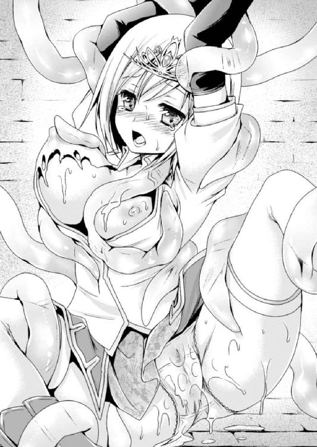
（もしかして、感じてるのか......？）
重点的にいじられている乳房をはじめとして、さっきから全身のあちこちに触手が這い回って刺激を与えられている。これだけ触りまくられればエッチな反応が出てしまうのも分からなくはないけれども、それにしたって、凜々しい印象のあるセリアがこうも簡単に、というのはちょっとびっくりだ。
『こんなに感じちゃって......このセリアって子はずいぶん敏感ね。いやらしいわー』
パンドラはわざとそんなことを聞かせながら、触手に新たな指示を出したようだ。
ずるりずるりと下着の上を這いずっていた触手が、先端を秘裂に沿わせて舐め上げる。ただでさえ食い込みつつあった布地が押し込まれ、同時に、そこに染みを作った。
（濡れてる......？ うわ、み、見ちゃダメだ！）
そこだけは。騎士セリアの女部分の反応をハッキリと示してしまうそこだけは、リオンは目にしてはいけない気がした。それを見てしまったら、ますます、罪悪感が......。
（やっぱり濡れてる......。染みがどんどん広がってく......）
ダメだった。すでに目が磁石同士がくっつくように吸い寄せられて離せない。
秘裂を割るように先端を押しつけた触手によって、じっとりとした楕円の染みを広げていくショーツ。スライム触手の水分を吸っている、というだけでないのは明らかだ。
ねっちょりと濡れたショーツが貼りついて、うっすらと色づいた恥丘の色を浮かせる。
セリアのそこは、リオンだって見たことのない場所。一緒に水浴びした時だって、こんなにじっくりと見た覚えはなかった。
その恥ずかしい部分が、形と色をくっきり浮かせている。
「はぁ、はぁ、うっ！ んん......やっ、あ、さ、触らないでよっ、っふ、あ......！」
時と共に、抵抗を示すセリアの身悶えが弱々しくなっていく。時々ビクッと身体を震えさせては、そのたびにだんだん緩やかになっていく身体の動きが、彼女が追い詰められているということを教えてくれる。
触手からの解放を求めてじたばたさせていた足は力が抜けたように動きを止め、内腿を擦り合わせたがっているようなモゾモゾした動きに変化。触手を振り払うように動いていた腰も、今ではむしろ揺らしているような緩やかな動きに。
パンツは様々な水分を吸って貼りつき、縦に伸びる恥丘の膨らみを充血した肌もあらわに、左右のそれに挟まれた秘裂の空白をハッキリと浮き上がらせて。
触手の一本が割れ目の上端に押しつけられる。
「ふぁ！ や、んんんっ！ くふ......は！」
おそらく陰核のある場所を下着の上からほじるようにされて、セリアは喉を反らして切なげな声を上げる。
「やめてっ、あんんっ！ そ、そこぉっ、ひんっ！ そこはぁ......！」
確かにセリアは敏感らしい。クリトリスを責められた途端、あからさまに声のトーンが跳ね上がった。もう限界とばかりに、金髪をさらさらと散らして首を振りたくる。
（セリア、イキそうになってる......！）
誰が見ても限界だった。
陰核をつつくように鎌首をもたげたスライム触手が、押しつけた先端をぐりっと半回転。
とっさに声を抑えようとしたのか、セリアが下唇を噛んで、天を向いた瞬間だった。
「ひっ！ だ、めぇ......んんんっ！」
瞬間的にひくひくっと全身に伝播する震えを起こして......彼女の身体が大きく跳ねる。
「あっ、あ、く......んんんんっ！ ふうぅぅぅ────っ!!」
連続して起こる痙攣に、抑え込もうとした声が小刻みに揺れていた。セリアは四肢をピンと伸ばし......やがてがっくりと俯いて全身から力を抜く。
（イッちゃった......。セリアが、俺の前で......）
なんとなく、セリアは性的なことにも鉄壁の防御を持っているようなイメージがあった。
だが、そんなのは思い込みだ。
『他人がイクのを見るのって興奮しちゃうかも......。さて、ずいぶん弱ってくれたし、今度こそ聞かせてもらいましょうか......？』
リオンが食い入るように痴態を見つめながら沈黙していると、その間にパンドラが行動を起こした。ノーラが前に出て、ここぞとばかりに尋問の続きを始めたようだ。
しかしセリアはゆるゆると首を振っていた。
「し、知らないよ......、そんなの」
そして、その代わりに愚痴のように呟きを漏らし始める。
「はぁ、はぁ......わたし、ただの幼馴染みだからっ。んんっ、リ、リオンちゃんは昔から優しくて、才能があって......ううっ、でも私は......」
なんだか変なことを話している。リオンに才能があるなんて話はもちろんのこと、小さい頃のように「リオンちゃん」になってしまっていた。
「才能？ でも、リオン弱かった」
ノーラのつっこみは的確だ。自分は剣も魔法も才能がないし、おまけに運もない。
「そんなことない！ リオンちゃんは昔から勇者になれるだけの素質はあったの！ みんながそれに気づけなかっただけよ！」
無理やり絶頂させられたことで、セリアの中の緊張感が切れてしまったのかもしれない。まるで幼児退行したようにムキになって愚痴を口走っている。
（でも、いくらなんでも素質があったってのは買いかぶりすぎだな）
もしかしてセリアに褒められたのは初めてかもしれない。いつも上から目線で、あーしなさいこーしなさいと口うるさい母親みたいな感じだったのに。それが感情剥き出しで言うからには、それは本心からの言葉なんだろう。
確かに嬉しくはあるものの、へたれ勇者の実情とは違うのでなんだか複雑でもある。
「それなのに王様のあんな無茶な命令で冒険に出されて......だから、せめてもう少しの間は私が守ってあげなきゃって思ったのに。それなのに守れなくて......」
勇者の情報というより自分に対する愚痴という意識なせいか、セリアの言葉は止まらない。リオンが勇者になった時の話やら、冒険に出る時のゴタゴタやら。勇者を守るのは自分の仕事なのにそれを果たせなかった......という自責の念からくる愚痴のようだ。
（き、聞いてるとムズムズしてくるな......！ もういいからやめて！）
冒険に出た時もセリアがリオンのためを思ってサポートしてくれていたのは理解していたけれど、面と向かってそういう心情を漏らされるのはすごく恥ずかしい。向こうはここにいるリオンが本人だとは思ってないからだろうけれど......。
パンドラが「むー」と不満げな呻き。
『やっぱりこの子、リオンのことが好きなんじゃないの？ 言っておくけど、これ以上の浮気はダメなんだからね！ リオンはわたしのものなんだから！』
「ないない。それはない。セリアのはあくまで幼馴染みとしての好意だから」
『......そうかしら？ 確かに、この子が言う勇者リオンの魅力と、わたしの知ってるリオンの魅力とはずいぶんかけ離れてるみたいだけど』
セリアも買いかぶりすぎだけれど、パンドラも自分のへたれ部分以外を好きになってくれてもいいのではなかろうか......。
そんなことを思いつつ、このあたりが潮時だと思ったリオンはもうひと押し。
「もういいだろ？ そろそろ解放してあげてよ......。俺もこれ以上は見てらんないっていうか、我慢の限界っていうか......」
『そうね、最後にもう一回だけ聞いて終わりにしようかしら。リオンたら、さっきからおちんちんパンパンなんだもの。こっちまで切なくなっちゃう......』
二人がコソコソやっている間に、セリアは無言になってしまっていた。
そこにノーラの呟くような声が響く。
「リオンに対して、異性としての感情は？」
さっき似た質問をした時は戸惑うばかりで返事をしなかったから、最後に確認をとるつもりだったのだろう。セリアに否定されて、この茶番は終わるはずだった。
しかし、女騎士はなかなか答えない。
シーンとしてしまって変な緊張感で満たされた頃になって、ようやくぽつりと。
「確かに好きだったかもしれない......けど。私がリオンちゃんのことを助けたかったのは、そういう感情があったからだけじゃない......」
「............」
呆然とするリオンと、
『あああっ！ やっぱりだわ！』
悲鳴を脳内に響き渡らせているパンドラは対照的だった。
「だから勇者になってほしかった。私もそれを手伝えると思った。でも実際は......」
延々と続きそうなセリアの愚痴はさっぱり耳に入ってこず、リオンは混乱していた。
（好きって言った!? セリアが俺を!? ほ、ほんとに......？）
ようやく動き始めた頭の中でさっきの言葉を反芻する。
「好きだったかもしれない」とは少しあやふやな言葉だが、それだけでもものすごい破壊力があった。なにしろセリアが自分を好きという可能性は、リオンの中では砂粒よりも小さなものだったのだ。
（こうなったら、なんとしても俺がリオンなんだって信じてもらわないと......！）
セリアを騙しているような現状への不満が、怒りに似た感情となってふつふつと沸き上がってくる。ざわりと、体中の毛が逆立つような妙な感覚......。
（パンドラの意識が逸らされてる今だったら......いけるかもしれない！）
『ちょ、ちょっとリオン!? え!? なにしてるの!? どうして腕が......』
とにかく精神を集中して、全身の力を一点に、右腕へと注ぎ込む。
「よし。なんとか......！ み、見てろよ、セリア！」
闇の守護者によって制御されていたはずの身体が......右腕だけだが、それがリオンの意思によって動いている。その手は自らの頭に向かい、兜を掴んだ。
そのまま乱暴に脱ぎ捨ててしまう。もちろんその下から現れた人物は......。
「ええっ!? リ、リオンちゃん！」
「そ、その呼び方、やっぱりちょっと照れるな......」
腕を無理やり動かした反作用でか、全身がものすごい倦怠感に包まれる。
『と、とんでもないコトするのね......。さすが勇者ってところかしら......』
呆れたような、感嘆するようなパンドラの呟きを聞きながら、まずは事態の説明を、と口を開く。今度こそ信じてもらえるはずだ。
「セリア、実は俺、一回死んじゃってさ。それで四天王になっちゃって......」
ぽかーんとしているセリアに向かって口早に説明。ここまできたらとにかく全部話してしまって、あとは野となれ山となれだ。
「まあ途中は飛ばして、とにかく人間なのに四天王として働いてるんだよ。そしたらこの城にセリアが来ちゃって、バレるのも嫌だったから追い返そうとしたんだけど......」
ぽかんとしたままそれを聞いていたセリアが、そこで我に返った。
「四天王に......なった......？ なのに私を捕らえて勇者の情報を聞き出すの......？」
「勇者の情報がどうのこうのは実は関係ないんだよ。事情が複雑なんだけど、パンドラっていう女の子がちょっと暴走しちゃってて......」
『あ、失礼なこと言われた気がするわ』
「ごめんってば！ いいからパンドラはちょっと自重して！」
口を挟んでくる魔王の娘を黙らせておいてから、再び説明を再開......しようとして。
「あれ？ セリア、なんでそんな怖い顔を......」
さっきよりさらに眉を吊り上げ、こちらを睨みつけてくるセリアに気づいた。かつて遭遇したことのある幼馴染みの怒り度合いでいえば、たぶん最高ランクの表情だ......。
「そんなわけない！ リオンちゃんはたしかに剣も魔法もダメダメな勇者だけど、こんなことしない！ 私を、女の子をこんなひどい目に遭わせるようなことは！ どうせ魔物が化けてるんでしょう！」
「あああっ、話を聞いて！ それは俺じゃなくて身体を操ってる女の子がいて、それが俺の守護者なんだけど......ああもう、説明が面倒だな！」
告白めいたことを聞いてしまった嬉しさや、自分がリオンだと分かってもらえない悔しさ、ついでに目の前の幼馴染みが晒した痴態への背徳感や興奮までもが混じった複雑な感情が膨れ上がって......、ぷちーんと頭の中のなにかがキレた。
（さっきの力をもっと強く......！ もっと全身に......!!）
今度は腕だけでなく全身に力をみなぎらせる。
『ちょっとリオン、まっ、またなの!? きゃあああああっ！』
バシュンッ！ と黒い靄がリオンの身体から弾けたように見えた。代わりに神々しい光がうっすらと身体を包み込み、薄暗い空間を照らしている。
セリアはもちろんのこと、事態を傍観していたノーラもこれには目が点になった。
（よし、歩ける......！）
すでにパンドラは頭の隅に押し込められてしまい、実体化できないどころか、すべての力が使えなくなっている。もちろんリオンの身体もその制御から解放されていた。
『こ、こらっ！ なにしてるのよ！ 勝手に動いちゃダメええっ！』
さっきと違って、もう意識せずとも普通に身体を動かすことができた。精神の集中もいらなければ、無理をしたせいで脱力感に悩まされることもない。
「勇者の力......解放されてる」
ノーラがようやく呟き、いつも眠たそうな眼差しを珍しく驚きに開いていた。
リオンがセリアのもとへと向かい、その肩に手をのせる。
「ななな......なにっ!? やだっ！ こないで！」
しかしそんなことを言うセリアの瞳からは険が消えて、今はむしろ戸惑っている。
『バカバカバカ！ やっぱりわたしより人間の女の方がいいの!?』
パンドラが騒いでいるのを聞いて、無意識に目を動かしてしまった。
はだけられた胸や太腿に目が行ってしまう。と同時にそれらを縛めている触手にも。自分が本物であることを証明するように、リオンはそこに巻きついていた触手を弾き飛ばす。
『ノーラ！ 邪魔して！ あの二人、なんだかいい雰囲気よ!?』
「やってる......けど、だめ」
弾き飛ばされた触手で今度はリオンを止めようとしているノーラだが、それが勇者の身体に触れた途端に弾かれてしまう。ならばと杖を構えてみるものの、繰り出す魔法も効果を発揮することはなく。二人の周囲にはリオンが発揮した力による結界が出来上がり、すべての妨害は無効化されてしまっていた。
「リオンのくせに......」と不満げに呟くノーラを見て、もはやパンドラには打つ手なし。
『あうううう......ばかばかばかー。なに雰囲気作っちゃってるのよー！』
頭の中に響く声を意識の外に追いやったリオンが溜め息をつく。
（まったく......こんなに騒がしいんじゃ、いい雰囲気もなにもないよ。まずは事情を納得させてセリアを逃がしてあげないと）
「俺は本当にリオンなんだよ......今まで身体を操られてたけどさ。さっき言ったのは全部本当なんだ」
「え......？ で、でも......」
「ほら、鎧は壊れちゃったけど、剣は返すから早くこの城を出て。あとは俺がなんとかするから、王様にはそっちでうまくごまかしておいてよ」
同じ勇者の血筋として、魔物を弾き返すその力が本物だと本能的に察しているのかもしれない。セリアはもう疑ってはいないようだった。
その証拠に、立たせようとリオンが差し出した手を引き寄せて抱きついてきて。
「リ、リオンちゃん......ホントにリオンちゃんだ！ やっぱり生きてた！ 助けに......来てくれた......！」
押し倒されるみたいに尻餅をついてしまったリオンの胸に、ぎゅっとしがみついてきた。
「ははは......助けに来たっていうか、ずっといたんだけどね」
おっぱいがむにゅっと当たっている。なんだか、頭の隅でパンドラが騒いでいるような。
「ううっ、私、すごく心配して......！ みんな死んだって言うから......！」
さっきから感情をぶちまけすぎていた影響なのか、セリアは見たことがないくらい動揺して泣きじゃくってしまっている。それがなんだか可愛くて、凜々しいセリアも好きだけどこんなセリアも......なんて気分がムラムラと。
「あの......すごく言いづらいんだけど。さっきからおっぱいが当たりすぎてて......」
「......え？」
見上げたセリアと視線が交差し、さっき告白めいたことを言われたのも思い出してすごく恥ずかしくなった。ついっと目をそらすと、彼女もそれに気づいてか真っ赤になる。
「あああっ......私、さっきとんでもないこと言った......!?」
ようやく泣き止んだのに今度は俯いて硬直してしまって、二人してそのまま抱き合うような格好でしばらく時間が経過。やがてセリアがもぞもぞしだす。
「あ、あの......リオンちゃん？ 当たっ、あ......当たってる......」
「え？ あ、うん......当たっちゃってる、かも」
つっかえながらにモジモジするセリアも、ずーっと勃起しっぱなしだった股間の接触に気づいたリオンも、普通なら慌てて身体を離すところなのに離れない。
やがて二人の視線が絡み合い、唇が重なる。
自分でもずいぶん積極的だと思ったが、そうしたいという衝動が抑えられない。おそらくはセリアも自然にそうしてしまったのだろう。
舌がするりと口腔に滑り込み、ひくっと引っ込められたセリアの舌を舐め上げる。
一瞬は怯えたように目を揺らしたセリアだが、くちゅくちゅと唾液の絡む音が鳴り出す頃には、くすぐったさに溶けてしまったように眼差しを緩やかにしていく。
「んむ......ふあっ。はぅ、む......リ、リオンちゃん......」
ぷはあっ、と口を離しても、彼女の視線は蕩けたまま。
「俺がリオンだって分かってくれた？」
「し、知らない！ 魔物が化けてるんでしょ！ だいたい、本当にそうだったらさっき本気を出して助けてくれても......私にあんなに恥ずかしい格好をさせて......」
恥ずかしそうに目をそらしてブツブツと文句を言っているが、そんなことは言っても理解をしているのだろう。
その証拠にまったく抵抗しないし、むしろすがるように抱きついてくる。呼び方だってすでに「リオンちゃん」で固定だ。
「またまたそんなこと言って......もう分かってるくせに。さっき好きだとか言ってたし」
「そっ、それは、好きかもって言っただけで！ そこまでは......！」
軽くからかいながら、セリアの身体を倒していって仰向けに覆い被さる。
さっき触手に嬲られていた乳房の上に頭を移す。仕返しとばかりに彼女は頭をがっちり抱え込んでくるが、顔面には至福の柔らかさが溢れていた。もちろん嫌がりもしない。
この行動を見れば、あの告白が彼女の本心だったことは間違いないだろう。
（セリアのおっぱい、吸ってみたい......）
残っていた邪魔な布を剥がすと、目の前にぷるるっと揺れる二つの乳房が現れた。充血して綺麗なピンク色をした乳首の周辺をペロペロと舐め回し、その頂点を唇に挟む。
ちゅっ、ちゅば......ねろっ、ちゅ......。
「あんっ！ はぁ、うぅ......やっ、び、敏感になってるから......ひあんっ！」
「そんなに可愛い声を出されるとすぐ出ちゃうかも」
と言いながらズボンを下ろして窮屈そうにしていたペニスを取り出す。セリアを床に寝かせて太腿を抱え、びしょ濡れのショーツに勃起を押しつけてみた。
「あうっ、こ、これ、まさか。んんっ、熱い......よ」
「こっちも柔らかくてあったかい。押しつけてるだけで出しちゃいそうだ」
割れ目に沿わせた肉茎をぐにぐにと押し込むと、左右の恥丘が持つ膨らみが心地よく圧迫を返してくれる。そのたびに鳴り響くぷちゅぷちゅといやらしい音が、セリアへの催促のようにペースを上げていく。
「はぅ、んんっ！ やっ、本当にっ、ああうっ！ 今の私、だめだからぁ......！」
すでに一度絶頂して充分にほぐれている肉体が、男からの刺激によって簡単に快感を生み出す。いくら恥ずかしくて拒絶してみせても、それが本心かどうかは非常に怪しい。
（しかもさっきから、むしろ腰を押し出してきてるし......）
セリアはおっぱいを隠すように横臥状態になって、それなのに腰はゆらゆら悶えさせている。たとえ意識していなくとも、その動きは男を誘い入れているようにしか見えない。
再び前屈みで乳房に吸いつくと、セリアはむしろそれを待っていたかのように背を反らし、乳房の丘陵を持ち上げてくる。もう隠すことのできない喘ぎを漏らし始めていた。
「乳首ばっかり、んっ！ そんなにっ、っはぁはぁ、だめぇ......！ んくっ！ ひゃんっ！ く、くすぐった、あんんっ！」
コリコリとしたしこりを持った乳首を軽く甘噛み。途端に切なげに目を細めたセリアが長い吐息を吐き出し、口を離した瞬間に鋭く身を震わせる。引っ張られた乳房が解放と同時に張りのある重量感を見せつけ、ぷるるんっと弾けた。
『ダメダメダメ！ リオン気をしっかり持って！』
「ずるい......」
頭の中と少し離れた場所でそれぞれに文句を言っている女の子達を置き去りに、リオンは下腹へと手を伸ばした。じっとりと濡れたセリアのショーツに指を引っかけ、ずりずりと横に押しやってしまう。
濡れた秘所は金色の恥毛をしっとりと茂らせ、そこに走る恥裂はすでに口を開いていた。ピンク色の鮮やかな粘膜部分がそこから顔を覗かせ、てらてらと光っている。
「すごい。入り口がヒクヒクして......入れてほしがってるみたいな」
「ば、バカっ！ リオンちゃん、なに言ってるの！」
ぽかっと頭を叩かれたが、その力は弱々しい。恥ずかしさに顔が真っ赤になって、セリアはそれきり顔を逸らしてしまった。そしてそれ以上の拒絶はない。
ちょっと拗ねたようなセリアを愛しく思いながら、亀頭をその膣口へとあてがう。愛液をまとったそこが、ぴとりと吸いつくような感覚......。
「入れちゃうけど......いい？」
あえて聞いてみると、セリアは少しの間そっぽを向いていたが。
「し、仕方ないでしょ。リオンちゃんのソコ、苦しそうだし......」
あくまでも仕方ないと強調しつつも、最後には、
「......いいよ。初めてはリオンちゃんにあげられたらって......私も思ってたし」
少し恥ずかしそうに、処女を捧げる言葉を呟いてくれた。
リオンの理性も、もうそろそろ限界だ。
横臥したセリアの太腿を引き寄せ、同時にペニスを押し出していく......。
（うぉっ、きついな......。いきなり狭くて、くっ！ 擦られる......！）
まだ入り口を過ぎたばかりなのに、きゅきゅっと膣壁が狭まってくる。まだ繋がったと言えないうちから漏らしてしまわないように、リオンはゆっくりと前進して......ぷちりと。
「くっ......！ あ......はぁぁ......！」
処女膜を傷つけられた痛みにセリアが喘ぎ、リオンを見上げてくる。
しかしその視線は、この行為をやめることを望んではいない。
「セリアっ！ いくよっ......！」
そこからはひと息に純潔の証を押し開いた。そのまま奥まで一直線に進んでいく。
「ひっ！ う、んんんっ！ すご、リオンちゃんが入ってきてるのが分かるよ......！ ひゃふっ、うんんんっ！ はぁ、はぁ、くぅんん......っ！」
恥ずかしそうにしながらも、セリアは必死にリオンに合わせて、身体を動かさずじっとこらえる。さっき触手によって施された前戯のおかげか、そこからはスムーズに挿入が進んだようだ。締めつけの強いわりに充分ぬめった内部は、にゅるにゅるとペニスを揉み込むような感触で迎え入れてくれる。
（いけそうだ......。セリアも感じてくれるといいけど）
なるべくなら痛みは感じさせたくない。と思って最奥まで突き当たったペニスを止めてみる。そうして眼下のセリアを見てみると。
「だいじょうぶ......あんまり痛くないよ。もっと動いて......」
セリアへと思いが伝わったのか、はにかみながらそう言って微笑んでくれた。
その表情と言葉にきゅーんと心臓を射貫かれて、リオンは腰を大きく引き出す。
ぬにゅるるる......ぷぷっ！
うっすらと赤い液体をまとった亀頭のえらが膣口から外れそうになったところで、突き上げるように上向きで再挿入。亀頭がずりゅりゅっと膣壁をすべる。
「うく！ セリアのなか、なんかザラザラして気持ちいい......！」
「あふ......うっ！ はぁ、ひゃうんんっ！ そっ、そこ......ぅうんっ！」
ぞくっとしたものを感じて背を跳ねさせるセリア。
リオンは陰核に手を当てながらペニスを引き抜き、コリコリと指の腹で押しながらもう一度ペニスで突き上げる。その拍子に、ぬるりと包皮が剥き上げられてしまった。
「ひゃあっ！ リ、リオンちゃ......あふっ!? そ、そこはだめぇ......！ お、おかしくなっちゃうから......っは！ ふぅ、ふぅああああっ！」
どうやら膣内の上側が弱いらしい。ついでに包皮を脱いだクリトリスもいじってあげると、彼女の身体が目に見えて反応した。
「はふっ！ いっ、んんっ！ すっ、すご、ああっ！ 怖いよ、リオンちゃんっ......！」
未知の強烈な性感に翻弄され、髪と乳房を跳ね上げ、泣きそうな顔で目を細める。その戸惑うような表情が、幼かった頃の彼女に重なった。さらには、凜々しくて美しくて、いつしか憧れを諦めていた女騎士の表情にも。
セリアと交わっている実感が心を満たし、ペニスがぎちりと張り詰める。
（うううっ！ 興奮してるせいか俺もすごく気持ちいい！ っていうか中がヌルヌルざらざらで......！ 亀頭が擦れる......！）
奥に当たった亀頭がきゅううっと狭まってきた膣の柔肉で包まれ、ペニス全体を擦り上げる蠢きで奥へ奥へと吸われていた。
「止まらない......！ セリアっ、ごめん！ 俺、気持ちよすぎて......！」
「いっ、いいから......。リオンちゃんの好きにしてくれていいからっ......！」
ペース配分も動きの制御にも頭が回らない。とにかくセリアの中に突き込んで、掻き回して、一番奥に精を吐き出したい。
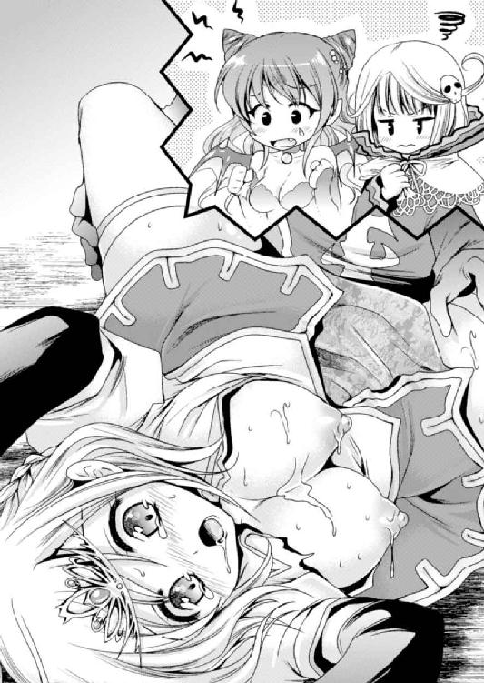
ぶちゅっ！ ずにゅるる、ぐぷぷぷっ！ ずちっ、くちゅっ！
腰を押し出すという行為だけが頭を支配し、肉体的な昂りはますます募る。
「んくっ、ふぅ、はぁ......ああっ！ 今のリオンちゃん、すごく、んんぅっ！ 男らしいよ......。こんなに硬くて、こんなに力強い......っん！ ひぅぅっ！」
「は、恥ずかしいって......。でもセリアだって、こんなにいやらしくて、こんなに可愛かったなんて......。うっ、吸いついてくる......！」
幼馴染み同士、それまでの十数年ではあまり触れることのなかった新しい面を見て微笑みを交わしつつ、照れながらも快楽をむさぼる。
「あんっ！ ねぇ、そこ......ぉ！ リオンちゃん、もっと触ってぇ......！」
すでにセリアも出来上がっていて、ついさっき処女を失ったとは思えない乱れよう。リオンの動きにぴったりと腰の動きを合わせ、嬉しそうに相手を引き寄せる。
応じてリオンもクリトリスを押さえ込む。挿入のタイミングに合わせて愛液まみれの親指で擦り上げ、抜き出すタイミングできゅっと軽く押し込んでやる。
「ひぁっ！ あはぁ、あんんっ！ すごいよぉ、リオンちゃん！ 私っ、初めてでこんなになって......はふっ、うううんっ！ 恥ずかしいのに、嬉しくて......！」
ぽーっと頬を染めてうっとりとした表情に確かな歓喜を浮かべ、セリアはぎゅっと抱きついてくる。それを抱き締め返して、リオンも腰を振りたくった。
リオンは最後の瞬間に向かって一段と抽送のスピードを上げた。彼女の太腿をしっかりと両手に支え、トドメとなるピストンを開始する。
ぐちゅうっ！ ぶちゅ！ ずちゅっ、にちゅ！
二人が繋がる部分で愛液は溢れるほど。卑猥な音が牢獄の狭い空間にけたたましく鳴り響き、ますます二人は昂りを増していく。
「ひあぁっ、はぁ、あうっ！ くふんっ！ 気持ちいいよぉ......はうっ！ リオンちゃん、リオンちゃんんんっ......！」
セリアの喘ぎは熱を持って、それに応えるこちらの動きもどんどん激しく。
ずぷぷ......ずちゅううっ！ ぐりゅううううっ！
セリアの腰を固定してごく浅い突き込みを繰り返していたのを、一転して深いストロークに変える。身体ごと押し込むようなリオンの動きに、セリアは大きく背を反らして、惚けた表情に期待を滲ませていく。
「あはぁ、ああ！ 一番奥まできてるぅ......っくはあああっ！ ひんっ！ あっ、んんんっ！ すごひっ、んふっ！ ふぁ、あああぁぁぁっ！」
がくんがくんと身体を跳ねさせ、セリアの瞳が虚空に漂い始める。
（くぅぅ......も、もう少し！）
そこから彼女が絶頂しかかっていることを悟ったリオンは、最後の力を振り絞った。
ずちゅっ、ぼびゅっ！ にゅぶぶぶぶっ、ずちちちっ！
「ああっ！ ひっ、わたしっ、あっ、ふぁああんっ！ イッ、ひゃうっ......きもひっ、ああぅ！ 気持ちいいっ！ ああっ、リオンちゃあああんっ！」
絶え絶えの言葉で自分がイキかかっていることを伝えてくるセリアの呼吸に、最後の突き込みがタイミングを合わせる。
「俺もいくぞっ！ もうすぐ出るっ、もう......くうううっ！」
「きてっ！ あああっ！ リオンちゃんんんっ......！」
一気に抜かれたペニスが弾みをつけて押し出される。ぐちゅぐちゅに濡れほころんだ膣内を走る肉棒に、痺れるような感覚が迸り......。
一瞬、セリアが動きを止め、最奥に亀頭が突き当たった瞬間。
「ひぃあぁぁっ、出てるうっ！ リオンちゃんのっ......！」
どぴゅぴゅぴゅっ！ どくどくどくくくっ！ どぴゅるるるうっ！
次々と押し出される精液の流れに身体の内側を叩かれ、セリアは目を見開いて叫ぶ。
「私っ、イッちゃうっ！ くっ、ひぃあああああああああっ!! イクぅっ、あ、イクうううっ！ ひはぁあああぁぁぁぁっ......！」
ビククッ！ と身体を跳ねさせ、盛大な嬌声を迸らせて。
「あはぁ、あ......うぅ......」
絶頂したセリアは意識を手放し、ゆっくりと目を閉じていった。
※
全身から脱力してへたり込んだリオンから、勇者の力が消えていく。
『っふ。はぁ、はぁ......リオン......』
それと同時にぼんやりした思考が届けられた。
「あ......。パ、パンドラ......？」
ようやくそれに気づいたリオンがハッとする。ずっと話しかけられていたようだけれど、いつからだろう......というか、すべて見られているんだった。
（やばい！ すっかり忘れてた！ お、怒られる！）
さーっと血の気が引いて真っ青になるリオンに、しかし魔王の娘の声はたどたどしい。
『こんなの、っん......ひどい。やめなさいって言ったのにぃ......』
「ごめん！ あの、なんていうか、もう辛抱たまらないって感じになっちゃって......」
「浮気はダメ！」 なんてさんざん言われていたのに、ついついセリアに対しての情動を解放しちゃいました、なんてのは言い訳にもならない。
なのに、どうも様子がおかしい。
『はぅぅぅ......。男の人って、こんな感じなのね。なんだかまだ股間のあたりがムズムズしちゃって......気持ちよかった......』
「は？ 股間のあたりって......？」
そこで思い出した。憑依状態にあると、リオンの感覚を少しはパンドラも感じ取ることができる。さっきまでのように完全制御下にあればなおさら。
その感覚的共有が、勇者の力で彼女の制御をはね除けたあとも残っていたのかもしれない。つまり、セリアとエッチなことをした感覚が共有されていて......。
『ね、もうちょっとしてみて？ 男の人ってあっという間に感覚が消えちゃうから、もう少し余韻を楽しみたいの。ね？ いいでしょう？ わたし大人しくしてるから』
「な、なに言ってんの!? それってつまり、セリアともう一回、ってコト!?」
いつもといえばいつものことだけれど、妙な流れになってきた。身体の制御を奪うことは諦めてくれたようだが、そんなおねだりをされても困る。
「それはさすがにちょっと......ほら、セリアなんて気を失っちゃってるし」
女騎士は絶頂の衝撃に放り上げられたまま倒れ伏している。それを襲って勝手にコトを進めるのはいくらなんでも気がひけるというか。
「とにかくそれはだめ。さっきのことは謝るけどさ......」
『なによ！ わたしの言うこと聞かないで浮気したくせに......ううっ、そんなにその女が好きなんだ！ もう怒った！ リオンのバカバカ！』
ぎゃーぎゃー騒ぎ始めてしまって頭の中が騒音に満たされる。なんとなく許してくれそうな雰囲気だったけれど、ちょっと失敗しただろうか。
（でもやっぱり、倒れているセリアを無理やり......なんてのはなぁ）
『ならいいわよ！ ノーラに頼むから！』
突然、パンドラが宣言する。
「え？ 頼むって、なにを......？」
そういえばノーラはどこに行ったのだろう、と周囲を見渡すと。
「............（じーっ）」
放置されて存在を忘れられていた水の四天王は、膝を抱えて部屋の隅にちょこんと座っていた。相変わらずの無表情なのに、しょんぼりしているのがありありと伝わってくる。
「うっ！ ノ、ノーラもごめんな。べつに忘れていたわけじゃなくて......」
実際に忘れていたけれど、それはさておき慰めようとしたのだが......。パンドラからなにか思念が飛んだのか、ノーラはこくりと頷いて杖を手にする。
「え、なにをするつもり......お？ いあああっ!?」
もぞりと変な感覚が起こったのは自分の下半身だった。
「な、なんだこれええっ!?」
むずむずっとした感覚と共に、陰茎がズルリと伸びた。
勃起したわけではない。射精を終えて力を失い、だらーんとだらしなかった肉棒が、そのまま長さを増してぼとりと床に落ちた。そこから地を這うようにウネウネと。
「な、なんの魔法だよっ！ ちょっ、気持ちワルっ！ やめてくれええっ！」
リオンにやる気がないなら無理やりにでも......ということだろうが、いくらなんでもペニス触手化は勘弁してほしい。
必死の形相でノーラに駆け寄るリオン。その逆方向、セリアの方へとペニス触手はウネウネと伸びて。やがてセリアの足にずるりと頭を乗せた。
「はぅ......！ や、やめようぜ、こんなの。な？」
感覚はそのままなので、太腿を這う亀頭が裏筋をすりすりと擦られて気持ちいい。射精直後の敏感ペニスを持てあまし、リオンはぞくりと震える身体をすくめてしまう。
『知らない！ 自業自得でしょ！』
ノーラのスライム触手よりもよっぽどグロテスクな触手。それがセリアの股間を目指して突き進む。このままではパンドラの思惑通り、勝手にセリアを犯すことになる。
「ぜっ、絶対にダメ！ 頼むから元に戻してくれって！」
叫びながらむんずとペニスを掴んだリオンが、糸巻き車のように腕にペニスを巻きつけ、ぐるぐるぐるぐるとたぐり寄せる。しかし触手も負けじとどんどん伸びまくり、気づけば薄暗い牢獄の中にシュールな光景が広がっていた。
（お、俺はいったいなにをしてるんだ!?）
自分でも情けないけれど、さりとてどうすればいいというのか。
「んっ......うぅ？」
セリアが騒がしさに目を覚ましたようだ。
「あっ、セリア！ ちょうどよかった！ 早く逃げろ......！」
しかしそんなふうに都合よく事は進んでくれない。
「んんっ......あ、あれ？ 私、なにをして......？」
完全に意識を飛ばしていたセリアは寝ぼけたようにまぶたを擦り、少し遅れて、自分の股間に感じるもぞもぞした感覚に気づいたようだ。男性器の形をした蛇のようなものがまとわりついていることに、一瞬だけ目を丸くして、
「ひっ！ ば、バケモノっ！」
びっくりして手で払いのけた。しかもそれだけならまだしも、とっさに伸ばした手に愛剣を掴んでしまっていた。
あとは戦士の本能が勝手に身体を動かす。
すっぱぁぁん！ と小気味よい音と共に、抜き身の剣がきらめいた。
『あ......』「あ......」「あ......」
パンドラとノーラとリオンの声がぴったり重なる。
「っぎゃああああああ！」
そして次の瞬間、リオンだけがその場でもんどり打って倒れ込んでいた。魔法が消えてしゅるしゅるっと元の大きさに戻っていくペニスがその股間に収まる。
「え......？ リオンちゃん......？」
そしてようやくセリアも気づいた。股間を押さえて悶絶している幼馴染みに。
「ど、どうしたのっ!? いったいなにが......！ 誰がこんなひどいことをっ！」
駆け寄って慌てる女騎士の傍らに、ぼわわんっとパンドラが姿を現す。痛みのショックでリオンが気絶したからか、分離してしまったようだ。呆れたように口を開く。
「それ、あなたのせいなんだけど......」
「えっ？ ............まさかさっきのっ!?」
事情がよく分からないなりに、さっき自分が斬り落としたものとリオンの股間を見比べて。セリアの顔がくしゃっと崩れる。
「わ、私が......？ ごめんなさいリオンちゃん！ は、早く手当を......」
リオンに寄り添ってうろたえまくりのセリア。
「まったくひどい幼馴染みね。勇者様のオチンチン斬っちゃうなんて」
それを見下ろすようにパンドラは腰に手を当て偉そうにふんぞり返って。容赦がない。
「うう......だ、だって......」
「だってもなにも、事実としてリオンを斬ったのはあなただし......」
パンドラはここぞとばかりに魔王の血筋を発揮して意地悪くチクチク責める。
が、それに耐えられるほどセリアは強くなかったようだ。なにしろ騎士とはいえまだ若く、職務に就いていない時は普通の女の子。
「ぐすっ、うぅ......ごめんなさいリオンちゃん......ごめん......ううぅぅ」
ついには泣き出してしまった。
「な、泣くことないじゃないの......。わたしが悪いみたいじゃない」
それでパンドラも後ろめたくなってしまって、それ以上のイジワルが言えない。
シーンとした空間にシクシクと啜り泣きだけが響く。
「あーもう！ 泣かないでってば！ それくらい放っておいても治るわよ！ わたしが守護して四天王の力を与えてるんだから！」
我慢できずにパンドラが声を張り上げる。
「え......本当に？ で、でも、大事な場所なのに後遺症が残ったりでもしたら......」
守護だの四天王だの言われても、詳しく知らないセリアは心配でしょうがないらしい。
「いざとなれば、魔族の知識でなんとでもなるわ。人体合成手術でそこだけ魔族化しちゃうとか。お父様に頼んで降魔儀式で魔族の一員にしてもらえばついでに治してもらえそうだし......いくら勇者でもそれなら本当の魔族になれそうな気がするしね」
「リオンちゃんが魔族に......？ そっ、そんなのダメえっ！」
「どうしろっていうのよ......」
話が進まない。十中八九はなにもしなくてもそのうち治るだろうし、もう放っておこうか、とパンドラが思ったところで......その耳元にノーラが囁いた。
「............ええ～？」
なんだか不満げにそれを聞いていたパンドラは、考え込むように腕を組み、あーでもないこーでもないと首をひねって「むー」としばらく唸ってから。
「でも......いい考えかもしれないわね」
呟いてなにかを決意した。
セリアの方を向いたパンドラは、にっこりと笑っている。
「ねえ、こういうのはどうかしら？ あなたが言うことを聞くなら、リオンの傷が簡単確実に治る魔界の特効薬を取り寄せてあげてもいいんだけど......」
パンドラの言葉に、セリアは泣き濡れた顔を上げる。
「それって......」
「まあ、交換条件ってことよね」
ふふふ、と笑う魔王の娘。
その微笑みは邪悪というよりも、むしろいたずらっ子のように見えた。
なにか小さな音がしてリオンは目を開けた。
「よかった。もう起きられるみたいだね」
「んー......あれ？ セリアだ」
目を擦ってぼんやり呟いてから、今まで自分が寝ていたことに気づいた。
（うぅ、頭がぼーっとする......。寝すぎたかな）
気だるい感覚に悩まされながらベッドに身体を起こし、あらためてセリアを見る。
いつもの騎士姿がドアを閉めていた。ちょうど部屋に入ってきたところらしく、自分はその音で目覚めたらしいが......。
「パンドラさんとノーラさんは食事中だけど、リオンはどうする？ まだ食欲はない？」
「うん、食欲はない......かな。でも、なんでセリアがここにいるんだ......？」
目の前にいるセリアと自分の記憶がうまくつながらない。しかも夜のようだし......。
「三日も寝てたしね。でもそろそろ起きた方がいいかも。傷は治ってるんだし」
「え!? なんで三日も？」
驚きが一気にリオンを覚醒させる。記憶が押し寄せるように頭の奥から溢れてきて。
「ああああっ！ そういえば！」
慌ててシーツを引き剥がして自分の下半身を見た。
「あ、れ......？ 普通だ......なんともない......」
それどころか元気に朝立ちしている我がムスコを見て、しかしリオンは、ほっとすると同時にますます混乱してしまった。
「パンドラさんが魔法薬を使って治してくれたの。その副作用で三日も寝てたけど」
「......そういうことか」
最後の記憶はあやふやだけれど、セリアに斬りつけられたのは覚えている。それきり気絶してしまった自分は、ここで治療されていたというわけか。
「............」
所在なげにベッド脇にたたずんでいたセリアが、顔を逸らして目だけでチラチラとこちらを見てくる。
「な、なに？ ってああ！ これか！」
引き剥がしたシーツを手元にたぐり寄せる。リオンは素っ裸だった。
（そういえば、セリアとしちゃったんだっけ......）
そこはハッキリ覚えているし、よく考えたらセリアと顔を合わせるのはそれ以来のこと。こうして意識してしまうと、なんだかとっても気まずい。
──そういえば、他にもしっくりこないことがある。
「でも、なんでセリアがここに？ 三日もあったら逃げちゃえばよかったのに」
この気まずさをごまかそうと、リオンがそれを質問すると......。
一転してセリアが真正面に顔を向けてきた。細い眉が吊り上がっている。
「はあ!? リオンちゃん、そういうこと言っちゃうの!? し、信じられない......」
「うわっ！ ごごご、ごめん！ よく分からないけどごめん！」
わけも分からず謝るリオンに対し、セリアは険しい青の瞳をじーっと向けて。やがて「はぁぁぁぁ......」と諦めの溜め息を漏らした。
「ま、寝てたから分からないだろうけど」
（なら怒ることないじゃないかよ......）
どうも寝ていた三日間になにかあったようだけれど......ちょっと考えてみてもさっぱり分からない。ここにいるってことは、いまだに囚人扱いってわけでもなさそうだし。
「......に、なったの」
「ん？ なにか言った？ よく聞こえない」
セリアには珍しく歯切れが悪い。しかも、それを聞き返しただけなのに責めるようなジト目の眼差しが降ってきた。
セリアはそこでもうひとつ、今度は短く大きなわざとらしい溜め息。ようやく口を開く。
「あのね、私、四天王になったの」
「............」
リオンはぽかーんとして、硬直したまましばし魂を飛ばしてしまい。セリアが目の前でぱたぱたと手を振ってくれて、ようやくこちらの世界に戻ってこれた。
「はあああああああああ？ どういうこと!?」
自分でも意識せずに、ずいぶん大きな声を出してしまっていた。
それでセリアはますます説明しづらそうに視線を泳がせ、ちょっと不満げに唇を尖らせたりしながらも、ゆっくりと説明を始める。
「だからっ、四天王の一員になったの！ パンドラさんと取り引きして、リオンちゃんに魔法の特効薬を使ってもらう代わりに空いた四天王の座に就くことに......」
「いやいやいや！ 四天王って！ だいたいそんなにすぐなれるもんでもないし！ セリアは知らないだろうけど、四天王には属性ってものがあってね。たとえば俺はすごく苦労して闇属性の守護者であるパンドラと契約して......」
ちょっと話を盛ってしまったが、まあ苦労したことに変わりはない。
「知ってるわよ、私だって試練を受けたから。光属性の精霊の試練」
しかしセリアはあっさりと言ってくれた。
「光......属性？ それは、また、なんとも格好いい......じゃなくて、えええ？ 本当に？」
「本当よ。精霊と戦って力を認めてもらって......。この鎧だって、その守護によって復元してもらったものだし......」
そういえば、パンドラ操るリオンに破壊されたはずの鎧一式が新品同様。どうせなら他のデザインにすればいいのに、以前と同じ騎士鎧を選ぶあたりがセリアらしい。
（ま、まあ......セリアは強いし、まともな手段で試練をクリアできそうな気もするけど）
それにしたって光属性。魔族の仲間なのに光っていうのも違和感があるし、勇者の自分が必死こいたあげくパンドラに出会う幸運に恵まれてようやく闇属性ゲットなのに、セリアはなんだか簡単そうに光属性ゲット......。
「そ、そう......。ふーん、セリアも四天王にね......」
なんて気の抜けた反応しかできないが、それだって仕方ない。まさか騎士道まっしぐらな感じのセリアが四天王になるなんて思いもしなかったし、それは自分だって同じだけれど、だからこそ変に共感できてしまう部分もあるというか。セリアにそんなことさせてしまって悲しいような、同志を得て嬉しいような。とにかく複雑だ。
「なにその反応？ 言っておくけど、リオンちゃんを助けるためだったんだからね！ パンドラさんは放っておいても治るって言ってたけど、大事なところなのに自然治癒に任せて後遺症でも残ったら大変だし......！」
「うわわっ！ あ、ありがとう。感謝はしてるよ!? すごく！」
「本当に？ 感謝してるの？」
「してるって！ 正直に言うと、セリアが仲間になってくれて心強いし！ ほら、放っておくとパンドラ達が人間と戦おうとしたり無茶するから、それを止められる味方が欲しかったんだよ！」
「それなら、いいんだけど......」
なんだか妙なことになったものだ。なんて思いながらリオンが頭を掻いていると。
「じゃ、見せて」
「んん？ なにが？ 誠意？」
セリアがずずいと身を乗り出してきた。なんだか顔を赤くしている。
「本当に治ってるか、見せて」
それってもしかして......と確かめる間もなく、シーツが引っぺがされてしまう。
「うあっ！ セリア、なななっ、なにをするんだよ！」
「だって、特効薬とは言っても魔族の薬だから。人間に使って変なことになってないか、見た目だけじゃなくてちゃんと確かめないと分からないでしょう......？」
「見た目だけじゃなく？ それはつまり、その......」
「私が触って確かめてあげるって言ってるの！ か、感謝してよ？」
いきなりベッドに乗ってきた彼女はリオンを仰向けに押さえつける。顔を真っ赤にさせているくせに、眉を吊り上げて怒っているような表情。
「ちょ、ちょっと怖いんだけど！ な、なんかいつもと違うっていうか、セ、セリアはこんなコトしない！ ま、まさか魔物が化けて......!?」
「んもう！ 私はもう四天王なの！ 悪の四天王なんだから、こ、これぐらいのことは普通なのよ！ リオンちゃんだって、パンドラさんとかノーラさん相手に、いろいろ......し、してるって聞いた！ 不潔！」
「ぐあああっ！ パンドラめ余計なことを......！」
できれば秘密にしたかったことをズバリと言われ、浮気を咎められるような雰囲気に。
「私だって......もう我慢しない。なにしろ四天王にまでなっちゃったんだから......！」
朝立ちしていたペニスは半萎えにまで戻っていたのに、セリアから掴まれるとほぼ同時、新たな血流が生まれる。四天王になってから頻繁に使っていたムスコだから、この三日間構ってもらえず拗ねていたようだ。異様に力をみなぎらせている。
リオンの腰にまたがったセリアが前屈みに覆い被さってきて、やや乱暴に唇を押しつけられた。しかしセリアはうまくキスできないのか、唇を擦り合わせるだけ。
（もしかしてパンドラ達に嫉妬して？）
性行為の経験値が圧倒的に不足しているセリアがこんなにも必死になってアピールしている理由というと、それくらいしか思いつかない。
「あっ、あの......うまくできない......」
そんな彼女からなんとなく気落ちした感じに呟かれてしまって、
「んっ......あ。リオンちゃん......」
思わず口を開けてこちらから舌を突き出していた。
ようやく余裕を取り戻したセリアもそれを受け入れる。にちゃにちゃと舌が擦れる音を響かせながら、リオンもだんだん収まりがつかなくなっている自分を感じていた。
（ああぁ......まさかセリアにこんなふうに迫られるとは）
興奮したリオンが口腔に舌を突き込むと、彼女はわずかに目を細めてちろちろと舌先を合わせてくる。ぞくりとする快感に夢中になって唾液を吸い、そのままぷちゅぷちゅと卑猥な音を鳴らして、こわばっていた身体から力が抜けてきたところでようやく舌を抜いて解放。恥ずかしくてなかなか目を合わせようとしないあたり、確かにセリアだ。
それでもじーっと見つめていると、なにか決心したのか彼女の方からもぞりと動いた。
彼女の着ている装備一式が、それが守護聖霊によって与えられたものであることを証明するように消えていく。セリアは自ら胸に手を伸ばし、インナーの服をはだけた。
「えーっと、セリア？」
「いいから！ ま、任せて。ここの様子を、確かめなきゃいけないの......」
言いながらセリアは身体をずらし、リオンの下腹部で天井を見上げる男性器へ。四つん這いの胸にたぷんたぷんと揺らされる、丸く張りに満ちた柔肉が目に眩しい。
手を伸ばしてグニグニと弄びたくなるのを我慢して見ていると......その二つの肉果実が股間へと着地した。重みのある柔らかさに男性器が埋まってしまう感覚......。
「あっ......これは。あうぅ、セリア、柔らかい......」
谷間に埋まってぷにゅんぷにゅんと圧迫されているペニスから、もどかしさが沸き上がってくる。それをどうにかしてほしくて思わず呼びかけると。
「ああ......リオンちゃん、ごめんね。私がここを斬っちゃったんだよね......」
戸惑う視線で胸の谷間から突き出た亀頭を見て、それから控えめな上目遣いにリオンの顔を見て。セリアが申し訳なさそうに謝ってきた。
「もうそんなことはいいから。それより......う、動いて」
「なによ。せっかく謝ってるのに......リオンちゃんてホントにだらしないんだから」
ブツブツ言いながらも、求められたセリアは嬉しそう。さっきより淡く上気した頬の色を少しだけ濃くして、乳房の両側に手を添えて呟く。
「えと、うまくできなかったらごめんね？」
亀頭やそのくびれ、血管の浮く肉茎に沿うようにして、柔肉がぴとっと密着。セリアが手を動かすと、ぐにゅっ、むにゅっ、と心地よい圧迫感でもみくちゃにされて......。
拙い動きではあるのに、やや乱暴に擦りつけられる肉のすべりが染み入るような快感を生んでいる。ゾクゾクする感覚が股間に集まってきた。
こちらの反応を窺うように上目遣いを向けてきたセリアは、リオンの顔を見て嬉しそうに目を細め。おっぱいになめらかさを加えるべく、すっと舌を突き出した。
ちろっと亀頭の先端を舐めた舌が、そのまま鈴口にあてがわれて唾液を伝える橋となる。
「んふ、ちょっろ、しょっぱひ......」
「あっ、何日も寝てたから！ 嫌ならそこまでしなくても......！」
しかしセリアは軽く首を振るだけでそれを無視し、唾液を垂らしながら亀頭を舐める。
そういえば三日も寝ていた間の下の世話はどうなっていたのだろう。なんとなくだが、セリアを見ていると彼女がやってくれたんじゃないかという気がした。
（ちゃんと治ったか様子を見るなんてのは、やっぱり口実だよな）
鼻先に揺れる亀頭をぽーっと見つめて、ちろりちろりと控えめな舌の動きを繰り返しているセリア。犬が主人に甘えるようなひたむきな表情だ。
「んっ、ちゅ......れろぉ......これくらいで、どぉかな......？ ぷちゅっ、にちゃ......」
トロトロと唾液を垂らしていく肉棒の左右から、それを塗り広げるようにむにゃりぐちゅりと揉み込まれる。途端に乳肌が吸いついてきて、ペニスはびくんと激しく反応。
「うあっ！ セリアぁ......。すごいな、ぷにぷにの張りが......！」
「そっ、そうかな？ そんなに気持ちいいの？ ちょっと嬉しい......」
少し照れて嬉しそうに、セリアの手が乳房を挟み込む。
張りがあって丸い印象の乳房が扁平に潰れて、合わされて、それだけでもいやらしいのに。にちゃにちゃした心地よい摩擦と音が押し寄せる。
にちゅっ、くち......ぃ。ずりゅっ、ぷぢゅ、みゅちちちっ......。
「私もなんだか、こうしてると気持ちいい気がする......それにこの匂い......」
亀頭を見つめて呟くセリアは、すんすんと鼻を鳴らしてぽわっとした表情。
「うっ、三日分だからくさそうだな......」
「ううん、あんまり......。なんだかこの匂い、好きになれそうなくらい......」
そう言いながら、とぷとぷと溢れてくる先走りを舌先に掬う。あんまり熱心に舐めているものだから、口の端からは唾液が溢れていやらしい表情を作ってしまっている。
「セリアがいやらしい顔してる......」
「そっ、そんなことは......ないわよ。んっ、ちゅぱっ！ これは......ちゅ、にちゃ......ぷ。ここがちゃんと治ってるか、確かめてるだけだし......っ、はぁ......」
そんなことを言いながらもセリアの瞳はペニスから離れず、鼻先でつんつんと亀頭をつつきながら舌を伸ばして先走りを掬い。濃くなってきた精の匂いに鼻をひくつかせる。
鈴口に触れられてリオンがぴくっとしたのを感じ取ってか、何度も何度も。次々に滲み出てくる先走り汁がピチャピチャと猫のような舌使いで舐め取られていく。
「くぅ......！ あ、あんまりそこをいじられると、で、出ちゃうって！」
「いいよ、出してみて。ちゃんと、出るところも見てみたい......」
射精が近いことを告げた途端に、むしろセリアは責め立てる動きに変化。手の動きと舌の動きはバラバラだが、その分、それぞれが激しく動きまくる。
肉棒の先端を舌で集中攻撃されながら、その下では乳肉がずりゅずりゅと気持ちいい摩擦。唾液や先走りでぬるりとした感触へと変化した乳肌に擦り上げられる。
「ふあっ！ 擦れちゃうっ、んんっ......！」
ペニスの血管をかすめてその乳首がぷるっとひしゃげる。自分でやったくせにチリチリとした感覚を走らせたセリアが、肩を跳ねさせて切なげに瞳を揺らした。
「はぁ......っ。やっぱり、気持ちいいのかも......はぁ、はぁ、んふっ......！」
そして夢中になって自分の胸をぐりぐりと押しつける動き。
今度は自分で乳首の位置をずらし、亀頭のくびれにあてがうように。その段差にコリコリした感触が何度も何度も押しつけられた。
「うおっ！ そ、そんなにしたらっ......わ！ くううっ！」
さすがにリオンも余裕をなくし、ムズムズした感覚に後押しされて小刻みに腰が浮いてしまうのを止められない。
ひくっと持ち上がる腰の動きに合わせてパイズリの圧迫も変化し、セリアは自らの乳房を押さえ、柔肉で擦り上げるように上下させる。少しはコツが掴めてきたのか、セリアは舌と柔肉の双方で動きを合わせようと懸命になっていた。
にちゅっ！ ぷぢゅぢゅっ！ くちぃ......ぷちゅっ、にちちっ、くちゅ......！
息を乱し、上半身全体を揺らすように前に押し出して。ひたすらいやらしい音を奏で続けるセリアの瞳がどんどん蕩けていく。激しい動きに額にはうっすら汗まで浮かせて、しどけなく涎をこぼす口元を喘がせるたびに淡い吐息が溢れ出す。
「んっ......ふ。だんだんピクピクするのが、激しくなってきた......」
不思議そうに亀頭を見つめて、セリアのおっぱいがぎゅっと密着。その狭間をにゅるりと突き上げられたペニスが一気に張り詰めた。
すぐに射精する、と理解したわけではないだろうが、まるで舌を求めるように顔を突き出す亀頭をセリアはしゃぶりつくようにして唇で覆う。
そのまま舌先をぴちゃぴちゃと跳ねさせ、上目遣いでこちらの様子を窺った瞬間──。
「やばっ、でっ、出るっ！ セリアっ！」
自分でも唐突に訪れた射精感に慌てて口走ったが、「よけてくれ」と続けることもできずに腰が勝手に痺れを走らせた。
セリアが伸ばしていた舌が、鈴口をほじるようにズルリと滑った。
どぴゅぴゅうううっ！ どぷっ！ どぷぷぷぷっ！
「んぶっ、ふ......！ ひゃあっ!? うあ......で、出てる......！」
覆い被さる唇を押しのけるように白濁の奔流が起こる。さすがに驚きながらも、彼女はむしろ舌を突き出して垂れ落ちる白濁を支えるように裏筋へと沿わせてくる。
「リオンちゃんの......！」
セリアの眼前に噴き上がった精液が、顔を縦断するようにびちゃりと貼りつく。
ふるるっとセリアも震えてから、額をどろりと垂れ落ちてくる白濁に閉じていた目をゆっくり開けていく。顔面を流れていくねっとりした雫の感触まで味わっているようなうっとりした表情で、そのまま数秒ぼうっと呆けていた。
「これ、すごい匂い......。っあ......い、いやらしいね、リオンちゃんって......」
どっちがいやらしいのかと言いたくなるような、上気した虚ろな表情でそう呟いたセリアが......唇を乗り越えた白濁塊をにちゃりと潰す。
「甘いような苦いような......ヘンな味......」
どうやら生粋の魔族達とは感想が違うようだけれど。
「でも、リオンちゃん、こんなにいっぱい出したんだ......ちゃんと治ったみたいだね」
満足そうな呟きを漏らしたセリアは、そのままくたっとベッドに身を投げてこちらの隣へ身を横たえてきた。
見ている方が照れてしまうような照れくささと慈愛に満ちた微笑みを浮かべて、こちらの横顔をじーっと見つめてくる。
（なんだかこれは、恥ずかしい......。しかもこの流れ、おねだりされているような......）
ささっと目をそらしたものの、リオンの胸がドキドキと。
「ね？ リオンちゃん、ぎゅってしていいよね？」
らしくないことを言って抱きついてきたセリアに、不覚にもペニスが反応してしまう。
（柔らかくてあったかくて......、ああっ！ そ、そんなふうに足を絡めたら）
絡みつく足に太腿を撫でられ、密着した人肌の感覚にますます胸が高鳴ってしまう。
「そ、そういえば、パンドラも思い切ったことしたなあ。なんだかセリアのことを目の敵にしてた感じだったのに、まさか四天王に迎え入れるなんて」
「あ......。それはなにか考えがあるみたいだったけど......」
セリアもよく分かっていないようだ。照れ隠しになんとなく呟いた言葉は、自分でも「そういえばなんでだろう？」と思える疑問だった。
（いくら四天王が足りないっていっても守護者のパンドラにとっては関係ないし......。そもそもセリアとの仲を勘ぐってあんな尋問をしちゃうくらいだったのに）
しかもそのあとセリアとエッチしてしまったわけだし。浮気するなと騒いでいたパンドラが、そんなセリアを仲間にしたがるだろうか。
などと考えていると──。
「それはね、放っておいたらリオンがどっか行っちゃいそうな気配だったからよ」
突然の声が響いた。
「うわああああああああああっ！ パ、パンドラ!? いつの間にっ！」
開いたドアのこちら側で魔王の娘が仁王立ち。反射的にリオンはベッドで正座した。
「ええ、さっきからいたわよ。『ぎゅってしていいよね？』のあたりかしら」
「そ、そうですか」
ズンズンと足音を響かせてベッドの方へと向かってくるパンドラから、闇のオーラが立ちのぼっている。怖い。非常に怖い。
「そういえばノーラの時もこんなだったわね。まったく、リオンはホントに、勇者のくせに優柔不断で......わたしのことが一番好きなくせに、言い寄られると断れないんだから」
「うぐ......！ 情けない勇者でごめんなさい......」
まったく弁明の言葉もなく正座で居心地悪そうにもぞもぞ。
じーっとそれを見つめながらパンドラは無言のまま近づいてくる。
「............でも」
しかしその表情が、わずかにぽぽっと頬を染めた。
「わ、わたしはそういうところが好きだから、それはそれでいいんだけど......」
矛盾したことを呟きながら靴を脱いだ魔王の娘が、それをぽーんと放り投げた。そして一転して宣言するような大きな声に。
「でもね、だからよ！ あのままセリアを追い返してもよかったんだけど、それだとリオンがいつまで経っても人間世界に戻りたいって愚図りそうでしょ？ だからしょうがなく、セリアを囲うことを認めてあげたのよ！ 四天王になってもらえば一石二鳥だし」
「ああ......そういう理由で」
どうやらセリアはノーラに続いて愛人二号らしい。そして同時に、リオンに四天王として魔族側にいてもらうための人質ともいえる。
「でも、油断したわ......ちょっと目を離してる隙に先を越されてるなんて！ あれだけ！ さんざん！ 言っておいたのにぃ～！」
キッと睨みつけた視線はリオンの隣へ。
「そうだった......、かな？」
セリアが言葉を濁していかにもわざとらしく視線を逸らした。たぶん「リオンが目を覚ましても許可なく近づいちゃダメよ！」なんて感じのことを言われていたのだろう。
「むー！ わざとらしいわね......！」
文句を言いながらドレスの紐を解く。ぴったりと身体のラインに沿った黒ドレスがふわりと緩んで、その足下へとすとんとすべり落ちた。
ボリュームのある身体を引き締めてみせる黒い下着は股間にだけ。ボリュームのある乳房がぷるるんっとこぼれ出た。やっぱりこうして見るとセリアと比べても一段大きい。
（ってそんなことはどうでもよくて）
「あの、パンドラ？ さっきからなんで服を脱いで......？」
すでに状況を察しているリオンだが、一応の問いかけの言葉を投げてみる。
「セリアになんか負けられないからよ。ねぇリオン？ 胸だって大きいし、わたしの身体の方がいいわよね......？」
足下のドレスを払うように足を振って脱ぎ去り、パンドラはベッドに手をついて前屈み。むっちりした胸肉がぽよん、と弾んでこちらの視線を奪ったところで、耳元に息を吹きかけるようにそっと囁きかけてくる。
「なにしろお互い初めての相手だもの、ね？」
「あはは......そ、そうだったねー。でもどうかなー、よく分からないなー」
「リオンちゃんの、はじめて......」
隣からの責めるような視線と残念そうな呟きを意識して必死の冷や汗を掻くリオンにも構うことなく。パンドラの手が黒い下着に向かう。
「あの時のリオンは激しかったわー。いきなりわたしの部屋に忍び込んできて、力ずくであんなこと......。もう、リオンったら♪」
あることないこと言いながら、魔王の娘は下着を脱ぎ下ろしてしまった。
そしてセリアを押しのけるようにしてベッドの上へジャンプ。うおっ！ と慌てて手を出したリオンに抱き留められて、その胸の中へとすっぽり収まる。
困惑している勇者の股間に、白くて細い手が忍び寄ってきた。
（ううっ、どうせ俺に拒否権はないんだろうな......）
ペニスがきゅっと握られた途端、さっき射精したばかりのくせにむずっと腰の奥が疼く。数日ぶりの射精は済ませたものの、それでは足りないとばかりに血が集まってきた。
「リオン、わたし、本気だからね？」
「え？ 突然なにを......」
首にすがりつくパンドラに引きずられて身体が倒れ、ベッドに二人が寝転がる。
「本気でリオンのことが好きなの。ずっと離れたくないから、だからわたし、いろいろ頑張ってるんだからね？ でもリオンの方は......どうなのかしら？」
「あの......」
いきなり真顔になってじーっとまっすぐ見つめてくるパンドラ。黒い瞳に吸い込まれそうな錯覚すら覚えてしまって、リオンはまったく言葉が出てこない。
さすがに、これが真面目な質問だということは分かっていた。
（はぐらかすのはさすがに......。や、やばい、パンドラを見てるとドキドキする......）
正直、セリアのことが気になる。でもパンドラのことも同じくらい。
だからどう答えればいいのか分からない。パンドラにだってセリアにだって、傷つけてしまうようなことは言いたくない。
「俺......」
いくら頭を回転させても沈黙にしかならない。静けさが胸に痛くて──。
「はぁぁぁ......まったくもう」
その沈黙を破るような、突然の長い溜め息。漏らしたのは誰あろう、セリアだった。
「その人、わざとそんなこと言って困らせてるんだからね」
「......は？」
なんと言った？
「リオンちゃんがそういうこと言われたら適当にあしらえない性格だって、分かってて聞いてるんだから。そんなことだから、周囲にずるずる流されて四天王になんてなっちゃうのよね、リオンちゃんは......」
こめかみを押さえるセリア。
「あら。バレちゃった？ さっき二人がこんな雰囲気でいい感じになってたから、真似してみようと思ったのだけれど......」
ぺろっと舌を出したパンドラが抱きついてきて、ベッドの上をごろんと転がる。
仰向けで下になった少女を見下ろしたリオンは、ぽかーんとしたまま。
「たまにはこんなのもいいかと思ったんだけど......ねえリオン、ドキッとした？ わたしのこと、ますます好きになっちゃったかしら？」
むふふっと嬉しげに笑うパンドラを見て、ようやくリオンも理解した。
「でもあなたのこと好きなのは本当だもの。嘘は言ってないわよ？」
「ぐぐぐ......」
「きゃーっ！ リオンの目が怖いわー」
おどけたようにそんなことを言って、魔王の娘の手が伸びてくる。半立ちまでしぼんでいた肉棒が手の平にすっぽり握られ、リオンは呻きながら彼女を見下ろした。
「勝手に他の女に射精したイケナイおちんちんはこれ？」
急所を握られた途端、リオンの目が弱気に。
「ううっ、出したばっかだから、あんまり強くは......」
乱暴なことはしないと分かっているけれど、それをさておいても、びくっと腰がひくついてしまうような敏感な刺激が指で触れられただけで走ってしまう。
「でもここは、一回出したくらいじゃ足りないって言ってるみたい......。おっぱいで擦ってあげたみたいだけど、やっぱり相手の胸が小さかったからかしら？」
「.........む」
呆れて傍観者に回っているセリアの不満げな声。ぽつりと「たいして変わらないと思うけど」なんて呟きながら自分の胸を見下ろしているのを軽く無視して、パンドラはつーっと裏筋を指でなぞり上げる。
「くっ......！」
挑発されているとは理解していても、このいたぶるような刺激には逆らいがたい。痺れに似た快感がたちまち体中を走って、きゅっと握った手の平をペニスが押しのけていく。
（くくぅ......せめてここでだけは......！ ベッドの中でだけはへたれ勇者の俺だって負けないんだからな！ ......それ以外じゃ完全に尻に敷かれてる気がするけど、とりあえず今は気にしない......！）
仰向けパンドラの腕をガッシリと掴む。
その瞬間、リオンを試すような視線で見上げていたパンドラの瞳が、ふわっと嬉しそうに細められていた。
一から十まで見事に乗せられてしまったリオンを見て、セリアはがっくりと肩を落とす。
「まったく、パンドラさんはこんな勇者のどこが好きなのかな......」
そんな呟きを漏らすセリアの背後に人影。
どこからともなく現れたノーラが、げんなりしたセリアの肩にそっと手を置いた。
「............（こくり）」
「......うう。それは私も一緒のくせに、って言いたいんでしょ？」
ノーラはもう一度、「自分もだからよく分かる」と言わんばかりに頷いた。
※
セリアだけでなくいつの間にやら現れたノーラも見ている前で、すっかりやる気になってしまったリオンがおっぱいにしゃぶりつく。
喘ぐように上下する乳房を両手に支え、絞り出すようにして乳首を持ち上げる。すでにペニスをギンギンにしている勇者がそこをかりっと強めに噛んだ。
「ひあっ！ んっ、リオン、なんだか乱暴で......新鮮ね」
仰向けのパンドラはその頭を胸に抱いて、嬉しそうに目を細めてゆったりとした吐息を漏らした。ぎゅっと抱き寄せた顔面が豊かな柔肉に埋もれてフガフガしているが、構わずぎゅうぎゅうと押しつけて柔肉の海に顔を沈めてしまう。
「っぷはっ！ そんなこと言ってられるのも今のうちだからな......！ 今日は徹底的にやってやるぞ！」
やや脅迫めいた宣言をされたくせにパンドラは嬉しそうに微笑んでいる。
（くぅぅっ、み、見返してやる！）
鼻から口までをすっかり覆ってしまいそうな肉の海に溺れそうになりながら、リオンは右の乳房に唇をかぶせた。果実にかぶりつくようにして、薄いピンクの乳輪と、軽く歯形を浮かせている乳頭をじゅるじゅると吸い上げる。
「ふっ、んんん......！ はぁ、あぁあ......くすぐったい、っん！」
白い乳肉を唾液でびちゃびちゃにしながら、手の平で絞って周囲から柔肉を集めていく。
パンドラ特有の、どこまでも手を沈み込ませてしまいそうな柔軟なおっぱいだ。それをむにゅりむにゅりと、しごき上げるような手つきで揉み込み、逃げるようにたゆたう柔らかさを口に思い切り含んでズルズル舐めしゃぶった。
（うむ！ やっぱり、張りの強いセリアとは柔らかさの質が違うなぁ。パンドラのはこう、プルプルしてる中にむにむにした柔らかさがあって......）
顔面で感じる柔らかさと、さっき股間に感じたセリアの柔らかさとを比べてみる。
（でも優劣は付けられないし、そんなもの付けたくもないな。パンドラはどこまでも包んでくれる柔らかさがあるし、セリアはプリッとした感触が気持ちいい。ノーラだって手の平ですっぽり包めるくらいなのにプニプニだし......きっとそういうことだよな、うん）
なんだか悟ったような晴れやかな気分になって、リオンは左の乳房にも手をあてがう。
「ふあっ！ そんなに、乳首をクリクリしてたらっ......んんっ、はぁぁ......！」
こちらは指先に乳首を挟んで徹底的に転がした。柔らかさの中に押し込んで乳頭のてっぺんを指先でくすぐるようにしたり、挟んで持ち上げて、卑猥な形に引っ張られる乳房を横から舐めてみたり。これまでは反応を探りながらの愛撫が普通だったリオンだったが、今日はまるで自分のおもちゃを弄ぶように好き勝手に。
「ちょっ、あぅ！ リオン、ほんとに、なんだかいつもと違う......んふ！ あっ！」
リオンの頭を抱えた魔王の娘は、声を震わせて髪をかきむしってくる。
それでふと目を上げると、セリアとノーラがこちらを見ているのが目に入った。
二人ともちょっと不満げ。口がへの字になっている。
（うっ、でも我慢してもらおう......。今はパンドラへのお仕置きが優先だ！）
文字通り後ろ髪を引かれながらも、リオンは軽く歯に挟んだ乳首をチロチロと舌先でほじくる。ひくん、と跳ねたパンドラの背に押し出されて胸肉の海が波打ち、その先端を限界まで充血させている。
「はっ、あ！ んんっ、ふぁっ！ も、もっとぉ......！ おっぱい、吸ってぇ......っく、ふぁっ！ いいっ、んんんっ！ ジンジンして気持ちいい......！」
彼女の腕の力が緩んだので顔を少し離すと、両の乳房に手をあてがう。左右の脇の下から支えるように手を当てると、ずっしりとした重みが手の平を満たした。
仰向けで裾野を広げた、饅頭形にぽよんと広がった乳房。指を埋めてしまいそうなその柔肉塊を、パン生地をこねるようにもみくちゃにしてもみもみもみ。
それでいて左右の乳首を交互に甘噛みして、唾液を絡めるように吸い上げたり、わざと引っ張って揺らしてみたり。
「はぁ、はぁ......ふっ、あんっ！ リオン......？」
いつも主導権を握りがちな魔王の娘を今日はしっかり翻弄できている。その満足感を感じつつ、膝立ちになって仰向けの彼女の太腿を押し開く。
（もう充分に濡れてるけど......焦らしてみるか）
顔をズリズリと下げていって、代わりに少女の腰を持ち上げる。
「あっ、そ、そんなに......ぃ、わたしだってさすがに恥ずかしいんだから......！」
ようやく気づいたパンドラが慌てるが、構わず腰をぐいと持ち上げた。膝立ちの肩に太腿を引っかけて支え、彼女の上半身はそのままベッドに寝かせて。身体をほとんど逆さにされてしまった少女の秘所は、もちろんリオンの顔の前にある。
（そういや、こんなに近くでしっかり見たのは初めてだっけ......）
左右をふっくらさせた恥丘の中心には縦割れがあって、柔らかそうな小陰唇の存在をわずかに覗かせている。黒い恥毛はふわっと茂るばかり。そこは、いやらしさよりも楚々としたたたずまいを感じさせた。
身体を支えていて手は使えないので、そのまま荒々しく顔を突き出した。
伸ばした舌で秘裂を割り開くようになぞり上げてみると、つうっと糸を引く、粘度の高い透明な液体を舌先に感じる。にちゃりといやらしい音が響いた。
「ひっ、ん！ あうぅ......！ あんっ、わざわざ舐めなくても、わたしはもう......」
パンドラも、感じすぎている自分に驚いているのかもしれない。もう充分に濡れているから、と言いたそうだが、こちらとしてはもうちょっと焦らしてお仕置きしたかった。構わず舌を突き入れ、まだぴたりと閉じたままの割れ目を強引に押し開けていく。
「あぁう......っ！ くすぐったいよぉ......っは、うぅ、あぁんっ！」
いつもとちょっと違う戸惑うような声。やはり責められ慣れていないからか、好き勝手に身体をいじられることに新鮮な戸惑いを感じているようだ。
パンドラがもぞりと身悶えた瞬間、ぐちっ、と水音を鳴らして舌先が膣口に到達した。
（ホントだ、中の方はかなり濡れちゃってる......）
舌先を押し当てると、わずかに震えて反応する小さな穴。そこから粘液が滴ってきたので、それをさらに押し出すようにくにくにと膣口をつつく。
「ふんんっ、あぅ、やっ......あふっ！」
そのたびごとに、ひくっ、ひくくっと内腿が張り詰めて震えているのを横目に見ながら、リオンはさらに舌を押し出し、ついには膣口へと潜らせた。
顔が股間に密着し、鼻先にふわっとした陰毛がくすぐったい。パンドラの太腿がたまらないとばかりにきゅっと挟み込んでくる。
「リッ、リオンってばぁ......もう、んんふっ！ あひっ！ やっ、中を舐めちゃっ、だめぇっ、ふああっ！ ひぃ、あふはっ、はぁはぁ......！」
まるでリオンへと本気で懇願するように、頭を挟んだ太腿がぎちぎちに締めつけてくる。それで余計に顔を密着させることになるのに、珍しくパンドラはうろたえているようだ。
（ずいぶん感じてるなぁ......。愛液もどんどん溢れてきた）
陰茎と比べればずいぶん細い舌なのに、少し奥に入っただけできゅっと締めつけが強くなる。普段感じる以上に温かな粘膜をチロチロと蠢く舌先で掻き回すと、頭を挟んだ太腿がこわばるのがあからさまに分かった。
（じゃ、こっちを......この小さな突起を舐めちゃったらどうなるんだろ？）
ぬぷっと舌を抜いたリオンが少し上向きに。秘裂の上端に隠れている小さな肉豆に、ふうっと息を吹きかけてみる。
「やっ、んんっ！ い、今、なにを......っうんんんっ！」
そのまま舌を伸ばし、下から上へ、包皮ごと何度も何度も舐め上げた。
ちゅるっ、ぺちゃ、ぺちゃ、ぴちゅっ！
「ひぃっ......あ！」
短く叫んで身体がうねる。自分の顔面を隠しているおっぱいの隙間から、潤んだ黒い瞳が切なげに見上げてくる。
「ふあぁぁあっ！ だっ、だめぇっ、っくぅんんっ！ いやぁっ、そこばっかりぃっ！」
いきなり激しくなってきた吐息をかき鳴らして、パンドラは途切れ途切れの叫び声を上げてしまう。さっきまでと比べると明らかに切羽詰まった声だ。
「でも、もう少しで......届きそうな......」
舌だけで包皮を剥くのは難しいと見て、今度はむしろ舌先を包皮に潜り込ませるように突き出す。ぷにゅ、くりゅっ！ と敏感な部分を激しくつつかれて、パンドラは短い嬌声を連発しながら身体を波打たせた。
「ひゃうっ！ らめっ、ひあああっ！ そっ、そんなっ、んんっ！ イッちゃっ、ふぁああっ！ イッちゃうからぁ......！ はぁはぁ、くっ、ん！ しっ、痺れちゃうっ!!」
言ったそばからパンドラの身体が震える。逆さに流れた乳肉をぶるんと大きく揺らして身悶えては、身をすくませるように抱き締めてぷるるっと小さく痙攣。
（あ、もう？ でも、完全にイッちゃったって感じじゃないけど......）
パンドラは軽い絶頂の連続で意識をかき乱されているようだ。陰核をいじるたび脱力してダラリとしたり、足先をピンと伸ばして硬直したりを繰り返している。
「ふふーん。なるほど、これぐらい責めればパンドラも大人しくなるんだな」
恥裂はすでに充血しきってパックリ開いている。リオンはいったん舌を離し、そこをまるごとしゃぶるようにして口を押しつけた。
淫裂の内側も、膣口も、クリトリスも、顔を振るようにして激しく舐めしゃぶる。
ぶじゅっ、ずちちっ！ くちゅ、ぶちゅちゅっ！ ちゅぶぶっ、くちゅううっ！
ほわっとした陰毛も今ではべっとりと貼りつき、小陰唇のヒダは充血して秘裂を広げる。膣口はあとからあとから愛液を染み出させて、リオンの顔面をベトベトに。
「はひっ、んんんっ！ らめっ、そ、そんなにぃ......っく......ふうぅぅぅ！」
彼女は声と感覚を呑み込むようにぎゅっと唇を噛んだが、それでも喘ぎは止まらない。
「リオンっ、んんっ！ ひゃふうっ！ お、お願いだから、もぉ......んぅんんっ！」
見上げる視線がふるふると揺れる。
「パンドラってもしかしてＭ気質？ 責められるのがこんなに弱いなんて」
ちょっとイジワルっぽく言いながら、舌先を膣口の周囲にくるくる回転させる。
「ちっ、ちがう、うううんっ！ そんなわけ、ないじゃ、あんっ！ ないじゃない......！」
本人は否定しているけれど、どう見てもそんな感じだ。母性本能をくすぐられるのに弱い姫君だけれど、甘やかされて育ったせいか強く出られるのにも弱いらしい。
それならばもう少し試してみたいことがあった。
すぐそばでこちらを見ていた二人に目をやると......セリアもノーラも、さっきまではパンドラに抜け駆けされて不機嫌そうだったくせに、今ではすっかり惚けた表情。まるで自分が股間をいじられているかのように頬を染め、こちらの様子を窺っているようだった。
（よく見たら二人とも......自分でしてるのか？）
こっそりと、といった感じにそれぞれ手を股間に向けている。
それならばちょうどいい。すでに雰囲気を出している二人の手を借りることにした。
「二人とも、手伝ってくれ」
ぽーっとしている二人に顔を向けると、両名とも最初は不思議そうに首をひねった。
しかしすぐにノーラがこくりと頷き、セリアもちょっと拗ねたようながらも目つきは蕩けたままに這い寄ってくる。
「えっ!? やんっ、なんで......ぇ」
支えていたパンドラの腰を下ろすと、彼女からはそんな喘ぎ。実はもっといじってほしかったのか、あるいは他の二人を引き入れることに対する抗議か。前者であるならばその期待は裏切らないはずだ。すでにノーラの手が左の乳房に伸びていて......。
「おっきい......」
「あんんっ！ なんでノーラが、っふ、はぁぅ......舐めてるのよぉ......！」
自分の数倍はある柔肉をぐにゅっと掴むと、しこり立つ乳首を口に含んでいた。好奇心の強い四天王らしく、その感触やボリューム、乳首の硬さを確かめるようにじっくりねっとり。パンドラを支えるように横に陣取って顔を寄せる。
そしてセリアも、最初は戸惑っていたくせに結局うっとりした顔で乳房を手に取った。
「確かに大きい......それに、んちゅっ、こんなに柔らかいんだね......」
さっきさんざん比較するようなことを言われて気分を害しているかと思ったが、そんなことはなく。手の平にむにゅりと広がる重みを支えて、乳首へと軽いキス。
（うわ、二人ともすっかりその気だ......）
自分で誘っておいてなんだけれど、ノーラもセリアも持てあました自身の疼きをぶつけるようにここぞとばかりパンドラを責める。
「ひっやぁ......おっぱい、んあんっ！ ふぅ、はぅっ！ 二人とも、おっぱいいじらないでっ、っんんん！ ひぃっ！」
左の乳房が吸われたかと思えば右の乳房は絞り上げられ、それぞれ違った刺激が別のリズムでパンドラの乳房に襲いかかる。魔界の姫はその甘やかな痺れに惑乱してしまって、瞳をせわしなく揺らしていかにも弱々しい。
「ああっ、だめぇ！ リッ、リオンまで......っん！ あひぃっ！」
さらにリオンがほったらかしの秘裂へと手を伸ばすと、それがますます激しくなった。
さっきは完全に剥き上げることのできなかった包皮を押しやり、クリトリスをぬるりと優しく撫でただけで、ビクビクッと全身を突っ張らせて。
「ひゃあああああっ！ だめっ、そんなにたくさんされたらっ、っひ！ ひはぁっ、ふぅぅっ、あぁ！ おっぱいもっ、アソコもおかひくっ！ ひゃんっ！」
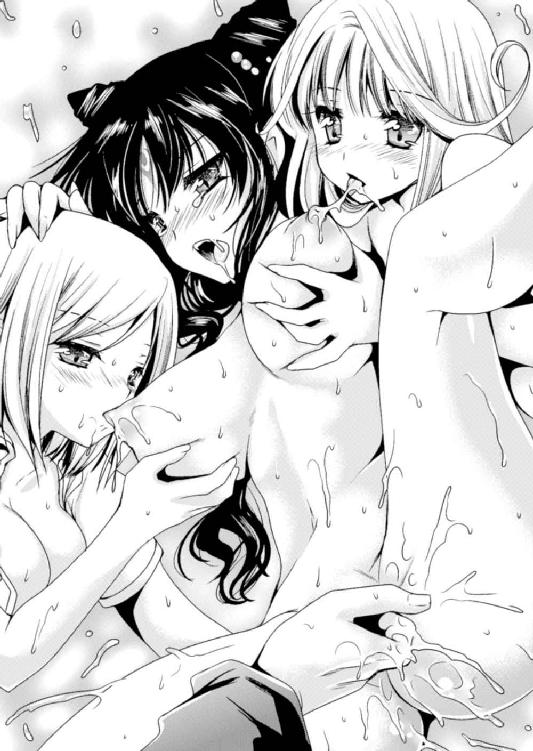
じたばたと暴れるように身体を揺らし、重量感のある乳房をたっぷんたっぷんと波打たせる。それを押さえ込もうとする左右の二人がますます身体を密着させて、女の子三人が絡み合うような卑猥な光景がリオンの前に広がった。
（こうしてると三人ともすごく仲良しに見えるな）
心の中に苦笑しつつ、膣口に中指を引っかける。小さな秘穴をグニグニと伸ばすように指を回して焦らしたあと、その中に突き込んで。膣口付近を裏側から押し上げる。
「あっ、ああっ！ ひっ、出ちゃううっ！ やんっ、はぅ......ううっ！ きもちひっ、リオンっ、あふうっ......！」
ぷちゅっと潮の迸りがあった。リオンの手に当たってお尻までびっちょりと濡らしていく液体は止まらない。余った指で陰核を撫で上げると、腰をびくんと迫り出すように跳ねさせて、そのたびごとにぴゅぴゅっと潮が噴き出す。
シーツにいやらしい染みが出来上がっても、三方からの胸や股間への刺激を甘受するたび、それは断続的に漏れ続ける。
かつて同じようにして潮を噴かされたノーラが、かすかに微笑して姫の耳元に囁く。
「恥ずかしい......漏らしてる」
「ちがっ、ひゃんんっ！ らめっ、止まらないよぉ......！」
身悶える姫君のおっぱいにセリアがしがみつき、生来の真面目さでひたすら乳首を甘噛みしている。パンドラはしゃぶりついてくる女騎士の頭にむしろしがみつくようにして、襲い来る官能の波にふるふると首を振っていた。
美しい黒髪が揺れるのを見ながら、リオンが奥に向かって指を突き入れる。
「はうっ！ はぁ、はぁ......三人がかりなんてぇ、うんっ！ っは、ひ、卑怯よ......リオン、なんとかしないさいよぉ......」
三者三様に責められて喘ぐパンドラは口を開きっぱなしで、涎を拭き取る暇もなく文句を呟く。そのくせ頬はぽーっと赤らめ、腰は指の侵入を求めるように迫り出されて、言っていることとはいかにも逆の行動。
「でも、ここにいるみんなは魔族の四天王だからなぁ......こういう時は邪悪じゃないといけないと思うんだよね」
いつかの意趣返しのようなことを言って、膣内の奥まった部分をくりっと擦り上げる。
絡みついてくる膣粘膜の壁が、にゅるんっと蠢いて激しくひくつく。
「あううっ、ひっ！ ふぅっ、らめぇ！ 今そんなとこっ、押されたらぁ、んんっ！」
またしても軽い絶頂の連続状態。イキたいのにイキきれないもどかしさに彼女の瞳が弱々しく揺れ、ぷるぷる震える足を大きく開いて持ち上げてくる。
背が反らされて持ち上がった柔肉の丘が、それぞれ執拗な舌によって蹂躙された。
ノーラが乳首を甘噛みしてコリッとした感触を引っ張り上げ、しがみつかれたセリアが顔を埋めるようにして唇を動かし、虚空を見つめるような姫の顔を窺う。
「パンドラさんって、プライドが高そうだったのに、ちゅっ、ぷ......意外と......」
「くっ、うぅぅ......ひゃんっ！ そ、そんなこと......言われたってぇ、ひゃふぅんっ！」
意図しての言葉ではなさそうだけれど、もっちりとした乳肉に吸いつかれながらの言葉はなかなかに鋭い。パンドラは悔しそうに細めた目を次の瞬間には頼りなく揺らして、
「はふぅ、おっぱひっ！ 引っ張っちゃ、だめぇ、んんんっ！」
もう一方のおっぱいが乳首を吸い上げられる感覚に悩乱する。
嬌声を上げて息んだ瞬間に膣内の指が締めつけられて、リオンは指をほとんど動かしていないのに、そこでまた潮がぴゅっと噴き出してシーツを濡らしていた。
（すごいことになってるな。アソコ、あんなに開いちゃって......）
指を抜いた膣口はぽっかりと開きっぱなしで、膣肉がその口で息継ぎするようにひくついて。左右に広がってぷりぷり充血した小陰唇が誘うように指にまとわりつく。
左右から二人の少女に責められ、蜜壺を指で犯されて、パンドラは無意識に股を広げて恥辱のポーズ。その身体はふるっ、ふるるっと細やかに震えていて......彼女もそろそろ限界なのかもしれない。
「やっぱりパンドラはマゾっけがあるよな。こんなふうに焦らされて、責められるとこんなになっちゃうんだから」
パンドラに覆い被さり、被虐感を煽る言葉を囁く。
「だってぐしょぐしょだよ？ すごい洪水を起こしてる......」
「くっ......うううーっ！」
リオンの言葉を皮肉と受け取ったのか、耳まで真っ赤にした魔王の娘が腕で顔を隠してしまう。そのくせ、大きく広げた膣口はヒクヒク震えて愛液を垂れ流し、もっと太いものを入れてくれとせがむよう。
トロリと流れ出た愛液は白濁し、彼女が感じている性感の強さを感じさせる。
「じゃあそろそろ入れようかな......」
聞こえよがしに囁くと、顔を隠した腕の隙間から姫君が睨んできた。
「あううううっ......リオンのばかぁっ......！」
かと思うと、いきなりがばっと抱きついて、もう逃がさないとばかりに腰に足を絡めて。
左右の二人を振り払い、ようやく捕まえたとばかりにぎゅっと抱きついてくる。
「そ、そんなにくっついたら動けない......」
「いいのっ！ んっ、リオンはっ、わたしの言うように入れてくれればいいのっ！」
荒らげた吐息混じりの声にこちらの要望は無視された。
もしかして感じすぎた顔を見られたくないのか、背中に腕を回してぴったり抱きつくようにしてしがみつき、腰に絡みついた足も挿入をねだって離れない。こちらの耳元を、「はふぅはふぅ」と荒い吐息が繰り返しくすぐってくる。
（しょうがないなぁ......俺もそろそろ我慢できないしな）
苦笑しながらリオンはずりずりと腰を動かし、パンドラのお腹のあたりに密着しているペニスを股間まで下ろしていく。
秘裂に亀頭がぴとっとくっついたところで、ようやく腰が少し離れてくれた。
他の二人は寄り添って腰をモジモジさせながら挿入の瞬間を見つめている。
うっとりと漏らされる二人の呼吸と、耳元に感じるパンドラの呼吸がシンクロして、それぞれ「んっ」と息を詰めた瞬間、
にゅぷぷぷ......。
ペニスが膣口をひしゃげさせるようにして奥へと侵入を始める。
「はぁんぅ......！ リオンのっ、んんっ、おっき......っう！」
「くうっ......！ ちょ、ちょっとパンドラ、これ、力はいりすぎ......あうっ！」
中はぐっちゅりと濡れていて挿入に不都合はない。
だが、まるで生き物のようにうねる膣粘膜があっという間に亀頭を包み込んできて、膣口付近が異様に狭く感じられる。
ぎゅうぎゅうと押し寄せる触手群に巻きつかれて動かせない錯覚に、リオンは腰に震えを走らせてしまいそうになった。
「だ、だってぇ......こ、こんなに焦らされたからっ......うんっ！」
しかも、足でしがみついて尻を少し持ち上げる感じになっているからか、括約筋が締まってまとわりつく感触を強めているようだ。
（こ、これはもう、このままいくしかない......！）
むずりむずりと腰に蠢く快感はリオン自身にも止められない。早くペニスのすべてを突き込みたくて、中を掻き回したくて、奥に吐き出したくてしょうがない。
にゅぶぶっ......ずりゅぶぶっ！
「入ってくるぅ、んっ！ こ、こんなにリオンのを感じるの、初めての時以来......っはぁ、んんっ！ なのに、気持ちいいのはいつもと違うのぉ。もっとすごく気持ちいい......！ 身体がふわふわって、ひぃああっ......！」
わずかに背を反らしてパンドラが切なそうに訴えてくる。ようやく見ることのできた顔は、唇をふるふると震わせて、眉尻を落として、まるで弱々しい小動物のよう。
「パンドラ......！ もう、動くっ！ 奥まで入れて、無理やりにでも動くからな！」
魔王の娘が喘ぐような吐息でこくこくと頷いてくるのを確認。
挿入角度が急なせいか、内部の柔ヒダをずりずりと擦っていく感触がある。それをこらえながら進むと、最奥部には子宮の感触。行き止まりになった壁を擦るようにしてマーキングして......ひと息に引き抜いていく。
「はふううっ！ あ......はぁ、はぁ......」
こちらの動きと呼吸に合わせるようにパンドラの呼吸も緩急が付けられていた。
ずりゅぷぷっ！ と膣口をめくり返す勢いで抜け出てきたペニスには、ねっとりとした本気汁が付いている。潤滑は充分、あとはもう本能に従うだけだ。
ぐりゅ、ずぷぷぷっ！ にゅっ、ずずずっ！ ぐぷぷ、ぷじゅっ！
「ひっ！ あふっ、うあ！ すごい、よおぉ......！」
パンドラはこちらの背に手を回し、腰に足を絡めてしがみついている。リオンはそのわずかに上向いた尻に打ち下ろすようにして肉杭を押し込み、そして引き抜いていく。
「すごいよぉ！ 奥にまっすぐ届くのっ！ んんっ、はぁ、あうううんっ！ お腹のなかっ、ひっ！ おくまでぇっ、あひぃぃぃっ！」
ストロークの長い抽送に二人の身体が激しく揺れる。ベッドが軋み、二人の身体に押し潰された乳房がはみ出んばかりになって震えている。
しかも激しく動いているせいで汗がたらたらと流れるほど。それが絡み合う身体によりいっそうの密着感をもたらしていた。特に豊かな柔肉がクッションのようになっている胸板はその感覚が強い。相手の心拍まで聞こえそうなほど密着し、柔肉をにちゃりと押し潰し、揺れ震えさせる心地よさに、全身で交わる一体感がどんどん高まってくる。
「ひはっ！ はぁ、リオンっ、んんんあっ！ もっと、っああっ、おま○こ、いっぱいしてぇ......！ 奥までぐりぐりしてぇ......！」
そしてパンドラの声や表情、おそらくは意識していないその言葉。
頬を淡い赤に染め、その瞳は潤み、開きっぱなしの口からはいやらしく輝く涎がこぼれていた。そして、性にオープンなパンドラでも普段なら恥ずかしがるような卑語を次々に漏らし、快感に背を押されるがまま自らの欲望を吐き出す。
（こんなにいやらしいパンドラは初めて見た......）
溶け崩れた表情は卑猥で美しく、喘ぐその声はさながら堕天使の囁きに聞こえた。
「ひあっ！ リオンっ、わたしっ、っはぁぁっ！ はぅ、イッちゃううっ！ もぉ、おかしくなるぅ......!! おま○こ気持ちよすぎて、おかしくなるよぉ......!!」
抽送のタイミングでぶじゅっと愛液がしぶいた。まるでお漏らしのようにベッドのシーツへと飛び散り、尻のそばを中心に点々とした染みを残している。
「うん、俺も......！ もう、パンドラの中に出したくてたまらない......！」
「出してぇっ！ リオンのせーしっ、いっぱいっ、いっぱ、あんんっ！ はひっ、はぁ、ひんんっ！ お、奥にぃ！ リオンの精液欲しいよぉ......!! 受精したいよぉ......!!」
受精なんて言葉を耳にして、リオンは腰が引けるどころか奮い立ってしまった。
「分かった。一番奥に思い切り注ぎ込んでやる！」
「うんっ！ おま○この奥にっ！ ふあっ！ 勇者のせーえき、濃いのいっぱい......ふっくぅんんっ！ い、いっぱい欲しいんんっ......！」
もうイク寸前らしく、しがみついてきた腕に力が入る。がっしりと絡みつけた足を揺らして腰をすり寄せ、何段にも締まりを作る膣内が波打つようにヒダを逆立てる。
リオンもここぞとばかりに力を振り絞った。ベッドに押しつけるように最奥部まで押し込み、ゴリゴリと掻き回したあと引き抜いて。
肉杭を失って空洞になった膣腔を──一気に貫いた。
「ひっ！ っあ......お、おま○こっ、イッ......！」
ずりゅりゅりゅりゅりゅっ！
挿入と同時に一瞬だけ喘ぎの止まったパンドラの身体が跳ね、股間から脳天までを衝撃が走る。ガシッとしがみついたその四肢に震えが走っていく。
「いひぁあっ......んんんんっ!! イッ、イッちゃ......ふううっ！ 奥にっ、ゴリッて当たってぇ......イッ、ひゃああああっ！ もぉ、もぉらめぇええぇぇっ！」
「くっ......！ 出るうっ！」
どぷ、ぷぷぷぷぷっ！ どびゅびゅびゅるるるっ！ どくっどぷどぷぷぷっ！
そのタイミングで射精が起こる。すでに痙攣を始めていた膣奥が白濁を浴びて、駄目押しとばかりにビリビリ迸った幸福感。パンドラは我を忘れて最後の嬌声を上げた。
「んはぁぁあうっ！ 一番奥うっ、出てるうっ！ リオンのいっぱい出されてっ、わたひっ、ひんっ！ あああっ！ おま○こすごぃっ、震えてっ、あああっ！ イッ、イッひゃうっ、イクううううううううううっ!!」
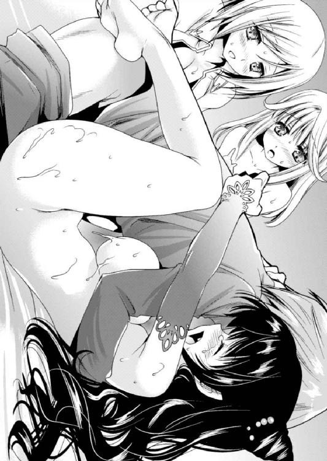
かつてない絶頂の域に押し上げられた少女はそのまま硬直して。
まだ膣奥で出続けている精液が子宮壁をねっとりと叩くたび、四肢を痙攣させ、短い悲鳴を喘がせていたが......やがて完全に全身からの力を抜いた。
くたーっと寝そべるパンドラを見下ろし、リオンもまたその隣に転がる。
「んっ、あうぅ......リオン......」
ぼんやりとした瞳のまま呟き、腕にきゅっとしがみついてきた彼女に、リオンはあらためて胸をときめかせていた。
※
「子供かぁ......」「受精......」
どちらがどちらの声だったかは知らないが、とにかくそんな二人の呟きで我に返った。
すぐ隣ではまだパンドラが荒い息を繰り返していたので、他の人間の呟きとなれば誰のものかは確かめるまでもない。
ベッドから身を起こすと、まるで獲物を狙う野獣の忍び足で二人が這い寄っていた。
「二人とも......なんだか目が怖いんだけど」
セリアもノーラも、まるでお酒でも飲んだように目が据わっている。
「子供を作ったら、リオンちゃんだって少しはしっかりしてくれるかも......」
なんて言いながらベッドを這い寄ってくるのはセリア。にっこりしているのになんだか恐怖を感じるのは、幼馴染みならではの直感だ。
「受精......できるか試したい」
そして好奇心の旺盛なスライムちゃんにも困ったものだ。同じようにベッドに乗ったノーラの身体から、下着代わりに貼りついていた密着スライムがとろりと落ちる。
「うわ、あのっ、二人とも落ち着いて......」
さっきと違って、今は受精だの子供だの言われても背筋が寒くなるばかり。
（リオンは逃げ出した！）
がばっと身体を起こしてベッドを飛び降りようと......したところでその足にノーラがしがみついた。さらにバランスを崩して倒れたところをセリアが胸の弾力で受け止める。
（しかし逃げられない！）
すでにペニスには、ノーラの顔が近づいていて。
「んむ......まずは味見......」
「味見って......、いつもそんなこと言って出なくなるまでしゃぶりつくすくせに！」
ぱくっと咥えられた亀頭がモゴモゴとしゃぶられる。
おいしそうに目を細めるノーラだが、それだけに終わらないのはいつものこと。
「へぇ......いつもそんなふうにして、ノーラさんに舐めさせてるの？」
「あ、いつもっていうか......違うよ？ たぶん思ってるよりは少ないって」
背中から耳元に囁かれて、近くに刃物がなくてよかったと思ってしまう。
「分かった、分かったから！ せめて食事のあとに......！ だって俺、三日も寝てた重病人なんだよ？ いくらなんでもそんなに連続だなんて、もうエネルギーが......」
「でも......そうは見えないね」
セリアがじとーっと股間を見つめる。ノーラが綺麗にしたペニスは、さらに裏筋を舐め上げられてピクピクと震え、すでに血管がパンパンに張っている。
まだまだ満足しそうにない水の四天王と光の四天王に挟まれ、しかもすぐ隣では、むくりと起き上がったパンドラがリオンを独占されてむっとしている気配さえ......。
勇者は逃げるのを諦め、がっくりとうなだれるしかなかった。
覚えている限りでも三巡したはずだ。
もうぐったりしてしまって、みんなで眠りについてから数時間は経ったろうか。遠くからの小鳥の声で目を覚ますと、ちょうどそこにそろりそろりと手が伸びてきた。
「うっ、セリア......？」
少し先に起きていたのかすでに着替えていて、リオンが目覚めるのを待っていたような感じ。
「リオンちゃん昨日は大丈夫だった？ あんなに......その、何度も勃起させられて......」
自分だって無言の圧力でそうさせたくせに、という文句を呑み込んで慌ててこちらも着替えたのだが。
「あのー。さすがに疲れたんだけど......？」
リオンの言葉尻が疑問形なのは、気遣うような言葉のわりにセリアの手の平がなでなでと股間をさすってきたから。
「そう......。でも、少し寝たなら大丈夫なんじゃないかな？」
「あのー、セリアさん？ なんでそんな無茶をおっしゃるのでしょうか？」
「ほら、リオンちゃんって昔から本気を出すまで時間がかかるっていうか......剣も魔法もダメダメだなんて言われてたけど、いつも本気を出してなかっただけなんだよね」
言いながら股間をつんっと指先でつついてくるのがくすぐったい。
「私はそういうのに気づいてたけどね......」
「え？ そういや前にもそんなこと言ってたけど、それって絶対買いかぶってるって」
「確かにこんな状況になっちゃってるし、そうかもしれないけど......」
あ、セリアまで認めてしまった。そこは否定してほしかった。
「でも今はもう一回だけ......ね？ お願いしていいよね？」
そして結局それなのか。きゅっと膨らみを握ってすりすりと撫でてくる。
「わわわっ！ だ、だめ！ もう疲れたの！ 今日はぐったりなんだよ！」
ムズムズっとした感覚で勃起してしまいそうになって、危うくセリアの言葉通りになりそうだった。慌てて身体を起こしてベッド上を後ずさる。
「そういう態度なんだ？ リオンちゃん、私より格下のくせに」
不満げなセリアが頬を膨らませて新鮮な表情だったが......いま格下と言っただろうか？
「どういうこと？ 格下って......」
さっきは褒めていたくせに今度はけなすような言葉。いやーな予感がする。
「そういえばリオンは知らなかったわね......。四天王内で序列の変動があったのよ」
パンドラが目を擦って「ふあぁぁ......」とあくびしながら背中に抱きついてきた。ぷにゅっとしたおっぱいに危うく思考を持っていかれそうになるのをなんとかこらえる。
「序列ってことは......ええっ？ まさかセリアは......」
「そう。リオンちゃんよりも上......四天王でナンバースリーなんだって」
「あああああっ？ なんで？ あとから入ってきたくせに！」
納得いかない、とばかりに食ってかかるが、パンドラが溜め息。
「わたしも反対したんだけど......。なにしろセリアって、元がすごく強かったし。光属性との相性もよかったみたいで、明らかにリオンよりも強いのよ」
「だって俺、一応勇者だよ？ こないだだってその力を発揮して、なんかすごかったよね、俺って！ その分を考慮してもらわないと！」
みっともないくらいに食い下がるが、返ってきたのはやはり溜め息。
「勇者じゃないとはいえ、セリアもそれに近い一族でしょ？ だから勇者の力の具合がちょうどいいらしいのよ。リオンの場合は力が強すぎて魔族の力を跳ね返しちゃうようなところがあるけど、セリアの場合は両方からプラスされて強くなるっていうか......」
「そ、そんな......ずるい」
がっくりと肩を落とした。
そこに、ぽん、と手が置かれて振り向くと、ノーラが紙切れを差し出している。
「手紙......？ あ、これスルトさんの字だ」
「......（こくり）」
開いてみると、それもまた驚愕の内容。
『ベリアルさんの代わりに四天王のトップを張るだけの自信がありません。これまでお世話になりましたが、実家に帰ろうと思います。あとのことはノーラさんにすべて一任するので、委細よろしくお願いします......ッス』
そんな内容。
「......ということは、四天王のトップは？」
ノーラが無言で自分を指さす。よく見ると、口元がちょっと誇らしげだ。
「ぐぐぐぐっ......」
知らない間にそんなことになっていようとは。
（いや、いいんだよ？ べつに勝手に決めてくれても。だって俺勇者だし！ 四天王なんて、そのうちやめてやるんだからな！）
口に出す勇気がないので心の中で叫ぶ。
「でも大丈夫よ。わたしがついてるんだから、すぐに出世するわよ。ね？」
「ううっ、パンドラ、慰めなんていらない......」
ますます惨めになってしまってリオンが俯いたが......その顔をばばっと上げる。
「提案なんだけど、どうせまた一人足りなくなっちゃったんだから、これを機にもう一回序列を決め直すのはどうかな？ ほら、強さだけじゃなくて、もっと違う面も見て適材適所で決めるべきだと思うんだよね。なんだったら俺がトップになってもいいけど？」
「......弱いのに？」
「そうよ、リオンちゃん！ まだまだ弱いんだから四天王のトップなんて危険だよ！」
「ノーラもセリアも、弱い弱いって言うなよ！ 今はそうでも、勇者なんだし伸びしろは一番あるんだぞ、たぶんそんな感じがする！ しかも四天王って下っ端が一番危険だし......俺の知らない間に決まってたなんて、やっぱり不公平だ！」
適当な理由を付けるリオンは、数十秒前に心の中で叫んだことをすでに忘れている。
「それに現状だと結局のところ四天王は一人足りないんだろ？ 新しい人を入れるついでに序列も考え直すべきだ！ うん、そうだ！」
万年人材不足に陥ってしまった四天王だが、やはり四人いないと格好がつかない。
そこを突いて序列の再考を求めたのだけれど、パンドラがなにか思いついたのか、「それなら」と嬉しそうに手を打ち合わせた。
「わたしが新四天王になるのはどう？ リオンと一緒にいられるなら構わないわよ？」
とんでもないことを言い出した魔王の娘さんに、リオンが頭を振りたくる。
「そそっ、それはダメ！ ただでさえ弱い俺がパンドラの闇守護をなくしちゃったら困ったことになるだろ!? それはなしで！」
「あっ、やっぱりリオンはわたしに属性守護してもらいたいの？ うふふっ、しょうがないなー、もー。照れちゃうじゃないのー」
「リオンちゃん、さっきは弱いって言うなって言ったのに、自分で......」
「そ、それはそれ、これはこれ！」
「むっ。とにかく、今はリオンちゃんが一番下なの。四天王内の序列は絶対なんだよね？ 命令を聞かないと......どうなるのかな？」
セリアの手が再び下半身へと伸びてきた。
なんだか猫なで声になっているセリアだが、すっかり強権おねだりモードだ。
「でも、今は私が一番上」
そこに念願の四天王トップになったノーラが割り込み、リオンの腕にしがみつく。
「............」
「............」
セリアがもう片方の腕を掴んで抱き寄せると、負けじとノーラが引っ張り返す。
（か、勘弁してくれ......）
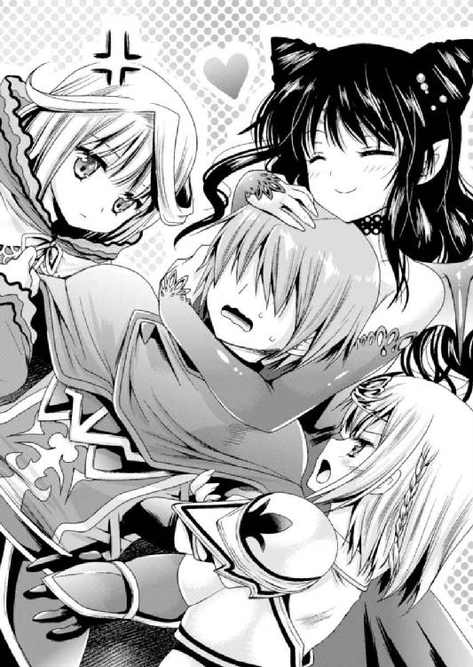
右に左に揺らされながら、リオンはこっそり溜め息をつく。グダグダになってしまった臨時の四天王会議はこれで終了のようだ。
「うふふふっ、愛人どもがずいぶんと必死ねー。けっきょくリオンはわたしのことが一番好きなのに。ねっ？ そうよねー？」
「ぐぐっ、苦しいんだけど......」
微笑みを浮かべて背中から抱きついてきたパンドラは一人余裕ぶった口ぶりだけれど、所有権を主張するように引っ張っているのはみなと同じ。ぐりぐりされる首が苦しい。
「ううう......ぐぐぐ」
女の子達の言い争う声を聞きながら、だんだん顔を青ざめさせていくリオン。
彼は遠のく意識の中で固く誓いを立てていた。
（くそおおおっ！ こうなったら絶対に四天王トップになってやるからな！ それでみんなを俺の前にひざまずかせてやるううっ！）
まるで悪の四天王のような誓いを心に叫び、女の子に囲まれた勇者様は気を失った。
※
暗闇に包まれた魔界に四つの影が集っている──。
『ククク......人間界駐在四天王のスルトがやられたか』
『しかし奴はやられたと言うよりも魔界に出戻ってきただけ......』
『四天王の面汚しよ......マジな話』
『だよねぇ......』
だらりとした空気で決めゼリフを言い合っているのは、魔族の本拠であるこちらに居を構えた本家の魔界四天王。
今日は、魔界の実家に帰ってきてしまったスルトの処分についての臨時四天王会議......ということになっているが、実際のところは井戸端会議だった。
彼らにとっては人間界の四天王など格下に過ぎないが、同時に、刺激のある都会に住める羨ましい存在でもある。
『よし、オレが出張して様子を見てくるか』
『それはずるい。行くなら私が』
『そういえばパンドラ姫に認められて闇の四天王が生まれたんだって？』
『せっかくだからどんな奴か見に行きたいよね！』
本人の知らないところで話は進んでいく......。
そしてもはや、スルトはどうでもいい雰囲気......。
四天王界の闇は、リオンが思っているよりもはるかに深いようだった。
こんにちは、中坊の頃にスケベ四天王と呼ばれていた黒歴史を持つ倉田です。
リアル世界で四天王扱いを受けることはなかなかないと思いますが、今思えば、人生のこの頃からすでに道を踏み外していた気がします。俺という人間も困ったものですね。
......それはともかく本編のお話です。
本作品は「へたれな勇者様がなぜか悪の四天王になってしまいました」というお話ですよ！ もちろんそこには可愛い女の子達も出てきて、エッチな状況にもなってしまうわけです。ウハウハなわけです。
すでに読了された方、いかがだったでしょうか？ 楽しんでいただけたなら幸いです。
さて、今回も関係各位に感謝すべきことが山積みです。
素敵なイラストを描いてくださった黒澤清崇様、執筆にあたって的確なご指示をいただいた編集様、ありがとうございました。
そしてもちろん読者様も。この本を手にとってくださって、感謝感激雨あられです。
それでは、またどこかで。
いつかはこんな日が来る、そう信じてましたよ、ええ。遂にあとみっく文庫で２冊目が出せました。やったよ、おにいちゃん！
ファンタジー物の中でも、ユニークな設定の絵を描かせて頂きました。私は作中のパンドラがお気に入りです。皆さんも、是非是非パンドラを応援してあげて下さい。
あとみっく文庫
どうやら俺は四天王の中で最弱みたいです
著者 倉田シンジ
装丁 キルタイムコミュニケーション制作部
発行 株式会社キルタイムコミュニケーション
〒１０４-００４１ 東京都中央区新富１-３-７ヨドコウビル１Ｆ
著作権 ©Shinji Kurata 2012-2013
当ファイルは、二次元ドリーム文庫orあとみっく文庫『どうやら俺は四天王の中で最弱みたいです』（２０１２年10月29日 初版発行）に基づいて作成しております。
※本作品の全部あるいは一部を無断で複製・転載・配信・送信したり、ホームページ上に転載することを禁止します。本作品の内容を無断で改変、改ざん等行うことも禁止します。また、有償・無償にかかわらず本作品を第三者に譲渡することはできません。